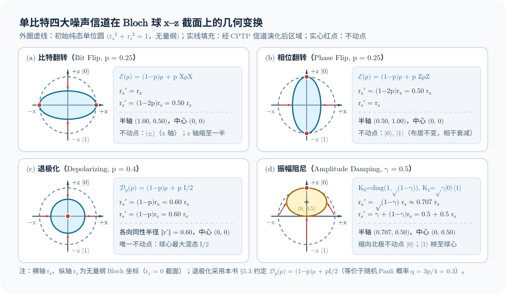

05｜混态、噪声与量子信道
第 03 章 已经用约化密度矩阵描述了纠缠对的一半，第 04 章 则主要用理想酉门追踪线路里的状态变化。本章把两种描述接起来。随机态制备与只观察纠缠对的一部分都可能产生混态。真实处理器中的比特还会与电磁场、材料缺陷或控制线路耦合，使相干性减弱或能量流出。本章用密度矩阵记录这些状态，再用量子信道描述它们的变化。
本章把量子计算语言从封闭系统升级到开放系统，按两条阅读路径组织（通用记号汇总见符号表 ）：
★ 首遍主线 ：第 1.1–1.3 节（密度矩阵与纯度）→ \to → → \to → → \to → → \to → → \to → T 1 , T 2 ∗ , T 2 , T ϕ T_1, T_2^*, T_2, T_\phi T 1 , T 2 ∗ , T 2 , T ϕ → \to → ☆ 进阶选读 ：第 1.4 节（HJW 定理）、第 3.3 节（量子仪器）、第 4.2 节（超算符五表示互转）、第 7 节（1 / f 1/f 1/ f
本章重点区分四组易混记号：
E m E_m E m I m \mathcal I_m I m K k K_k K k E m ⪰ 0 E_m\succeq 0 E m ⪰ 0 I m \mathcal I_m I m K k K_k K k ∑ k K k † K k = I \sum_k K_k^\dagger K_k=I ∑ k K k † K k = I J E J_{\mathcal E} J E S E \mathcal S_{\mathcal E} S E R R R D p \mathcal D_p D p D ~ q \widetilde{\mathcal D}_q D q p e q p_{\mathrm{eq}} p eq p p p q q q q = 3 4 p q=\frac{3}{4}p q = 4 3 p r = 1 − F a v g = 2 3 q r=1-F_{\mathrm{avg}}=\frac{2}{3}q r = 1 − F avg = 3 2 q ∣ 1 ⟩ |1\rangle ∣1 ⟩ p e q p_{\mathrm{eq}} p eq r z r_z r z r r r T T T F F F T ( ρ , σ ) = 1 2 ∥ ρ − σ ∥ 1 T(\rho,\sigma)=\frac{1}{2}\lVert\rho-\sigma\rVert_1 T ( ρ , σ ) = 2 1 ∥ ρ − σ ∥ 1 F ( ρ , σ ) = Tr ρ σ ρ F(\rho,\sigma)=\operatorname{Tr}\sqrt{\sqrt\rho\,\sigma\sqrt\rho} F ( ρ , σ ) = Tr ρ σ ρ F 2 F^2 F 2 log 2 \log_2 log 2 ln \ln ln
1. 为什么单个态矢量不够：密度矩阵的两种来历
遇到一个新数学对象时，最稳妥的办法是先看看旧工具究竟卡在哪一步。
1.1 来历一：背后有人抛硬币（经典系综）
若制备装置以经典概率 p j p_j p j ∣ ψ j ⟩ ∈ C d |\psi_j\rangle\in\mathbb C^d ∣ ψ j ⟩ ∈ C d 密度矩阵（density matrix） ：
ρ = ∑ j p j ∣ ψ j ⟩ ⟨ ψ j ∣ , p j ≥ 0 , ∑ j p j = 1.
\rho = \sum_j p_j |\psi_j\rangle\langle\psi_j|, \qquad p_j \ge 0,\quad \sum_j p_j = 1.
ρ = j ∑ p j ∣ ψ j ⟩ ⟨ ψ j ∣ , p j ≥ 0 , j ∑ p j = 1. 回看前文反复对比的相干叠加态 ∣ + ⟩ |+\rangle ∣ + ⟩ 量子力学 Q1 第 5 节 与第 02 章第 1.2 节 ），直接写出它们的 2 × 2 2\times 2 2 × 2
ρ c o i n = 1 2 ∣ 0 ⟩ ⟨ 0 ∣ + 1 2 ∣ 1 ⟩ ⟨ 1 ∣ = [ 1 / 2 0 0 1 / 2 ] = I 2 , ρ + = ∣ + ⟩ ⟨ + ∣ = [ 1 / 2 1 / 2 1 / 2 1 / 2 ] .
\rho_{\mathrm{coin}} = \frac{1}{2}|0\rangle\langle 0| + \frac{1}{2}|1\rangle\langle 1| = \begin{bmatrix} 1/2 & 0 \\ 0 & 1/2 \end{bmatrix} = \frac{I}{2},
\qquad
\rho_+ = |+\rangle\langle +| = \begin{bmatrix} 1/2 & 1/2 \\ 1/2 & 1/2 \end{bmatrix}.
ρ coin = 2 1 ∣0 ⟩ ⟨ 0∣ + 2 1 ∣1 ⟩ ⟨ 1∣ = [ 1/2 0 0 1/2 ] = 2 I , ρ + = ∣ + ⟩ ⟨ + ∣ = [ 1/2 1/2 1/2 1/2 ] . 两张矩阵的差异一目了然：主对角元 （ρ 00 , ρ 11 \rho_{00}, \rho_{11} ρ 00 , ρ 11 布居 population）记录计算基概率，两者均为 1 / 2 1/2 1/2 非对角元 （ρ 01 , ρ 10 \rho_{01}, \rho_{10} ρ 01 , ρ 10 相干项 coherence）记录基态间稳定的相对相位关联，ρ + \rho_+ ρ + 1 / 2 1/2 1/2 X X X ∣ + ⟩ |+\rangle ∣ + ⟩ ρ c o i n \rho_{\mathrm{coin}} ρ coin
1.2 来历二：只看见纠缠对的一半（子系统约化态）
即使不存在任何人为的经典随机制备，只要系统 A A A B B B 第 03 章第 4.2 节 算过的 Bell 态 ∣ Φ + ⟩ = ∣ 00 ⟩ + ∣ 11 ⟩ 2 |\Phi^+\rangle = \frac{|00\rangle + |11\rangle}{\sqrt{2}} ∣ Φ + ⟩ = 2 ∣00 ⟩ + ∣11 ⟩ B B B
ρ A = Tr B ( ∣ Φ + ⟩ ⟨ Φ + ∣ ) = 1 2 ∣ 0 ⟩ ⟨ 0 ∣ + 1 2 ∣ 1 ⟩ ⟨ 1 ∣ = I 2 .
\rho_A = \operatorname{Tr}_B\bigl(|\Phi^+\rangle\langle\Phi^+|\bigr)
= \frac{1}{2}|0\rangle\langle 0| + \frac{1}{2}|1\rangle\langle 1|
= \frac{I}{2}.
ρ A = Tr B ( ∣ Φ + ⟩ ⟨ Φ + ∣ ) = 2 1 ∣0 ⟩ ⟨ 0∣ + 2 1 ∣1 ⟩ ⟨ 1∣ = 2 I . 比特 A A A ρ c o i n = I / 2 \rho_{\mathrm{coin}}=I/2 ρ coin = I /2 A A A B B B
1.3 密度矩阵的三条铁律与纯度
任意 d d d C d \mathbb C^d C d d × d d\times d d × d ρ \rho ρ
厄米性（Hermiticity） ：ρ † = ρ \rho^\dagger = \rho ρ † = ρ 正半定性（Positive Semidefiniteness） ：ρ ⪰ 0 \rho \succeq 0 ρ ⪰ 0 ∣ v ⟩ ∈ C d |v\rangle\in\mathbb C^d ∣ v ⟩ ∈ C d ⟨ v ∣ ρ ∣ v ⟩ ≥ 0 \langle v|\rho|v\rangle \ge 0 ⟨ v ∣ ρ ∣ v ⟩ ≥ 0 λ i ≥ 0 \lambda_i \ge 0 λ i ≥ 0 单位迹（Unit Trace） ：Tr ρ = ∑ i = 0 d − 1 ρ i i = 1 \operatorname{Tr}\rho = \sum_{i=0}^{d-1}\rho_{ii} = 1 Tr ρ = ∑ i = 0 d − 1 ρ ii = 1 ∑ i λ i = 1 \sum_i \lambda_i = 1 ∑ i λ i = 1 1 1 1
不要把第 2 条简化成“主对角线元素都非负”。回忆第 01 章 的反例：矩阵 [ 1 / 2 1 1 1 / 2 ] \begin{bmatrix}1/2 & 1\\ 1 & 1/2\end{bmatrix} [ 1/2 1 1 1/2 ] 1 1 1 3 / 2 3/2 3/2 − 1 / 2 -1/2 − 1/2 ∣ − ⟩ |-\rangle ∣ − ⟩ ⟨ − ∣ ρ ∣ − ⟩ = − 1 / 2 < 0 \langle -|\rho|-\rangle = -1/2 < 0 ⟨ − ∣ ρ ∣ − ⟩ = − 1/2 < 0
有了合法密度矩阵，怎么一眼分辨它是纯态 还是混态 ？定义一个极好算的标量——纯度（purity） γ p u r ( ρ ) = Tr ( ρ 2 ) \gamma_{\mathrm{pur}}(\rho) = \operatorname{Tr}(\rho^2) γ pur ( ρ ) = Tr ( ρ 2 ) ρ = ∑ i = 1 d λ i ∣ u i ⟩ ⟨ u i ∣ \rho = \sum_{i=1}^d \lambda_i |u_i\rangle\langle u_i| ρ = ∑ i = 1 d λ i ∣ u i ⟩ ⟨ u i ∣ λ i ≥ 0 \lambda_i \ge 0 λ i ≥ 0 ∑ i = 1 d λ i = 1 \sum_{i=1}^d \lambda_i = 1 ∑ i = 1 d λ i = 1 ρ 2 = ∑ i = 1 d λ i 2 ∣ u i ⟩ ⟨ u i ∣ \rho^2 = \sum_{i=1}^d \lambda_i^2 |u_i\rangle\langle u_i| ρ 2 = ∑ i = 1 d λ i 2 ∣ u i ⟩ ⟨ u i ∣
Tr ( ρ 2 ) = ∑ i = 1 d λ i 2 .
\operatorname{Tr}(\rho^2) = \sum_{i=1}^d \lambda_i^2.
Tr ( ρ 2 ) = i = 1 ∑ d λ i 2 . 由于每个 λ i ∈ [ 0 , 1 ] \lambda_i \in [0,1] λ i ∈ [ 0 , 1 ] λ i 2 ≤ λ i \lambda_i^2 \le \lambda_i λ i 2 ≤ λ i Tr ( ρ 2 ) ≤ ∑ i λ i = 1 \operatorname{Tr}(\rho^2) \le \sum_i \lambda_i = 1 Tr ( ρ 2 ) ≤ ∑ i λ i = 1 1 1 1 0 0 0 ρ = ∣ ψ ⟩ ⟨ ψ ∣ \rho = |\psi\rangle\langle\psi| ρ = ∣ ψ ⟩ ⟨ ψ ∣ ρ 2 = ρ \rho^2 = \rho ρ 2 = ρ
1 = ( ∑ i = 1 d 1 ⋅ λ i ) 2 ≤ ( ∑ i = 1 d 1 2 ) ( ∑ i = 1 d λ i 2 ) = d Tr ( ρ 2 ) ,
1 = \left(\sum_{i=1}^d 1\cdot\lambda_i\right)^2 \le \left(\sum_{i=1}^d 1^2\right)\left(\sum_{i=1}^d \lambda_i^2\right) = d\operatorname{Tr}(\rho^2),
1 = ( i = 1 ∑ d 1 ⋅ λ i ) 2 ≤ ( i = 1 ∑ d 1 2 ) ( i = 1 ∑ d λ i 2 ) = d Tr ( ρ 2 ) , 由此得到 d d d
1 d ≤ Tr ( ρ 2 ) ≤ 1.
\frac{1}{d} \le \operatorname{Tr}(\rho^2) \le 1.
d 1 ≤ Tr ( ρ 2 ) ≤ 1.
上界 1 1 1 纯态 达到；
下界 1 / d 1/d 1/ d λ i = 1 / d \lambda_i = 1/d λ i = 1/ d 最大混态（maximally mixed state） ρ = I / d \rho = I/d ρ = I / d
满足 Tr ( ρ 2 ) < 1 \operatorname{Tr}(\rho^2) < 1 Tr ( ρ 2 ) < 1 混态（mixed state） 。
拿前面两张 2 × 2 2\times 2 2 × 2
ρ + 2 = 1 4 [ 1 1 1 1 ] [ 1 1 1 1 ] = 1 4 [ 2 2 2 2 ] = 1 2 [ 1 1 1 1 ] = ρ + , Tr ( ρ + 2 ) = 1 2 + 1 2 = 1 ,
\rho_+^2
= \frac{1}{4}\begin{bmatrix} 1 & 1 \\ 1 & 1 \end{bmatrix}\begin{bmatrix} 1 & 1 \\ 1 & 1 \end{bmatrix}
= \frac{1}{4}\begin{bmatrix} 2 & 2 \\ 2 & 2 \end{bmatrix}
= \frac{1}{2}\begin{bmatrix} 1 & 1 \\ 1 & 1 \end{bmatrix}
= \rho_+,
\qquad
\operatorname{Tr}(\rho_+^2) = \frac{1}{2} + \frac{1}{2} = 1,
ρ + 2 = 4 1 [ 1 1 1 1 ] [ 1 1 1 1 ] = 4 1 [ 2 2 2 2 ] = 2 1 [ 1 1 1 1 ] = ρ + , Tr ( ρ + 2 ) = 2 1 + 2 1 = 1 , 所以 ρ + \rho_+ ρ + ρ c o i n = I / 2 \rho_{\mathrm{coin}} = I/2 ρ coin = I /2
ρ c o i n 2 = ( I 2 ) 2 = I 4 = [ 1 / 4 0 0 1 / 4 ] , Tr ( ρ c o i n 2 ) = 1 4 + 1 4 = 1 2 ,
\rho_{\mathrm{coin}}^2
= \left(\frac{I}{2}\right)^2
= \frac{I}{4}
= \begin{bmatrix} 1/4 & 0 \\ 0 & 1/4 \end{bmatrix},
\qquad
\operatorname{Tr}(\rho_{\mathrm{coin}}^2) = \frac{1}{4} + \frac{1}{4} = \frac{1}{2},
ρ coin 2 = ( 2 I ) 2 = 4 I = [ 1/4 0 0 1/4 ] , Tr ( ρ coin 2 ) = 4 1 + 4 1 = 2 1 , 正好压在二维系统纯度下界 1 / d = 1 / 2 1/d = 1/2 1/ d = 1/2
1.4 进阶选读：同一个密度矩阵，无穷多种制备剧本——HJW 定理直觉
刚才我们已经看到，抛硬币制备 ∣ 0 ⟩ / ∣ 1 ⟩ |0\rangle/|1\rangle ∣0 ⟩ /∣1 ⟩ I / 2 I/2 I /2 ∣ + ⟩ |+\rangle ∣ + ⟩ ∣ − ⟩ |-\rangle ∣ − ⟩
ρ X - c o i n = 1 2 ∣ + ⟩ ⟨ + ∣ + 1 2 ∣ − ⟩ ⟨ − ∣ = 1 4 [ 1 1 1 1 ] + 1 4 [ 1 − 1 − 1 1 ] = 1 2 [ 1 0 0 1 ] = I 2 .
\begin{aligned}
\rho_{X\text{-}\mathrm{coin}}
&= \frac{1}{2}|+\rangle\langle +| + \frac{1}{2}|-\rangle\langle -| \\
&= \frac{1}{4}\begin{bmatrix} 1 & 1 \\ 1 & 1 \end{bmatrix}
+ \frac{1}{4}\begin{bmatrix} 1 & -1 \\ -1 & 1 \end{bmatrix}
= \frac{1}{2}\begin{bmatrix} 1 & 0 \\ 0 & 1 \end{bmatrix}
= \frac{I}{2}.
\end{aligned}
ρ X - coin = 2 1 ∣ + ⟩ ⟨ + ∣ + 2 1 ∣ − ⟩ ⟨ − ∣ = 4 1 [ 1 1 1 1 ] + 4 1 [ 1 − 1 − 1 1 ] = 2 1 [ 1 0 0 1 ] = 2 I . 两台机器用完全不同的材料，造出的却是同一个密度矩阵 I / 2 I/2 I /2 ρ \rho ρ 仅对当前系统做任何物理测量，都不可能把它们区分开 。
究竟哪些不同的纯态系综会合并成同一个 ρ \rho ρ Hughston–Jozsa–Wootters（HJW）定理 （1993）给出了完整答案。把带概率权重的未归一化向量记作 ∣ ψ ~ j ⟩ = p j ∣ ψ j ⟩ |\tilde\psi_j\rangle = \sqrt{p_j}|\psi_j\rangle ∣ ψ ~ j ⟩ = p j ∣ ψ j ⟩ ρ = ∑ j ∣ ψ ~ j ⟩ ⟨ ψ ~ j ∣ \rho = \sum_j |\tilde\psi_j\rangle\langle\tilde\psi_j| ρ = ∑ j ∣ ψ ~ j ⟩ ⟨ ψ ~ j ∣ { ∣ ψ ~ j ⟩ } \{|\tilde\psi_j\rangle\} { ∣ ψ ~ j ⟩} { ∣ ϕ ~ k ⟩ } \{|\tilde\phi_k\rangle\} { ∣ ϕ ~ k ⟩} ρ \rho ρ 当且仅当 存在一个酉矩阵 u j k u_{jk} u jk
∣ ψ ~ j ⟩ = ∑ k u j k ∣ ϕ ~ k ⟩ .
|\tilde\psi_j\rangle = \sum_k u_{jk} |\tilde\phi_k\rangle.
∣ ψ ~ j ⟩ = k ∑ u jk ∣ ϕ ~ k ⟩ . 仍取这里的 ρ = I / 2 \rho=I/2 ρ = I /2 ∣ Φ + ⟩ A E \lvert\Phi^+\rangle_{AE} ∣ Φ + ⟩ A E E E E A A A ∣ 0 ⟩ , ∣ 1 ⟩ \lvert0\rangle,\lvert1\rangle ∣ 0 ⟩ , ∣ 1 ⟩ X X X ∣ + ⟩ , ∣ − ⟩ \lvert+\rangle,\lvert-\rangle ∣ + ⟩ , ∣ − ⟩ ρ = diag ( 3 / 4 , 1 / 4 ) \rho=\operatorname{diag}(3/4,1/4) ρ = diag ( 3/4 , 1/4 ) 3 / 4 ∣ 00 ⟩ + 1 2 ∣ 11 ⟩ \sqrt{3/4}\lvert00\rangle+\tfrac12\lvert11\rangle 3/4 ∣ 00 ⟩ + 2 1 ∣ 11 ⟩ X X X A A A 3 / 4 ∣ 0 ⟩ ± 1 2 ∣ 1 ⟩ \sqrt{3/4}\lvert0\rangle\pm\tfrac12\lvert1\rangle 3/4 ∣ 0 ⟩ ± 2 1 ∣ 1 ⟩ E E E ρ \rho ρ 第 18 章 。
2. 兑现 Bloch 球之约：从球面纯态到整个实心球
在第 02 章 里，我们把所有单比特纯态画到了三维单位球面 ∣ r ⃗ ∣ = 1 |\vec r|=1 ∣ r ∣ = 1 ∣ r ⃗ ∣ ≤ 1 |\vec r|\le 1 ∣ r ∣ ≤ 1
2.1 Pauli 基的 Hilbert–Schmidt 正交性
沿用第 01 章第 5.6 节 已验证过的四个厄米基矩阵 σ 0 = I , σ 1 = X , σ 2 = Y , σ 3 = Z \sigma_0=I,\;\sigma_1=X,\;\sigma_2=Y,\;\sigma_3=Z σ 0 = I , σ 1 = X , σ 2 = Y , σ 3 = Z σ μ 2 = I \sigma_\mu^2=I σ μ 2 = I 2 × 2 2\times 2 2 × 2 Hilbert–Schmidt 内积 ⟨ A , B ⟩ H S = Tr ( A † B ) \langle A, B\rangle_{\mathrm{HS}} = \operatorname{Tr}(A^\dagger B) ⟨ A , B ⟩ HS = Tr ( A † B )
Tr ( σ μ σ ν ) = 2 δ μ ν ( μ , ν ∈ { 0 , 1 , 2 , 3 } ) .
\operatorname{Tr}(\sigma_\mu \sigma_\nu) = 2\delta_{\mu\nu} \qquad (\mu,\nu \in \{0,1,2,3\}).
Tr ( σ μ σ ν ) = 2 δ μν ( μ , ν ∈ { 0 , 1 , 2 , 3 }) . 由于 2 × 2 2\times 2 2 × 2 4 4 4 2 × 2 2\times 2 2 × 2 I , X , Y , Z I, X, Y, Z I , X , Y , Z
2.2 逐步导出 ρ = 1 2 ( I + r ⃗ ⋅ σ ⃗ ) \rho = \frac{1}{2}(I + \vec r\cdot\vec\sigma) ρ = 2 1 ( I + r ⋅ σ )
设 ρ \rho ρ 2 × 2 2\times 2 2 × 2
ρ = c 0 I + 1 2 ( r x X + r y Y + r z Z ) = c 0 I + 1 2 r ⃗ ⋅ σ ⃗ ,
\rho = c_0 I + \frac{1}{2}\bigl(r_x X + r_y Y + r_z Z\bigr) = c_0 I + \frac{1}{2}\,\vec r\cdot\vec\sigma,
ρ = c 0 I + 2 1 ( r x X + r y Y + r z Z ) = c 0 I + 2 1 r ⋅ σ , 其中系数 c 0 , r x , r y , r z ∈ C c_0, r_x, r_y, r_z \in \mathbb C c 0 , r x , r y , r z ∈ C
第一步：用单位迹 Tr ρ = 1 \operatorname{Tr}\rho = 1 Tr ρ = 1 c 0 c_0 c 0
对展开式两边取迹，利用迹的线性以及 Tr ( I ) = 2 \operatorname{Tr}(I)=2 Tr ( I ) = 2 Tr ( X ) = Tr ( Y ) = Tr ( Z ) = 0 \operatorname{Tr}(X)=\operatorname{Tr}(Y)=\operatorname{Tr}(Z)=0 Tr ( X ) = Tr ( Y ) = Tr ( Z ) = 0
1 = Tr ( ρ ) = c 0 Tr ( I ) + 1 2 ( r x ⋅ 0 + r y ⋅ 0 + r z ⋅ 0 ) = 2 c 0 ⟹ c 0 = 1 2 .
1 = \operatorname{Tr}(\rho)
= c_0 \operatorname{Tr}(I) + \frac{1}{2}\bigl(r_x\cdot 0 + r_y\cdot 0 + r_z\cdot 0\bigr)
= 2c_0
\implies c_0 = \frac{1}{2}.
1 = Tr ( ρ ) = c 0 Tr ( I ) + 2 1 ( r x ⋅ 0 + r y ⋅ 0 + r z ⋅ 0 ) = 2 c 0 ⟹ c 0 = 2 1 . 第二步：用正交性提取 r j r_j r j
给展开式两边同乘 σ j \sigma_j σ j j ∈ { x , y , z } j \in \{x,y,z\} j ∈ { x , y , z } Tr ( σ μ σ ν ) = 2 δ μ ν \operatorname{Tr}(\sigma_\mu \sigma_\nu) = 2\delta_{\mu\nu} Tr ( σ μ σ ν ) = 2 δ μν
Tr ( ρ σ j ) = 1 2 Tr ( I σ j ) + 1 2 ∑ l ∈ { x , y , z } r l Tr ( σ l σ j ) = 0 + 1 2 ⋅ ( 2 r j ) = r j .
\operatorname{Tr}(\rho\sigma_j)
= \frac{1}{2}\operatorname{Tr}(I\sigma_j) + \frac{1}{2}\sum_{l\in\{x,y,z\}} r_l \operatorname{Tr}(\sigma_l \sigma_j)
= 0 + \frac{1}{2}\cdot (2 r_j)
= r_j.
Tr ( ρ σ j ) = 2 1 Tr ( I σ j ) + 2 1 l ∈ { x , y , z } ∑ r l Tr ( σ l σ j ) = 0 + 2 1 ⋅ ( 2 r j ) = r j . 所以 r j = Tr ( ρ σ j ) r_j = \operatorname{Tr}(\rho\sigma_j) r j = Tr ( ρ σ j ) X , Y , Z X, Y, Z X , Y , Z ⟨ σ j ⟩ \langle\sigma_j\rangle ⟨ σ j ⟩ r j r_j r j ( Tr M ) ∗ = Tr ( M † ) \bigl(\operatorname{Tr} M\bigr)^* = \operatorname{Tr}(M^\dagger) ( Tr M ) ∗ = Tr ( M † ) ρ † = ρ \rho^\dagger=\rho ρ † = ρ σ j † = σ j \sigma_j^\dagger=\sigma_j σ j † = σ j
r j ∗ = [ Tr ( ρ σ j ) ] ∗ = Tr ( ( ρ σ j ) † ) = Tr ( σ j † ρ † ) = Tr ( σ j ρ ) = Tr ( ρ σ j ) = r j ,
r_j^* = \bigl[\operatorname{Tr}(\rho\sigma_j)\bigr]^*
= \operatorname{Tr}\bigl((\rho\sigma_j)^\dagger\bigr)
= \operatorname{Tr}(\sigma_j^\dagger \rho^\dagger)
= \operatorname{Tr}(\sigma_j \rho)
= \operatorname{Tr}(\rho\sigma_j)
= r_j,
r j ∗ = [ Tr ( ρ σ j ) ] ∗ = Tr ( ( ρ σ j ) † ) = Tr ( σ j † ρ † ) = Tr ( σ j ρ ) = Tr ( ρ σ j ) = r j , 其中倒数第二步用了迹的循环性质 Tr ( A B ) = Tr ( B A ) \operatorname{Tr}(AB)=\operatorname{Tr}(BA) Tr ( A B ) = Tr ( B A ) r ⃗ = ( r x , r y , r z ) ∈ R 3 \vec r = (r_x, r_y, r_z) \in \mathbb R^3 r = ( r x , r y , r z ) ∈ R 3
把四个矩阵逐项加在一起，写出完整的 2 × 2 2\times 2 2 × 2
ρ = 1 2 ( I + r x X + r y Y + r z Z ) = 1 2 ( [ 1 0 0 1 ] + [ 0 r x r x 0 ] + [ 0 − i r y i r y 0 ] + [ r z 0 0 − r z ] ) = 1 2 [ 1 + r z r x − i r y r x + i r y 1 − r z ] .
\begin{aligned}
\rho
&= \frac{1}{2}\bigl(I + r_x X + r_y Y + r_z Z\bigr) \\
&= \frac{1}{2}\left(
\begin{bmatrix} 1 & 0 \\ 0 & 1 \end{bmatrix}
+ \begin{bmatrix} 0 & r_x \\ r_x & 0 \end{bmatrix}
+ \begin{bmatrix} 0 & -i r_y \\ i r_y & 0 \end{bmatrix}
+ \begin{bmatrix} r_z & 0 \\ 0 & -r_z \end{bmatrix}
\right) \\
&= \frac{1}{2}\begin{bmatrix}
1 + r_z & r_x - i r_y \\
r_x + i r_y & 1 - r_z
\end{bmatrix}.
\end{aligned}
ρ = 2 1 ( I + r x X + r y Y + r z Z ) = 2 1 ( [ 1 0 0 1 ] + [ 0 r x r x 0 ] + [ 0 i r y − i r y 0 ] + [ r z 0 0 − r z ] ) = 2 1 [ 1 + r z r x + i r y r x − i r y 1 − r z ] . 一眼就能看出物理含义：纵向坐标 r z r_z r z p ( 0 ) − p ( 1 ) = 1 + r z 2 − 1 − r z 2 = r z p(0)-p(1) = \frac{1+r_z}{2}-\frac{1-r_z}{2}=r_z p ( 0 ) − p ( 1 ) = 2 1 + r z − 2 1 − r z = r z ( r x , r y ) (r_x, r_y) ( r x , r y )
2.3 逐行求本征值：为什么合法态恰好是实心球 ∣ r ⃗ ∣ ≤ 1 |\vec r| \le 1 ∣ r ∣ ≤ 1
到目前为止，我们只用了厄米性和单位迹，还没有动用第三条公理——正半定性 ρ ⪰ 0 \rho \succeq 0 ρ ⪰ 0 ρ \rho ρ det ( ρ − λ I ) = 0 \det(\rho - \lambda I) = 0 det ( ρ − λ I ) = 0
先把 ρ \rho ρ
Tr ( ρ ) = 1 + r z 2 + 1 − r z 2 = 1 ,
\operatorname{Tr}(\rho) = \frac{1+r_z}{2} + \frac{1-r_z}{2} = 1,
Tr ( ρ ) = 2 1 + r z + 2 1 − r z = 1 , det ( ρ ) = ( 1 + r z 2 ) ( 1 − r z 2 ) − ( r x − i r y 2 ) ( r x + i r y 2 ) = 1 − r z 2 4 − r x 2 − ( i r y ) 2 4 = 1 − r z 2 − ( r x 2 + r y 2 ) 4 = 1 − ∣ r ⃗ ∣ 2 4 ,
\begin{aligned}
\det(\rho)
&= \left(\frac{1+r_z}{2}\right)\left(\frac{1-r_z}{2}\right)
- \left(\frac{r_x - i r_y}{2}\right)\left(\frac{r_x + i r_y}{2}\right) \\
&= \frac{1 - r_z^2}{4} - \frac{r_x^2 - (i r_y)^2}{4} \\
&= \frac{1 - r_z^2 - (r_x^2 + r_y^2)}{4}
= \frac{1 - |\vec r|^2}{4},
\end{aligned}
det ( ρ ) = ( 2 1 + r z ) ( 2 1 − r z ) − ( 2 r x − i r y ) ( 2 r x + i r y ) = 4 1 − r z 2 − 4 r x 2 − ( i r y ) 2 = 4 1 − r z 2 − ( r x 2 + r y 2 ) = 4 1 − ∣ r ∣ 2 , 其中 ∣ r ⃗ ∣ = r x 2 + r y 2 + r z 2 |\vec r| = \sqrt{r_x^2 + r_y^2 + r_z^2} ∣ r ∣ = r x 2 + r y 2 + r z 2 r ⃗ \vec r r 2 × 2 2\times 2 2 × 2 λ 2 − ( Tr ρ ) λ + det ρ = 0 \lambda^2 - (\operatorname{Tr}\rho)\lambda + \det\rho = 0 λ 2 − ( Tr ρ ) λ + det ρ = 0
λ 2 − λ + 1 − ∣ r ⃗ ∣ 2 4 = 0.
\lambda^2 - \lambda + \frac{1 - |\vec r|^2}{4} = 0.
λ 2 − λ + 4 1 − ∣ r ∣ 2 = 0. 算判别式 Δ = ( − 1 ) 2 − 4 ⋅ 1 ⋅ 1 − ∣ r ⃗ ∣ 2 4 = ∣ r ⃗ ∣ 2 ≥ 0 \Delta = (-1)^2 - 4\cdot 1\cdot\frac{1 - |\vec r|^2}{4} = |\vec r|^2 \ge 0 Δ = ( − 1 ) 2 − 4 ⋅ 1 ⋅ 4 1 − ∣ r ∣ 2 = ∣ r ∣ 2 ≥ 0 Δ = ∣ r ⃗ ∣ \sqrt{\Delta} = |\vec r| Δ = ∣ r ∣
λ + = 1 + ∣ r ⃗ ∣ 2 , λ − = 1 − ∣ r ⃗ ∣ 2 .
\lambda_+ = \frac{1 + |\vec r|}{2}, \qquad \lambda_- = \frac{1 - |\vec r|}{2}.
λ + = 2 1 + ∣ r ∣ , λ − = 2 1 − ∣ r ∣ . 因为 ∣ r ⃗ ∣ ≥ 0 |\vec r| \ge 0 ∣ r ∣ ≥ 0 λ + ≥ 1 / 2 > 0 \lambda_+ \ge 1/2 > 0 λ + ≥ 1/2 > 0 ρ \rho ρ λ − \lambda_- λ −
ρ ⪰ 0 ⟺ λ − = 1 − ∣ r ⃗ ∣ 2 ≥ 0 ⟺ ∣ r ⃗ ∣ ≤ 1.
\rho \succeq 0 \iff \lambda_- = \frac{1 - |\vec r|}{2} \ge 0 \iff |\vec r| \le 1.
ρ ⪰ 0 ⟺ λ − = 2 1 − ∣ r ∣ ≥ 0 ⟺ ∣ r ∣ ≤ 1. 这就彻底证明了：全体合法的单比特密度矩阵，与三维实心单位球 { r ⃗ ∈ R 3 : ∣ r ⃗ ∣ ≤ 1 } \{\vec r \in \mathbb R^3 : |\vec r| \le 1\} { r ∈ R 3 : ∣ r ∣ ≤ 1 }
顺手用两条独立路线算出纯度 Tr ( ρ 2 ) \operatorname{Tr}(\rho^2) Tr ( ρ 2 )
Tr ( ρ 2 ) = λ + 2 + λ − 2 = ( 1 + ∣ r ⃗ ∣ ) 2 + ( 1 − ∣ r ⃗ ∣ ) 2 4 = 1 + ∣ r ⃗ ∣ 2 2 .
\operatorname{Tr}(\rho^2) = \lambda_+^2 + \lambda_-^2
= \frac{(1+|\vec r|)^2 + (1-|\vec r|)^2}{4}
= \frac{1 + |\vec r|^2}{2}.
Tr ( ρ 2 ) = λ + 2 + λ − 2 = 4 ( 1 + ∣ r ∣ ) 2 + ( 1 − ∣ r ∣ ) 2 = 2 1 + ∣ r ∣ 2 .
路线二（直接把矩阵平方求迹） ：利用 Pauli 反对易关系 σ j σ l + σ l σ j = 2 δ j l I \sigma_j\sigma_l + \sigma_l\sigma_j = 2\delta_{jl}I σ j σ l + σ l σ j = 2 δ j l I ( r ⃗ ⋅ σ ⃗ ) 2 = ∣ r ⃗ ∣ 2 I (\vec r\cdot\vec\sigma)^2 = |\vec r|^2 I ( r ⋅ σ ) 2 = ∣ r ∣ 2 I ρ 2 = 1 4 ( ( 1 + ∣ r ⃗ ∣ 2 ) I + 2 r ⃗ ⋅ σ ⃗ ) \rho^2 = \frac{1}{4}\bigl((1+|\vec r|^2)I + 2\vec r\cdot\vec\sigma\bigr) ρ 2 = 4 1 ( ( 1 + ∣ r ∣ 2 ) I + 2 r ⋅ σ ) Tr ( ρ 2 ) = 1 + ∣ r ⃗ ∣ 2 2 \operatorname{Tr}(\rho^2) = \frac{1+|\vec r|^2}{2} Tr ( ρ 2 ) = 2 1 + ∣ r ∣ 2
现在整颗 Bloch 球的地理版图全部明朗了：
回看第 02 章第 8.2 节 的线性逆层析反例 r ⃗ ^ = ( 0.8 , 0.8 , 0 ) \hat{\vec r} = (0.8,\; 0.8,\; 0) r ^ = ( 0.8 , 0.8 , 0 ) 1.28 ≈ 1.1314 > 1 \sqrt{1.28}\approx 1.1314 > 1 1.28 ≈ 1.1314 > 1 λ ± = 1 ± 1.28 2 ≈ 1.0657 , − 0.0657 \lambda_\pm = \frac{1 \pm \sqrt{1.28}}{2} \approx 1.0657,\; -0.0657 λ ± = 2 1 ± 1.28 ≈ 1.0657 , − 0.0657 ∣ ψ − ⟩ = 1 2 ( ∣ 0 ⟩ − e i π / 4 ∣ 1 ⟩ ) |\psi_-\rangle = \frac{1}{\sqrt{2}}\bigl(|0\rangle - e^{i\pi/4}|1\rangle\bigr) ∣ ψ − ⟩ = 2 1 ( ∣0 ⟩ − e iπ /4 ∣1 ⟩ ) ρ ^ \hat\rho ρ ^ ⟨ ψ − ∣ ρ ^ ∣ ψ − ⟩ = − 0.0657 \langle\psi_-|\hat\rho|\psi_-\rangle = -0.0657 ⟨ ψ − ∣ ρ ^ ∣ ψ − ⟩ = − 0.0657
推广边界提醒 ：不要以为“实心超球面”能直接照搬到更高维。对于 d ≥ 3 d \ge 3 d ≥ 3 d = 4 d=4 d = 4 Tr ( λ a λ b ) = 2 δ a b \operatorname{Tr}(\lambda_a \lambda_b) = 2\delta_{ab} Tr ( λ a λ b ) = 2 δ ab 使纯态满足 ∣ r ⃗ ∣ = 1 |\vec r|=1 ∣ r ∣ = 1 ρ = 1 d ( I + d ( d − 1 ) 2 r ⃗ ⋅ λ ⃗ ) \rho = \frac{1}{d}\!\left(I + \sqrt{\frac{d(d-1)}{2}}\,\vec r\cdot\vec\lambda\right) ρ = d 1 ( I + 2 d ( d − 1 ) r ⋅ λ ) ∣ r ⃗ ∣ ≤ 1 |\vec r| \le 1 ∣ r ∣ ≤ 1 1 d ( I + r ⃗ ⋅ λ ⃗ ) \frac{1}{d}(I+\vec r\cdot\vec\lambda) d 1 ( I + r ⋅ λ ) 3 > 1 \sqrt{3} > 1 3 > 1 ρ ⪰ 0 \rho \succeq 0 ρ ⪰ 0 不再是欧氏实心球 ，而是一个棱角各异的高维凸体。只有单比特（d = 2 d=2 d = 2
3. 密度矩阵上的演化与测量：从 POVM 到量子仪器
状态从列向量 ∣ ψ ⟩ |\psi\rangle ∣ ψ ⟩ ρ \rho ρ
3.1 封闭酉演化、期望值与 POVM 概率
将第 02 章第 6–7 节 纯态的演化与测量公式按系综线性推广到任意密度矩阵 ρ = ∑ j p j ∣ ψ j ⟩ ⟨ ψ j ∣ \rho = \sum_j p_j |\psi_j\rangle\langle\psi_j| ρ = ∑ j p j ∣ ψ j ⟩ ⟨ ψ j ∣
封闭酉演化 ：ρ ⟼ U ρ U † \rho \longmapsto U \rho U^\dagger ρ ⟼ U ρ U † U ( I / d ) U † = I / d U(I/d)U^\dagger = I/d U ( I / d ) U † = I / d Tr ( ( U ρ U † ) 2 ) = Tr ( ρ 2 ) \operatorname{Tr}((U\rho U^\dagger)^2)=\operatorname{Tr}(\rho^2) Tr (( U ρ U † ) 2 ) = Tr ( ρ 2 ) ∣ r ⃗ ′ ∣ = ∣ r ⃗ ∣ |\vec r'|=|\vec r| ∣ r ′ ∣ = ∣ r ∣ 可观测量期望值 ：对厄米算符 A A A ⟨ A ⟩ = Tr ( A ρ ) \langle A \rangle = \operatorname{Tr}(A\rho) ⟨ A ⟩ = Tr ( A ρ ) 广义测量（POVM）概率 ：对满足 E m ⪰ 0 E_m \succeq 0 E m ⪰ 0 ∑ m E m = I \sum_m E_m = I ∑ m E m = I { E m } \{E_m\} { E m } m m m p ( m ) = Tr ( E m ρ ) p(m) = \operatorname{Tr}(E_m \rho) p ( m ) = Tr ( E m ρ ) p ( m ) ≥ 0 p(m)\ge 0 p ( m ) ≥ 0 ∑ m p ( m ) = 1 \sum_m p(m)=1 ∑ m p ( m ) = 1
3.2 投影测量（PVM）：看结果与丢结果的差别
POVM 只规定结果概率，不规定测后态。对满足 P m † = P m P_m^\dagger = P_m P m † = P m P m P n = δ m n P m P_m P_n = \delta_{mn} P_m P m P n = δ mn P m ∑ m P m = I \sum_m P_m = I ∑ m P m = I
ρ m = P m ρ P m Tr ( P m ρ ) ( 读到结果 m 的条件后态，L u ¨ ders 规则 ) , ρ ′ = ∑ m p ( m ) ρ m = ∑ m P m ρ P m ( 丢弃记录的非选择后态 ) .
\rho_m = \frac{P_m \rho P_m}{\operatorname{Tr}(P_m \rho)}\ \bigl(\text{读到结果 }m\text{ 的条件后态，Lüders 规则}\bigr),
\qquad
\rho' = \sum_m p(m)\,\rho_m = \sum_m P_m \rho P_m\ \bigl(\text{丢弃记录的非选择后态}\bigr).
ρ m = Tr ( P m ρ ) P m ρ P m ( 读到结果 m 的条件后态， L u ¨ ders 规则 ) , ρ ′ = m ∑ p ( m ) ρ m = m ∑ P m ρ P m ( 丢弃记录的非选择后态 ) . 例如对 ρ + = ∣ + ⟩ ⟨ + ∣ \rho_+ = |+\rangle\langle +| ρ + = ∣ + ⟩ ⟨ + ∣ P 0 = ∣ 0 ⟩ ⟨ 0 ∣ , P 1 = ∣ 1 ⟩ ⟨ 1 ∣ P_0 = |0\rangle\langle 0|,\; P_1 = |1\rangle\langle 1| P 0 = ∣0 ⟩ ⟨ 0∣ , P 1 = ∣1 ⟩ ⟨ 1∣ 0 时条件后态为纯态 ∣ 0 ⟩ ⟨ 0 ∣ |0\rangle\langle 0| ∣0 ⟩ ⟨ 0∣ ρ ′ = P 0 ρ + P 0 + P 1 ρ + P 1 = I / 2 \rho' = P_0\rho_+P_0 + P_1\rho_+P_1 = I/2 ρ ′ = P 0 ρ + P 0 + P 1 ρ + P 1 = I /2
3.3 进阶选读：量子仪器 I m \mathcal I_m I m
真实实验里的测量并不总是温柔的投影：光子探测器读到光子时会直接把光子吸收掉；超导量子比特做完中段测量后，电路有时会立刻把处于 ∣ 1 ⟩ |1\rangle ∣1 ⟩ ∣ 0 ⟩ |0\rangle ∣0 ⟩ 经典读出概率 与任意物理后态 ，就需要使用量子仪器（quantum instrument） 。
对有限个经典结果 m m m 完全正 （完全正将在第 4.1 节严格定义，直觉上指哪怕作用在纠缠对的一半上也绝不产生负概率）、迹不增加的线性映射 { I m } \{\mathcal I_m\} { I m }
I m ( ρ ) = ∑ α M m α ρ M m α † , ∑ m , α M m α † M m α = I .
\mathcal I_m(\rho) = \sum_\alpha M_{m\alpha}\,\rho\,M_{m\alpha}^\dagger,
\qquad
\sum_{m,\alpha} M_{m\alpha}^\dagger M_{m\alpha} = I.
I m ( ρ ) = α ∑ M m α ρ M m α † , m , α ∑ M m α † M m α = I . 把所有结果的映射加起来，I = ∑ m I m \mathcal I = \sum_m \mathcal I_m I = ∑ m I m
E m = ∑ α M m α † M m α ,
E_m = \sum_\alpha M_{m\alpha}^\dagger M_{m\alpha},
E m = α ∑ M m α † M m α , 从而结果概率、条件后态与非选择后态全部一气呵成：
p ( m ) = Tr [ I m ( ρ ) ] = Tr ( E m ρ ) , ρ m = I m ( ρ ) p ( m ) ( p ( m ) > 0 ) , ρ ′ = ∑ m I m ( ρ ) .
p(m) = \operatorname{Tr}\bigl[\mathcal I_m(\rho)\bigr] = \operatorname{Tr}(E_m \rho),
\qquad
\rho_m = \frac{\mathcal I_m(\rho)}{p(m)}\ \bigl(p(m)>0\bigr),
\qquad
\rho' = \sum_m \mathcal I_m(\rho).
p ( m ) = Tr [ I m ( ρ ) ] = Tr ( E m ρ ) , ρ m = p ( m ) I m ( ρ ) ( p ( m ) > 0 ) , ρ ′ = m ∑ I m ( ρ ) . 把这三层概念放在同一张表里，关系一目了然：
手算反例：经典计数完全一样，测后态却南辕北辙
仍用计算基的两个投影 P 0 = ∣ 0 ⟩ ⟨ 0 ∣ P_0 = |0\rangle\langle 0| P 0 = ∣0 ⟩ ⟨ 0∣ P 1 = ∣ 1 ⟩ ⟨ 1 ∣ P_1 = |1\rangle\langle 1| P 1 = ∣1 ⟩ ⟨ 1∣
仪器甲（标准保留投影） ：M 0 = ∣ 0 ⟩ ⟨ 0 ∣ M_0 = |0\rangle\langle 0| M 0 = ∣0 ⟩ ⟨ 0∣ M 1 = ∣ 1 ⟩ ⟨ 1 ∣ M_1 = |1\rangle\langle 1| M 1 = ∣1 ⟩ ⟨ 1∣ 仪器乙（测完立刻复位到 ∣ 0 ⟩ |0\rangle ∣0 ⟩ ：N 0 = ∣ 0 ⟩ ⟨ 0 ∣ N_0 = |0\rangle\langle 0| N 0 = ∣0 ⟩ ⟨ 0∣ N 1 = ∣ 0 ⟩ ⟨ 1 ∣ N_1 = |0\rangle\langle 1| N 1 = ∣0 ⟩ ⟨ 1∣
先算两台仪器诱导出的 POVM 元：
M 0 † M 0 = ∣ 0 ⟩ ⟨ 0 ∣ = P 0 , M 1 † M 1 = ∣ 1 ⟩ ⟨ 1 ∣ = P 1 ,
M_0^\dagger M_0 = |0\rangle\langle 0| = P_0, \qquad M_1^\dagger M_1 = |1\rangle\langle 1| = P_1,
M 0 † M 0 = ∣0 ⟩ ⟨ 0∣ = P 0 , M 1 † M 1 = ∣1 ⟩ ⟨ 1∣ = P 1 , N 0 † N 0 = ∣ 0 ⟩ ⟨ 0 ∣ = P 0 , N 1 † N 1 = ( ∣ 1 ⟩ ⟨ 0 ∣ ) ( ∣ 0 ⟩ ⟨ 1 ∣ ) = ∣ 1 ⟩ ⟨ 1 ∣ = P 1 .
N_0^\dagger N_0 = |0\rangle\langle 0| = P_0, \qquad N_1^\dagger N_1 = (|1\rangle\langle 0|)(|0\rangle\langle 1|) = |1\rangle\langle 1| = P_1.
N 0 † N 0 = ∣0 ⟩ ⟨ 0∣ = P 0 , N 1 † N 1 = ( ∣1 ⟩ ⟨ 0∣ ) ( ∣0 ⟩ ⟨ 1∣ ) = ∣1 ⟩ ⟨ 1∣ = P 1 . 两台仪器的 POVM 元完全相同！如果输入纯态 ρ + = ∣ + ⟩ ⟨ + ∣ \rho_+ = |+\rangle\langle +| ρ + = ∣ + ⟩ ⟨ + ∣ 1 / 2 1/2 1/2 0、以 1 / 2 1/2 1/2 1——单看经典计数条形图，根本分辨不出用的是甲还是乙。
可只要在测量之后再接一步操作，差别立刻暴露无遗：
假设读到结果 1 ：仪器甲给出的条件后态是 M 1 ρ + M 1 † 1 / 2 = ∣ 1 ⟩ ⟨ 1 ∣ \frac{M_1 \rho_+ M_1^\dagger}{1/2} = |1\rangle\langle 1| 1/2 M 1 ρ + M 1 † = ∣1 ⟩ ⟨ 1∣ N 1 ρ + N 1 † 1 / 2 = ∣ 0 ⟩ ⟨ 1 ∣ ρ + ∣ 1 ⟩ ⟨ 0 ∣ 1 / 2 = ∣ 0 ⟩ ⟨ 0 ∣ \frac{N_1 \rho_+ N_1^\dagger}{1/2} = \frac{|0\rangle\langle 1|\rho_+|1\rangle\langle 0|}{1/2} = |0\rangle\langle 0| 1/2 N 1 ρ + N 1 † = 1/2 ∣0 ⟩ ⟨ 1∣ ρ + ∣1 ⟩ ⟨ 0∣ = ∣0 ⟩ ⟨ 0∣ 假设丢弃测量记录 ：仪器甲的非选择后态是 M 0 ρ + M 0 † + M 1 ρ + M 1 † = I / 2 M_0\rho_+M_0^\dagger + M_1\rho_+M_1^\dagger = I/2 M 0 ρ + M 0 † + M 1 ρ + M 1 † = I /2 N 0 ρ + N 0 † + N 1 ρ + N 1 † = 1 2 ∣ 0 ⟩ ⟨ 0 ∣ + 1 2 ∣ 0 ⟩ ⟨ 0 ∣ = ∣ 0 ⟩ ⟨ 0 ∣ N_0\rho_+N_0^\dagger + N_1\rho_+N_1^\dagger = \frac{1}{2}|0\rangle\langle 0| + \frac{1}{2}|0\rangle\langle 0| = |0\rangle\langle 0| N 0 ρ + N 0 † + N 1 ρ + N 1 † = 2 1 ∣0 ⟩ ⟨ 0∣ + 2 1 ∣0 ⟩ ⟨ 0∣ = ∣0 ⟩ ⟨ 0∣
所以，如果一条电路在中途测量后还要继续使用这个比特（比如量子纠错里的中段测纠错症状或动态电路复位），光给 POVM 是不够的，必须交代清楚对应的量子仪器。
读出矩阵也有这条区分。以计算基态标定得到的列随机矩阵 A A A A m , b = ⟨ b ∣ E m ∣ b ⟩ A_{m,b}=\langle b\vert E_m\vert b\rangle A m , b = ⟨ b ∣ E m ∣ b ⟩ q = A p q=Ap q = A p A A A 第 01 章 。
4. 量子信道（CPTP）与超算符五表示大一统
单比特酉门 ρ ↦ U ρ U † \rho \mapsto U\rho U^\dagger ρ ↦ U ρ U † 一切物理允许的确定性量子演化 的数学框架就是量子信道 （quantum channel），即线性、完全正 （Completely Positive, CP）且保迹 （Trace-Preserving, TP）的映射 E : L ( H A ) → L ( H B ) \mathcal E: \mathcal L(\mathcal H_A) \to \mathcal L(\mathcal H_B) E : L ( H A ) → L ( H B )
4.1 为什么“正映射”不够，必须“完全正”？
如果一个线性映射 E \mathcal E E ρ ⪰ 0 \rho \succeq 0 ρ ⪰ 0 E ( ρ ) ⪰ 0 \mathcal E(\rho) \succeq 0 E ( ρ ) ⪰ 0 正映射（positive map） 。听起来好像已经够用了——送进去一个合法密度矩阵，出来还是合法密度矩阵，岂不完事？
不行！因为你要操作的这个量子比特 A A A B B B ρ A B \rho_{AB} ρ A B E \mathcal E E A A A B B B I B \mathcal I_B I B E ⊗ I B \mathcal E \otimes \mathcal I_B E ⊗ I B 必须仍然是一个合法的联合密度矩阵 （正半定、无负概率）。满足“对任意维度的辅助系统 B B B E ⊗ I B \mathcal E \otimes \mathcal I_B E ⊗ I B 完全正 。
矩阵转置 T ( ρ ) = ρ T T(\rho) = \rho^T T ( ρ ) = ρ T ρ \rho ρ ρ T \rho^T ρ T
现在把 T T T ∣ Φ + ⟩ ⟨ Φ + ∣ = 1 2 ∑ a , b ∈ { 0 , 1 } ∣ a ⟩ ⟨ b ∣ A ⊗ ∣ a ⟩ ⟨ b ∣ B |\Phi^+\rangle\langle\Phi^+| = \frac{1}{2}\sum_{a,b\in\{0,1\}} |a\rangle\langle b|_A \otimes |a\rangle\langle b|_B ∣ Φ + ⟩ ⟨ Φ + ∣ = 2 1 ∑ a , b ∈ { 0 , 1 } ∣ a ⟩ ⟨ b ∣ A ⊗ ∣ a ⟩ ⟨ b ∣ B A A A B B B ∣ a ⟩ ⟨ b ∣ A |a\rangle\langle b|_A ∣ a ⟩ ⟨ b ∣ A ∣ b ⟩ ⟨ a ∣ A |b\rangle\langle a|_A ∣ b ⟩ ⟨ a ∣ A ∣ 00 ⟩ ⟨ 11 ∣ |00\rangle\langle 11| ∣00 ⟩ ⟨ 11∣ ∣ 11 ⟩ ⟨ 00 ∣ |11\rangle\langle 00| ∣11 ⟩ ⟨ 00∣ ∣ 10 ⟩ ⟨ 01 ∣ |10\rangle\langle 01| ∣10 ⟩ ⟨ 01∣ ∣ 01 ⟩ ⟨ 10 ∣ |01\rangle\langle 10| ∣01 ⟩ ⟨ 10∣ { ∣ 00 ⟩ , ∣ 01 ⟩ , ∣ 10 ⟩ , ∣ 11 ⟩ } \{|00\rangle, |01\rangle, |10\rangle, |11\rangle\} { ∣00 ⟩ , ∣01 ⟩ , ∣10 ⟩ , ∣11 ⟩} 1 2 S W A P \frac{1}{2}\mathrm{SWAP} 2 1 SWAP
( T ⊗ I B ) ( ∣ Φ + ⟩ ⟨ Φ + ∣ ) = 1 2 [ 1 0 0 0 0 0 1 0 0 1 0 0 0 0 0 1 ] .
(T \otimes \mathcal I_B)\bigl(|\Phi^+\rangle\langle\Phi^+|\bigr)
= \frac{1}{2}\begin{bmatrix}
1 & 0 & 0 & 0 \\
0 & 0 & 1 & 0 \\
0 & 1 & 0 & 0 \\
0 & 0 & 0 & 1
\end{bmatrix}.
( T ⊗ I B ) ( ∣ Φ + ⟩ ⟨ Φ + ∣ ) = 2 1 1 0 0 0 0 0 1 0 0 1 0 0 0 0 0 1 . 这个块对角矩阵的四个本征值可直接读出：第 1、4 行各给出 + 1 / 2 +1/2 + 1/2 2 × 2 2\times 2 2 × 2 1 2 X \frac{1}{2}X 2 1 X + 1 / 2 +1/2 + 1/2 − 1 / 2 -1/2 − 1/2 − 1 / 2 -1/2 − 1/2 ∣ Ψ − ⟩ = ∣ 01 ⟩ − ∣ 10 ⟩ 2 |\Psi^-\rangle = \frac{|01\rangle - |10\rangle}{\sqrt{2}} ∣ Ψ − ⟩ = 2 ∣01 ⟩ − ∣10 ⟩ ∣ Ψ − ⟩ |\Psi^-\rangle ∣ Ψ − ⟩ − 1 / 2 -1/2 − 1/2 第 03 章第 6.2 节 成为了检验纠缠的 PPT 判据）。
4.2 进阶选读：超算符五表示大一统（Stinespring ↔ Kraus ↔ Choi ↔ Liouville ↔ PTM）
在有限维空间里，同一条 CPTP 量子信道有五种 常用等价表示：面向物理与数学分析的 Stinespring 扩张 、Kraus 算符和 、未归一化 Choi 矩阵 J E J_{\mathcal E} J E ，以及面向模拟器、过程层析与误差缓解的列堆叠 Liouville 超算符 S E \mathcal S_{\mathcal E} S E 与 Pauli 转移矩阵（PTM）R R R 。下面逐步打通五者的显式换算公式（五表示互转总览见第 8.3 节插图）。
视角一：Stinespring 扩张（物理起源）
Stinespring 扩张定理 （1955）保证：对任何 CPTP 信道 E \mathcal E E ∣ 0 ⟩ E |0\rangle_E ∣0 ⟩ E E E E U U U d A ≠ d B d_A \ne d_B d A = d B V : H A → H B ⊗ H E V:\mathcal H_A\to\mathcal H_B\otimes\mathcal H_E V : H A → H B ⊗ H E 第 18 章 ），最后把环境偏迹丢掉：
E ( ρ ) = Tr E [ U ( ρ ⊗ ∣ 0 ⟩ ⟨ 0 ∣ E ) U † ] .
\mathcal E(\rho) = \operatorname{Tr}_E\!\Bigl[U\bigl(\rho \otimes |0\rangle\langle 0|_E\bigr)U^\dagger\Bigr].
E ( ρ ) = Tr E [ U ( ρ ⊗ ∣0 ⟩ ⟨ 0 ∣ E ) U † ] . 这个扩张在表示给定信道时使用固定、起初无关联的环境。真实装置若跨拍保留相关性，用一次输入到输出实验仍可能得到 CPTP 映射。要把它当作每拍独立的积木复用，需要另外检查跨时相关与干预下的行为，见第 7.2 节。
视角二：Kraus 算符和表示（日常手算利器）
拿一套环境正交归一基 { ∣ k ⟩ E } \{|k\rangle_E\} { ∣ k ⟩ E } k k k Kraus 算符 K k = E ⟨ k ∣ U ∣ 0 ⟩ E K_k = {}_E\langle k|U|0\rangle_E K k = E ⟨ k ∣ U ∣0 ⟩ E Kraus 算符和表示 （Kraus 1971, 1983）：
E ( ρ ) = ∑ k K k ρ K k † , ∑ k K k † K k = I .
\mathcal E(\rho) = \sum_k K_k \rho K_k^\dagger, \qquad \sum_k K_k^\dagger K_k = I.
E ( ρ ) = k ∑ K k ρ K k † , k ∑ K k † K k = I . 由环境基完备性 ∑ k ∣ k ⟩ ⟨ k ∣ E = I E \sum_k |k\rangle\langle k|_E = I_E ∑ k ∣ k ⟩ ⟨ k ∣ E = I E U † U = I S E U^\dagger U = I_{SE} U † U = I SE ∑ k K k † K k = E ⟨ 0 ∣ U † I E U ∣ 0 ⟩ E = I S \sum_k K_k^\dagger K_k = {}_E\langle 0|U^\dagger I_E U|0\rangle_E = I_S ∑ k K k † K k = E ⟨ 0∣ U † I E U ∣0 ⟩ E = I S R R R ∣ v ⟩ |v\rangle ∣ v ⟩ ∣ w k ⟩ = ( I R ⊗ K k † ) ∣ v ⟩ |w_k\rangle = (I_R\otimes K_k^\dagger)|v\rangle ∣ w k ⟩ = ( I R ⊗ K k † ) ∣ v ⟩ ⟨ v ∣ ( I R ⊗ E ) ( ρ R A ) ∣ v ⟩ = ∑ k ⟨ w k ∣ ρ R A ∣ w k ⟩ ≥ 0 \langle v|(\mathcal I_R\otimes\mathcal E)(\rho_{RA})|v\rangle = \sum_k \langle w_k|\rho_{RA}|w_k\rangle \ge 0 ⟨ v ∣ ( I R ⊗ E ) ( ρ R A ) ∣ v ⟩ = ∑ k ⟨ w k ∣ ρ R A ∣ w k ⟩ ≥ 0 单比特信道的最小表示至多含 d A d B = 4 d_A d_B = 4 d A d B = 4 rank J E \operatorname{rank} J_{\mathcal E} rank J E ，但 Kraus 分解并不唯一，具有酉自由度（unitary freedom） ：两组（短组补零算符至等长后）Kraus 算符 { K k } \{K_k\} { K k } { L j } \{L_j\} { L j } 当且仅当 存在酉矩阵 u u u u † u = I u^\dagger u = I u † u = I L j = ∑ k u j k K k L_j = \sum_k u_{jk} K_k L j = ∑ k u jk K k
∑ j L j ρ L j † = ∑ k , l ( ∑ j u j k u j l ∗ ) K k ρ K l † = ∑ k , l δ k l K k ρ K l † = ∑ k K k ρ K k † ,
\sum_j L_j \rho L_j^\dagger
= \sum_{k,l}\!\left(\sum_j u_{jk} u_{jl}^*\right) K_k \rho K_l^\dagger
= \sum_{k,l} \delta_{kl}\,K_k \rho K_l^\dagger
= \sum_k K_k \rho K_k^\dagger,
j ∑ L j ρ L j † = k , l ∑ ( j ∑ u jk u j l ∗ ) K k ρ K l † = k , l ∑ δ k l K k ρ K l † = k ∑ K k ρ K k † , 其中用了 ( u † u ) l k = ∑ j u j l ∗ u j k = δ k l (u^\dagger u)_{lk} = \sum_j u_{jl}^* u_{jk} = \delta_{kl} ( u † u ) l k = ∑ j u j l ∗ u jk = δ k l J E = ∑ k vec c ( K k ) vec c ( K k ) † J_{\mathcal E} = \sum_k \operatorname{vec}_c(K_k)\operatorname{vec}_c(K_k)^\dagger J E = ∑ k vec c ( K k ) vec c ( K k ) † 2 × 2 2\times 2 2 × 2
视角三：未归一化 Choi 矩阵 J E J_{\mathcal E} J E
Choi–Jamiołkowski 同构 （Jamiołkowski 1972; Choi 1975）指出，检验完全正只需测试一个未归一化最大纠缠向量 ∣ Ω ⟩ = ∑ a = 0 d A − 1 ∣ a ⟩ ∣ a ⟩ |\Omega\rangle = \sum_{a=0}^{d_A-1} |a\rangle|a\rangle ∣Ω ⟩ = ∑ a = 0 d A − 1 ∣ a ⟩ ∣ a ⟩ 信道作用在右侧 的约定（与 Nielsen–Chuang 一致），定义未归一化 Choi 矩阵 ：
J E = ( I A ⊗ E ) ( ∣ Ω ⟩ ⟨ Ω ∣ ) = ∑ a , b = 0 d A − 1 ∣ a ⟩ ⟨ b ∣ ⊗ E ( ∣ a ⟩ ⟨ b ∣ ) .
J_{\mathcal E}
= (\mathcal I_A \otimes \mathcal E)\bigl(|\Omega\rangle\langle\Omega|\bigr)
= \sum_{a,b=0}^{d_A-1} |a\rangle\langle b| \otimes \mathcal E\bigl(|a\rangle\langle b|\bigr).
J E = ( I A ⊗ E ) ( ∣Ω ⟩ ⟨ Ω∣ ) = a , b = 0 ∑ d A − 1 ∣ a ⟩ ⟨ b ∣ ⊗ E ( ∣ a ⟩ ⟨ b ∣ ) . 单比特时 J E J_{\mathcal E} J E 4 × 4 4\times 4 4 × 4 2 × 2 2\times 2 2 × 2 E ( ∣ 0 ⟩ ⟨ 0 ∣ ) \mathcal E(|0\rangle\langle 0|) E ( ∣0 ⟩ ⟨ 0∣ ) E ( ∣ 0 ⟩ ⟨ 1 ∣ ) \mathcal E(|0\rangle\langle 1|) E ( ∣0 ⟩ ⟨ 1∣ ) E ( ∣ 1 ⟩ ⟨ 0 ∣ ) \mathcal E(|1\rangle\langle 0|) E ( ∣1 ⟩ ⟨ 0∣ ) E ( ∣ 1 ⟩ ⟨ 1 ∣ ) \mathcal E(|1\rangle\langle 1|) E ( ∣1 ⟩ ⟨ 1∣ )
E 完全正（CP） ⟺ J E ⪰ 0 , E 保迹（TP） ⟺ Tr B ( J E ) = I A .
\mathcal E\text{ 完全正（CP）} \iff J_{\mathcal E} \succeq 0,
\qquad
\mathcal E\text{ 保迹（TP）} \iff \operatorname{Tr}_B(J_{\mathcal E}) = I_A.
E 完全正（ CP ） ⟺ J E ⪰ 0 , E 保迹（ TP ） ⟺ Tr B ( J E ) = I A .
左右作用侧约定提醒 ：第 4.1 节检验转置时写了 ( T ⊗ I B ) (T \otimes \mathcal I_B) ( T ⊗ I B ) 1 2 S W A P \frac{1}{2}\mathrm{SWAP} 2 1 SWAP J E ( L ) = ( E ⊗ I B ) ( ∣ Ω ⟩ ⟨ Ω ∣ ) J_{\mathcal E}^{(\mathrm{L})} = (\mathcal E\otimes\mathcal I_B)(|\Omega\rangle\langle\Omega|) J E ( L ) = ( E ⊗ I B ) ( ∣Ω ⟩ ⟨ Ω∣ ) S W A P \mathrm{SWAP} SWAP Tr B \operatorname{Tr}_B Tr B Tr A \operatorname{Tr}_A Tr A d A d_A d A
视角四：列堆叠向量化 Liouville 超算符 S E \mathcal S_{\mathcal E} S E
如果把两条信道串联 E 2 ∘ E 1 \mathcal E_2 \circ \mathcal E_1 E 2 ∘ E 1 ∑ j , k L j K k ρ K k † L j † \sum_{j,k} L_j K_k \rho K_k^\dagger L_j^\dagger ∑ j , k L j K k ρ K k † L j † d 2 × d 2 d^2 \times d^2 d 2 × d 2
沿用第 01 章第 7.4 节 的列/行向量化记号：把 d × d d\times d d × d 列优先 自上而下拉直成 d 2 d^2 d 2 vec c \operatorname{vec}_c vec c ∣ m ⟩ ⟨ n ∣ |m\rangle\langle n| ∣ m ⟩ ⟨ n ∣ vec c ( ∣ m ⟩ ⟨ n ∣ ) = ∣ n ⟩ ⊗ ∣ m ⟩ \operatorname{vec}_c(|m\rangle\langle n|) = |n\rangle \otimes |m\rangle vec c ( ∣ m ⟩ ⟨ n ∣ ) = ∣ n ⟩ ⊗ ∣ m ⟩ 2 × 2 2\times 2 2 × 2 ρ = [ ρ 00 ρ 01 ρ 10 ρ 11 ] \rho = \begin{bmatrix}\rho_{00} & \rho_{01}\\ \rho_{10} & \rho_{11}\end{bmatrix} ρ = [ ρ 00 ρ 10 ρ 01 ρ 11 ] vec c ( ρ ) = [ ρ 00 , ρ 10 , ρ 01 , ρ 11 ] T \operatorname{vec}_c(\rho) = [\rho_{00},\; \rho_{10},\; \rho_{01},\; \rho_{11}]^T vec c ( ρ ) = [ ρ 00 , ρ 10 , ρ 01 , ρ 11 ] T
现在逐步证明一条常用恒等式：
vec c ( A ρ B ) = ( B T ⊗ A ) vec c ( ρ ) .
\operatorname{vec}_c(A \rho B) = (B^T \otimes A)\,\operatorname{vec}_c(\rho).
vec c ( A ρB ) = ( B T ⊗ A ) vec c ( ρ ) . 证明 ：由线性性，只需在任意基元 ρ = ∣ m ⟩ ⟨ n ∣ \rho = |m\rangle\langle n| ρ = ∣ m ⟩ ⟨ n ∣
A ( ∣ m ⟩ ⟨ n ∣ ) B = ( A ∣ m ⟩ ) ( ( B T ∣ n ⟩ ) T ) = ∑ p , q A p m ( B T ) q n ∣ p ⟩ ⟨ q ∣ .
A(|m\rangle\langle n|)B = (A|m\rangle)\bigl((B^T|n\rangle)^T\bigr)
= \sum_{p,q} A_{pm} (B^T)_{qn} |p\rangle\langle q|.
A ( ∣ m ⟩ ⟨ n ∣ ) B = ( A ∣ m ⟩) ( ( B T ∣ n ⟩ ) T ) = p , q ∑ A p m ( B T ) q n ∣ p ⟩ ⟨ q ∣. 对其取列堆叠向量化 vec c ( ∣ p ⟩ ⟨ q ∣ ) = ∣ q ⟩ ⊗ ∣ p ⟩ \operatorname{vec}_c(|p\rangle\langle q|) = |q\rangle \otimes |p\rangle vec c ( ∣ p ⟩ ⟨ q ∣ ) = ∣ q ⟩ ⊗ ∣ p ⟩
vec c ( A ∣ m ⟩ ⟨ n ∣ B ) = ∑ p , q ( B T ) q n A p m ( ∣ q ⟩ ⊗ ∣ p ⟩ ) = ( B T ∣ n ⟩ ) ⊗ ( A ∣ m ⟩ ) = ( B T ⊗ A ) ( ∣ n ⟩ ⊗ ∣ m ⟩ ) = ( B T ⊗ A ) vec c ( ∣ m ⟩ ⟨ n ∣ ) .
\operatorname{vec}_c\bigl(A|m\rangle\langle n|B\bigr)
= \sum_{p,q} (B^T)_{qn} A_{pm} \bigl(|q\rangle \otimes |p\rangle\bigr)
= \bigl(B^T|n\rangle\bigr) \otimes \bigl(A|m\rangle\bigr)
= (B^T \otimes A)\bigl(|n\rangle\otimes|m\rangle\bigr)
= (B^T \otimes A)\,\operatorname{vec}_c(|m\rangle\langle n|).
vec c ( A ∣ m ⟩ ⟨ n ∣ B ) = p , q ∑ ( B T ) q n A p m ( ∣ q ⟩ ⊗ ∣ p ⟩ ) = ( B T ∣ n ⟩ ) ⊗ ( A ∣ m ⟩ ) = ( B T ⊗ A ) ( ∣ n ⟩ ⊗ ∣ m ⟩ ) = ( B T ⊗ A ) vec c ( ∣ m ⟩ ⟨ n ∣ ) . 把 A = K k A = K_k A = K k B = K k † B = K_k^\dagger B = K k † ( K k † ) T = K k ∗ (K_k^\dagger)^T = K_k^* ( K k † ) T = K k ∗ Liouville 超算符矩阵 S E \mathcal S_{\mathcal E} S E ：
vec c ( E ( ρ ) ) = S E vec c ( ρ ) , S E = ∑ k K k ∗ ⊗ K k .
\operatorname{vec}_c\bigl(\mathcal E(\rho)\bigr) = \mathcal S_{\mathcal E}\,\operatorname{vec}_c(\rho),
\qquad
\mathcal S_{\mathcal E} = \sum_k K_k^* \otimes K_k.
vec c ( E ( ρ ) ) = S E vec c ( ρ ) , S E = k ∑ K k ∗ ⊗ K k . 这样，两条信道先 E 1 \mathcal E_1 E 1 E 2 \mathcal E_2 E 2
S E 2 ∘ E 1 = S E 2 S E 1 .
\mathcal S_{\mathcal E_2 \circ \mathcal E_1} = \mathcal S_{\mathcal E_2}\,\mathcal S_{\mathcal E_1}.
S E 2 ∘ E 1 = S E 2 S E 1 . 同时，Kraus ↔ Choi ↔ Liouville 之间的显式互转 一目了然：
Kraus → Choi ：注意 ( I ⊗ K k ) ∣ Ω ⟩ = ∑ a ∣ a ⟩ ⊗ ( K k ∣ a ⟩ ) = vec c ( K k ) (I \otimes K_k)|\Omega\rangle = \sum_a |a\rangle \otimes (K_k|a\rangle) = \operatorname{vec}_c(K_k) ( I ⊗ K k ) ∣Ω ⟩ = ∑ a ∣ a ⟩ ⊗ ( K k ∣ a ⟩) = vec c ( K k ) K k K_k K k
J E = ∑ k ( I ⊗ K k ) ∣ Ω ⟩ ⟨ Ω ∣ ( I ⊗ K k † ) = ∑ k vec c ( K k ) vec c ( K k ) † .
J_{\mathcal E}
= \sum_k (I \otimes K_k)|\Omega\rangle\langle\Omega|(I \otimes K_k^\dagger)
= \sum_k \operatorname{vec}_c(K_k)\,\operatorname{vec}_c(K_k)^\dagger.
J E = k ∑ ( I ⊗ K k ) ∣Ω ⟩ ⟨ Ω∣ ( I ⊗ K k † ) = k ∑ vec c ( K k ) vec c ( K k ) † . 这条等式一步就看清了为什么任意 Kraus 和对应的 Choi 矩阵必正半定（它是若干半正定外积之和）。
2. Choi → Kraus（最小 Kraus 分解） ：反过来，给定任意满足 J E ⪰ 0 J_{\mathcal E} \succeq 0 J E ⪰ 0 J E = ∑ k λ k ∣ v k ⟩ ⟨ v k ∣ J_{\mathcal E} = \sum_k \lambda_k |v_k\rangle\langle v_k| J E = ∑ k λ k ∣ v k ⟩ ⟨ v k ∣ λ k > 0 \lambda_k > 0 λ k > 0 λ k ∣ v k ⟩ \sqrt{\lambda_k}|v_k\rangle λ k ∣ v k ⟩ d B × d A d_B \times d_A d B × d A K k K_k K k rank J E \operatorname{rank} J_{\mathcal E} rank J E Choi ↔ Liouville（下标重排 / reshuffling） ：逐元比较 ( J E ) ( p , m ) , ( q , n ) = ∑ k ( K k ) m p ( K k ∗ ) n q (J_{\mathcal E})_{(p,m),(q,n)} = \sum_k (K_k)_{mp}(K_k^*)_{nq} ( J E ) ( p , m ) , ( q , n ) = ∑ k ( K k ) m p ( K k ∗ ) n q ( S E ) ( n , m ) , ( q , p ) = ∑ k ( K k ∗ ) n q ( K k ) m p (\mathcal S_{\mathcal E})_{(n,m),(q,p)} = \sum_k (K_k^*)_{nq}(K_k)_{mp} ( S E ) ( n , m ) , ( q , p ) = ∑ k ( K k ∗ ) n q ( K k ) m p 完全相同的 d 4 d^4 d 4 ，仅仅把指标 ( p , n ) (p, n) ( p , n )
( S E ) ( n , m ) , ( q , p ) = ( J E ) ( p , m ) , ( q , n ) .
(\mathcal S_{\mathcal E})_{(n,m),(q,p)} = (J_{\mathcal E})_{(p,m),(q,n)}.
( S E ) ( n , m ) , ( q , p ) = ( J E ) ( p , m ) , ( q , n ) .
写代码的红线提醒（列堆叠 vec c \operatorname{vec}_c vec c vec r \operatorname{vec}_r vec r ：NumPy 的 rho.reshape(-1) 默认采用行优先 （row-stacking）拉直（把 ∣ m ⟩ ⟨ n ∣ |m\rangle\langle n| ∣ m ⟩ ⟨ n ∣ ∣ m ⟩ ⊗ ∣ n ⟩ |m\rangle\otimes|n\rangle ∣ m ⟩ ⊗ ∣ n ⟩ vec r ( A ρ B ) = ( A ⊗ B T ) vec r ( ρ ) \operatorname{vec}_r(A\rho B) = (A \otimes B^T)\operatorname{vec}_r(\rho) vec r ( A ρB ) = ( A ⊗ B T ) vec r ( ρ ) ∑ k K k ⊗ K k ∗ \sum_k K_k \otimes K_k^* ∑ k K k ⊗ K k ∗ SuperOp 与 QuTiP 默认列优先）前，拿一个非对称小矩阵 A ρ B A\rho B A ρB
视角五：Pauli 转移矩阵（PTM）R R R
Liouville 矩阵 S E \mathcal S_{\mathcal E} S E ∣ m ⟩ ⟨ n ∣ |m\rangle\langle n| ∣ m ⟩ ⟨ n ∣ { σ 0 / 2 , σ 1 / 2 , σ 2 / 2 , σ 3 / 2 } \bigl\{\sigma_0/\sqrt{2},\; \sigma_1/\sqrt{2},\; \sigma_2/\sqrt{2},\; \sigma_3/\sqrt{2}\bigr\} { σ 0 / 2 , σ 1 / 2 , σ 2 / 2 , σ 3 / 2 } I , X , Y , Z I, X, Y, Z I , X , Y , Z Pauli 转移矩阵（Pauli Transfer Matrix, PTM） R R R
R i j = 1 2 Tr ( σ i E ( σ j ) ) , i , j ∈ { 0 , 1 , 2 , 3 } 对应 { I , X , Y , Z } .
R_{ij} = \frac{1}{2}\operatorname{Tr}\bigl(\sigma_i\,\mathcal E(\sigma_j)\bigr),
\qquad i, j \in \{0, 1, 2, 3\}\;\text{对应}\;\{I, X, Y, Z\}.
R ij = 2 1 Tr ( σ i E ( σ j ) ) , i , j ∈ { 0 , 1 , 2 , 3 } 对应 { I , X , Y , Z } . 构造 4 × 4 4\times 4 4 × 4 M = 1 2 [ vec c ( I ) , vec c ( X ) , vec c ( Y ) , vec c ( Z ) ] M = \frac{1}{\sqrt{2}}\bigl[\operatorname{vec}_c(I),\; \operatorname{vec}_c(X),\; \operatorname{vec}_c(Y),\; \operatorname{vec}_c(Z)\bigr] M = 2 1 [ vec c ( I ) , vec c ( X ) , vec c ( Y ) , vec c ( Z ) ] 1 2 Tr ( σ i σ j ) = δ i j \frac{1}{2}\operatorname{Tr}(\sigma_i\sigma_j) = \delta_{ij} 2 1 Tr ( σ i σ j ) = δ ij M † M = I 4 M^\dagger M = I_4 M † M = I 4 M M M PTM 不过是 Liouville 超算符的一次酉相似换基 ：
R = M † S E M , R E 2 ∘ E 1 = R E 2 R E 1 .
R = M^\dagger \mathcal S_{\mathcal E} M,
\qquad
R_{\mathcal E_2 \circ \mathcal E_1} = R_{\mathcal E_2}\,R_{\mathcal E_1}.
R = M † S E M , R E 2 ∘ E 1 = R E 2 R E 1 . PTM 拥有四条实用性质：
全为实数 ：因为合法信道保持厄米性（E ( σ j ) † = E ( σ j ) \mathcal E(\sigma_j)^\dagger = \mathcal E(\sigma_j) E ( σ j ) † = E ( σ j ) R i j ∈ R R_{ij} \in \mathbb R R ij ∈ R 保迹（TP）直接读出 ：第 0 行元素 R 0 j = 1 2 Tr ( E ( σ j ) ) = 1 2 Tr ( σ j ) = δ 0 j R_{0j} = \frac{1}{2}\operatorname{Tr}(\mathcal E(\sigma_j)) = \frac{1}{2}\operatorname{Tr}(\sigma_j) = \delta_{0j} R 0 j = 2 1 Tr ( E ( σ j )) = 2 1 Tr ( σ j ) = δ 0 j 信道保迹当且仅当 PTM 第一行恒为 [ 1 , 0 , 0 , 0 ] [1,\; 0,\; 0,\; 0] [ 1 , 0 , 0 , 0 ] 。保单位（unital）直接读出 ：第 0 列元素 R i 0 = 1 2 Tr ( σ i E ( I ) ) R_{i0} = \frac{1}{2}\operatorname{Tr}(\sigma_i\mathcal E(I)) R i 0 = 2 1 Tr ( σ i E ( I )) 信道保单位（E ( I ) = I \mathcal E(I)=I E ( I ) = I [ 1 , 0 , 0 , 0 ] T [1,\; 0,\; 0,\; 0]^T [ 1 , 0 , 0 , 0 ] T 。无缝装入第 5 节的 Bloch 球仿射变换 ：把 ρ = 1 2 ( I + r ⃗ ⋅ σ ⃗ ) \rho = \frac{1}{2}(I + \vec r\cdot\vec\sigma) ρ = 2 1 ( I + r ⋅ σ ) [ 1 , r x , r y , r z ] T [1,\; r_x,\; r_y,\; r_z]^T [ 1 , r x , r y , r z ] T 4 × 4 4\times 4 4 × 4 r ⃗ ′ = M B l o c h r ⃗ + c ⃗ \vec r' = M_{\mathrm{Bloch}}\vec r + \vec c r ′ = M Bloch r + c
R = [ 1 0 ⃗ T c ⃗ M B l o c h ] , [ 1 r ⃗ ′ ] = R [ 1 r ⃗ ] .
R = \begin{bmatrix} 1 & \vec 0^T \\ \vec c & M_{\mathrm{Bloch}} \end{bmatrix},
\qquad
\begin{bmatrix} 1 \\ \vec r' \end{bmatrix} = R \begin{bmatrix} 1 \\ \vec r \end{bmatrix}.
R = [ 1 c 0 T M Bloch ] , [ 1 r ′ ] = R [ 1 r ] . 把五种等价表示的定位与擅长场景总结在一张速查表里：
4.3 两个检验理解的基石例子
例子一：合法复位信道（与不可删除定理的区别）
想把处于任意未知状态 ρ = [ ρ 00 ρ 01 ρ 10 ρ 11 ] \rho = \begin{bmatrix}\rho_{00} & \rho_{01}\\ \rho_{10} & \rho_{11}\end{bmatrix} ρ = [ ρ 00 ρ 10 ρ 01 ρ 11 ] ∣ 0 ⟩ ⟨ 0 ∣ |0\rangle\langle 0| ∣0 ⟩ ⟨ 0∣
K 0 = ∣ 0 ⟩ ⟨ 0 ∣ = [ 1 0 0 0 ] , K 1 = ∣ 0 ⟩ ⟨ 1 ∣ = [ 0 1 0 0 ] .
K_0 = |0\rangle\langle 0| = \begin{bmatrix} 1 & 0 \\ 0 & 0 \end{bmatrix}, \qquad
K_1 = |0\rangle\langle 1| = \begin{bmatrix} 0 & 1 \\ 0 & 0 \end{bmatrix}.
K 0 = ∣0 ⟩ ⟨ 0∣ = [ 1 0 0 0 ] , K 1 = ∣0 ⟩ ⟨ 1∣ = [ 0 0 1 0 ] . 先验完备性：K 0 † K 0 + K 1 † K 1 = ∣ 0 ⟩ ⟨ 0 ∣ + ∣ 1 ⟩ ⟨ 1 ∣ = I K_0^\dagger K_0 + K_1^\dagger K_1 = |0\rangle\langle 0| + |1\rangle\langle 1| = I K 0 † K 0 + K 1 † K 1 = ∣0 ⟩ ⟨ 0∣ + ∣1 ⟩ ⟨ 1∣ = I
R ( ρ ) = K 0 ρ K 0 † + K 1 ρ K 1 † = ∣ 0 ⟩ ⟨ 0 ∣ ρ ∣ 0 ⟩ ⟨ 0 ∣ + ∣ 0 ⟩ ⟨ 1 ∣ ρ ∣ 1 ⟩ ⟨ 0 ∣ = ( ρ 00 + ρ 11 ) ∣ 0 ⟩ ⟨ 0 ∣ = ( Tr ρ ) ∣ 0 ⟩ ⟨ 0 ∣ = ∣ 0 ⟩ ⟨ 0 ∣ .
\begin{aligned}
\mathcal R(\rho)
&= K_0 \rho K_0^\dagger + K_1 \rho K_1^\dagger \\
&= |0\rangle\langle 0|\rho|0\rangle\langle 0| + |0\rangle\langle 1|\rho|1\rangle\langle 0| \\
&= (\rho_{00} + \rho_{11})\,|0\rangle\langle 0|
= (\operatorname{Tr}\rho)\,|0\rangle\langle 0|
= |0\rangle\langle 0|.
\end{aligned}
R ( ρ ) = K 0 ρ K 0 † + K 1 ρ K 1 † = ∣0 ⟩ ⟨ 0∣ ρ ∣0 ⟩ ⟨ 0∣ + ∣0 ⟩ ⟨ 1∣ ρ ∣1 ⟩ ⟨ 0∣ = ( ρ 00 + ρ 11 ) ∣0 ⟩ ⟨ 0∣ = ( Tr ρ ) ∣0 ⟩ ⟨ 0∣ = ∣0 ⟩ ⟨ 0∣. 这是一个完全合法的 CPTP 信道，并不违反第 04 章第 4.3 节 的不可删除定理：通过与初态 ∣ 0 ⟩ E |0\rangle_E ∣0 ⟩ E S W A P \mathrm{SWAP} SWAP
在真实硬件中，理想纯复位 R \mathcal R R
例子二：任意有限维局域 CPTP 操作的一般无信号定理
有了 Kraus 算符，现在可以只需三行，对任意维数、任意纠缠程度的联合态 ρ A B \rho_{AB} ρ A B 证明一般性的无信号定理（no-signaling theorem） ！
设远方的 Bob 仅在子系统 B B B E B ( ⋅ ) = ∑ k K k ( ⋅ ) K k † \mathcal E_B(\cdot) = \sum_k K_k (\cdot) K_k^\dagger E B ( ⋅ ) = ∑ k K k ( ⋅ ) K k † ∑ k K k † K k = I B \sum_k K_k^\dagger K_k = I_B ∑ k K k † K k = I B A A A ρ A B ′ = ( I A ⊗ E B ) ( ρ A B ) = ∑ k ( I A ⊗ K k ) ρ A B ( I A ⊗ K k † ) \rho'_{AB} = (\mathcal I_A \otimes \mathcal E_B)(\rho_{AB}) = \sum_k (I_A \otimes K_k)\,\rho_{AB}\,(I_A \otimes K_k^\dagger) ρ A B ′ = ( I A ⊗ E B ) ( ρ A B ) = ∑ k ( I A ⊗ K k ) ρ A B ( I A ⊗ K k † ) { E a } \{E_a\} { E a } a a a p ′ ( a ) p'(a) p ′ ( a )
p ′ ( a ) = Tr [ ( E a ⊗ I B ) ρ A B ′ ] = ∑ k Tr [ ( E a ⊗ I B ) ( I A ⊗ K k ) ρ A B ( I A ⊗ K k † ) ] = ∑ k Tr [ ( I A ⊗ K k † ) ( E a ⊗ I B ) ( I A ⊗ K k ) ρ A B ] = Tr [ ( E a ⊗ ∑ k K k † K k ) ρ A B ] = Tr [ ( E a ⊗ I B ) ρ A B ] = p ( a ) .
\begin{aligned}
p'(a)
&= \operatorname{Tr}\bigl[(E_a \otimes I_B)\,\rho'_{AB}\bigr] \\
&= \sum_k \operatorname{Tr}\!\Bigl[(E_a \otimes I_B)(I_A \otimes K_k)\,\rho_{AB}\,(I_A \otimes K_k^\dagger)\Bigr] \\
&= \sum_k \operatorname{Tr}\!\Bigl[(I_A \otimes K_k^\dagger)(E_a \otimes I_B)(I_A \otimes K_k)\,\rho_{AB}\Bigr] \\
&= \operatorname{Tr}\!\left[\left(E_a \otimes \sum_k K_k^\dagger K_k\right)\rho_{AB}\right] \\
&= \operatorname{Tr}\bigl[(E_a \otimes I_B)\,\rho_{AB}\bigr]
= p(a).
\end{aligned}
p ′ ( a ) = Tr [ ( E a ⊗ I B ) ρ A B ′ ] = k ∑ Tr [ ( E a ⊗ I B ) ( I A ⊗ K k ) ρ A B ( I A ⊗ K k † ) ] = k ∑ Tr [ ( I A ⊗ K k † ) ( E a ⊗ I B ) ( I A ⊗ K k ) ρ A B ] = Tr [ ( E a ⊗ k ∑ K k † K k ) ρ A B ] = Tr [ ( E a ⊗ I B ) ρ A B ] = p ( a ) . 细看第三行：把最右边的 ( I A ⊗ K k † ) (I_A \otimes K_k^\dagger) ( I A ⊗ K k † ) 整个联合矩阵的迹循环性质 Tr ( X Y ) = Tr ( Y X ) \operatorname{Tr}(XY)=\operatorname{Tr}(YX) Tr ( X Y ) = Tr ( Y X ) ∑ k K k † K k = I B \sum_k K_k^\dagger K_k = I_B ∑ k K k † K k = I B p ( a ) p(a) p ( a ) ρ A = Tr B ( ρ A B ) \rho_A = \operatorname{Tr}_B(\rho_{AB}) ρ A = Tr B ( ρ A B )
5. 把噪声看成 Bloch 球动画：五大单比特信道与 4 × 4 4\times 4 4 × 4
回到最直观的画面。第 2 节证明了单个量子比特的全部合法态填满三维实心 Bloch 球 ∣ r ⃗ ∣ ≤ 1 |\vec r| \le 1 ∣ r ∣ ≤ 1
一旦把单比特送进一条 CPTP 噪声信道 E \mathcal E E R = [ 1 0 ⃗ T c ⃗ M B l o c h ] R = \begin{bmatrix} 1 & \vec 0^T \\ \vec c & M_{\mathrm{Bloch}} \end{bmatrix} R = [ 1 c 0 T M Bloch ] 任意一条单比特 CPTP 信道在三维 Bloch 球里都表现为一次仿射变换（affine map） ：
r ⃗ ′ = M B l o c h r ⃗ + c ⃗ ,
\vec r' = M_{\mathrm{Bloch}}\vec r + \vec c,
r ′ = M Bloch r + c , 其中 M B l o c h M_{\mathrm{Bloch}} M Bloch 3 × 3 3\times 3 3 × 3 c ⃗ ∈ R 3 \vec c \in \mathbb R^3 c ∈ R 3 E ( I / 2 ) = 1 2 ( I + c ⃗ ⋅ σ ⃗ ) \mathcal E(I/2) = \frac{1}{2}(I + \vec c\cdot\vec\sigma) E ( I /2 ) = 2 1 ( I + c ⋅ σ )
平移向量 c ⃗ \vec c c
保单位信道（unital channel） ：满足 E ( I / 2 ) = I / 2 \mathcal E(I/2) = I/2 E ( I /2 ) = I /2 c ⃗ = 0 ⃗ \vec c = \vec 0 c = 0 非保单位信道（non-unital channel） ：E ( I / 2 ) ≠ I / 2 \mathcal E(I/2) \ne I/2 E ( I /2 ) = I /2 c ⃗ ≠ 0 ⃗ \vec c \ne \vec 0 c = 0 ∣ 0 ⟩ |0\rangle ∣0 ⟩
下面这张由 Kraus 算符逐点计算绘制的四联截面图，把最核心的四种单比特噪声的几何动画定格在 Bloch 球的 x – z x\text{–}z x – z r y = 0 r_y = 0 r y = 0

放大查看 ↗ 单比特四大噪声信道在 Bloch 球 x-z 截面上的几何变换：比特翻转、相位翻转、退极化与振幅阻尼的仿射收缩与不动点 对照这张图上的四个面板——虚线圆是演化前的初始纯态单位圆，彩色填充区是噪声作用后的所有可达输出态，实心红点是信道的不动点——我们逐一推导出五种经典噪声的精确公式与手算算例。
5.1 比特翻转信道（Bit Flip）
物理画面与定义 ：量子比特以概率 p p p 0 ≤ p ≤ 1 0 \le p \le 1 0 ≤ p ≤ 1 X X X 1 − p 1-p 1 − p
F p ( ρ ) = ( 1 − p ) ρ + p X ρ X , K 0 = 1 − p I , K 1 = p X .
\mathcal F_p(\rho) = (1-p)\rho + p X\rho X,
\qquad
K_0 = \sqrt{1-p}\,I,\quad K_1 = \sqrt{p}\,X.
F p ( ρ ) = ( 1 − p ) ρ + pXρX , K 0 = 1 − p I , K 1 = p X . 检查完备性：K 0 † K 0 + K 1 † K 1 = ( 1 − p ) I + p X 2 = I K_0^\dagger K_0 + K_1^\dagger K_1 = (1-p)I + p X^2 = I K 0 † K 0 + K 1 † K 1 = ( 1 − p ) I + p X 2 = I X I X = I X I X = I X I X = I X X X = X X X X = X XXX = X X Y X = − Y X Y X = -Y X Y X = − Y X Z X = − Z X Z X = -Z XZX = − Z ρ = 1 2 ( I + r x X + r y Y + r z Z ) \rho = \frac{1}{2}(I + r_x X + r_y Y + r_z Z) ρ = 2 1 ( I + r x X + r y Y + r z Z )
F p ( ρ ) = 1 − p 2 ( I + r x X + r y Y + r z Z ) + p 2 ( I + r x X − r y Y − r z Z ) = 1 2 [ I + r x X + ( 1 − 2 p ) r y Y + ( 1 − 2 p ) r z Z ] .
\begin{aligned}
\mathcal F_p(\rho)
&= \frac{1-p}{2}(I + r_x X + r_y Y + r_z Z)
+ \frac{p}{2}(I + r_x X - r_y Y - r_z Z) \\
&= \frac{1}{2}\bigl[I + r_x X + (1-2p)r_y Y + (1-2p)r_z Z\bigr].
\end{aligned}
F p ( ρ ) = 2 1 − p ( I + r x X + r y Y + r z Z ) + 2 p ( I + r x X − r y Y − r z Z ) = 2 1 [ I + r x X + ( 1 − 2 p ) r y Y + ( 1 − 2 p ) r z Z ] . 读出新坐标：
( r x ′ , r y ′ , r z ′ ) = ( r x , ( 1 − 2 p ) r y , ( 1 − 2 p ) r z ) .
(r_x',\; r_y',\; r_z') = \bigl(r_x,\; (1-2p)r_y,\; (1-2p)r_z\bigr).
( r x ′ , r y ′ , r z ′ ) = ( r x , ( 1 − 2 p ) r y , ( 1 − 2 p ) r z ) . 对照图中的面板 (a)（p = 0.25 p=0.25 p = 0.25 r x ′ = r x r_x'=r_x r x ′ = r x r y ′ = 0.50 r y r_y'=0.50\,r_y r y ′ = 0.50 r y r z ′ = 0.50 r z r_z'=0.50\,r_z r z ′ = 0.50 r z x x x ∣ + ⟩ \lvert+\rangle ∣ + ⟩ ∣ − ⟩ \lvert-\rangle ∣ − ⟩ p = 0 p=0 p = 0 p = 1 / 2 p=1/2 p = 1/2 p = 1 p=1 p = 1 X X X
手算提醒——一个输入不变不等于没有噪声 ：取 p = 1 / 4 p = 1/4 p = 1/4 ∣ 0 ⟩ ⟨ 0 ∣ |0\rangle\langle 0| ∣0 ⟩ ⟨ 0∣ F 1 / 4 ( ∣ 0 ⟩ ⟨ 0 ∣ ) = diag ( 3 / 4 , 1 / 4 ) \mathcal F_{1/4}(|0\rangle\langle 0|) = \operatorname{diag}(3/4, 1/4) F 1/4 ( ∣0 ⟩ ⟨ 0∣ ) = diag ( 3/4 , 1/4 ) ∣ + ⟩ ⟨ + ∣ |+\rangle\langle +| ∣ + ⟩ ⟨ + ∣ X ∣ + ⟩ = ∣ + ⟩ X|+\rangle = |+\rangle X ∣ + ⟩ = ∣ + ⟩ ∣ + ⟩ ⟨ + ∣ |+\rangle\langle +| ∣ + ⟩ ⟨ + ∣ X X X Y Y Y 比特–相位翻转信道（bit-phase flip） E ( ρ ) = ( 1 − p ) ρ + p Y ρ Y \mathcal E(\rho) = (1-p)\rho + p Y\rho Y E ( ρ ) = ( 1 − p ) ρ + p Y ρ Y y y y x , z x, z x , z
5.2 相位翻转（Phase Flip）与相位阻尼（Phase Damping）
相位翻转 是一种纯量子世界才有的噪声：比特以概率 p p p 0 ≤ p ≤ 1 0\le p\le 1 0 ≤ p ≤ 1 Z Z Z
Z p ( ρ ) = ( 1 − p ) ρ + p Z ρ Z , K 0 = 1 − p I , K 1 = p Z .
\mathcal Z_p(\rho) = (1-p)\rho + p Z\rho Z,
\qquad
K_0 = \sqrt{1-p}\,I,\quad K_1 = \sqrt{p}\,Z.
Z p ( ρ ) = ( 1 − p ) ρ + pZρZ , K 0 = 1 − p I , K 1 = p Z . 对一般单比特密度矩阵 ρ = [ a c c ∗ 1 − a ] \rho = \begin{bmatrix} a & c \\ c^* & 1-a \end{bmatrix} ρ = [ a c ∗ c 1 − a ] Z ρ Z = [ a − c − c ∗ 1 − a ] Z\rho Z = \begin{bmatrix} a & -c \\ -c^* & 1-a \end{bmatrix} ZρZ = [ a − c ∗ − c 1 − a ]
Z p ( ρ ) = [ a ( 1 − 2 p ) c ( 1 − 2 p ) c ∗ 1 − a ] , ( r x ′ , r y ′ , r z ′ ) = ( ( 1 − 2 p ) r x , ( 1 − 2 p ) r y , r z ) .
\mathcal Z_p(\rho)
= \begin{bmatrix} a & (1-2p)c \\ (1-2p)c^* & 1-a \end{bmatrix},
\qquad
(r_x',\; r_y',\; r_z') = \bigl((1-2p)r_x,\; (1-2p)r_y,\; r_z\bigr).
Z p ( ρ ) = [ a ( 1 − 2 p ) c ∗ ( 1 − 2 p ) c 1 − a ] , ( r x ′ , r y ′ , r z ′ ) = ( ( 1 − 2 p ) r x , ( 1 − 2 p ) r y , r z ) . 看图中的面板 (b)（p = 0.25 p = 0.25 p = 0.25 ∣ 0 ⟩ , ∣ 1 ⟩ |0\rangle, |1\rangle ∣0 ⟩ , ∣1 ⟩ p = 1 / 2 p = 1/2 p = 1/2 完全退相位 ）。
再看物理上更贴近连续环境散射的相位阻尼信道（Phase Damping） ，用参数 λ ∈ [ 0 , 1 ] \lambda \in [0, 1] λ ∈ [ 0 , 1 ]
K 0 ( P D ) = [ 1 0 0 1 − λ ] , K 1 ( P D ) = [ 0 0 0 λ ] .
K_0^{(\mathrm{PD})} = \begin{bmatrix} 1 & 0 \\ 0 & \sqrt{1-\lambda} \end{bmatrix},
\qquad
K_1^{(\mathrm{PD})} = \begin{bmatrix} 0 & 0 \\ 0 & \sqrt{\lambda} \end{bmatrix}.
K 0 ( PD ) = [ 1 0 0 1 − λ ] , K 1 ( PD ) = [ 0 0 0 λ ] . 核对完备性：K 0 ( P D ) † K 0 ( P D ) + K 1 ( P D ) † K 1 ( P D ) = diag ( 1 , 1 − λ ) + diag ( 0 , λ ) = I K_0^{(\mathrm{PD})\dagger}K_0^{(\mathrm{PD})} + K_1^{(\mathrm{PD})\dagger}K_1^{(\mathrm{PD})} = \operatorname{diag}(1, 1-\lambda) + \operatorname{diag}(0, \lambda) = I K 0 ( PD ) † K 0 ( PD ) + K 1 ( PD ) † K 1 ( PD ) = diag ( 1 , 1 − λ ) + diag ( 0 , λ ) = I ρ \rho ρ
E λ P D ( ρ ) = [ a 1 − λ c 1 − λ c ∗ ( 1 − λ ) ( 1 − a ) ] + [ 0 0 0 λ ( 1 − a ) ] = [ a 1 − λ c 1 − λ c ∗ 1 − a ] .
\mathcal E_{\lambda}^{\mathrm{PD}}(\rho)
= \begin{bmatrix} a & \sqrt{1-\lambda}\,c \\ \sqrt{1-\lambda}\,c^* & (1-\lambda)(1-a) \end{bmatrix}
+ \begin{bmatrix} 0 & 0 \\ 0 & \lambda(1-a) \end{bmatrix}
= \begin{bmatrix} a & \sqrt{1-\lambda}\,c \\ \sqrt{1-\lambda}\,c^* & 1-a \end{bmatrix}.
E λ PD ( ρ ) = [ a 1 − λ c ∗ 1 − λ c ( 1 − λ ) ( 1 − a ) ] + [ 0 0 0 λ ( 1 − a ) ] = [ a 1 − λ c ∗ 1 − λ c 1 − a ] . 与 Z p ( ρ ) \mathcal Z_p(\rho) Z p ( ρ )
1 − 2 p = 1 − λ ⟺ p = 1 − 1 − λ 2 ∈ [ 0 , 1 2 ] ,
1 - 2p = \sqrt{1 - \lambda}
\iff
p = \frac{1 - \sqrt{1 - \lambda}}{2} \in \left[0, \frac{1}{2}\right],
1 − 2 p = 1 − λ ⟺ p = 2 1 − 1 − λ ∈ [ 0 , 2 1 ] , 两者的输出矩阵对一切 输入 ρ \rho ρ p ∈ [ 0 , 1 / 2 ] p\in[0,1/2] p ∈ [ 0 , 1/2 ] λ = 4 p ( 1 − p ) \lambda = 4p(1-p) λ = 4 p ( 1 − p ) 相位阻尼与相位翻转是同一条量子信道的两套不同 Kraus 分解 。下面直接构造第 4.2 节预告的 2 × 2 2\times 2 2 × 2 u u u
u = [ 1 − p p p − 1 − p ] , u † u = u 2 = [ ( 1 − p ) + p p ( 1 − p ) − p ( 1 − p ) p ( 1 − p ) − p ( 1 − p ) p + ( 1 − p ) ] = I 2 .
u = \begin{bmatrix} \sqrt{1-p} & \sqrt{p} \\ \sqrt{p} & -\sqrt{1-p} \end{bmatrix},
\qquad
u^\dagger u = u^2 = \begin{bmatrix} (1-p)+p & \sqrt{p(1-p)}-\sqrt{p(1-p)} \\ \sqrt{p(1-p)}-\sqrt{p(1-p)} & p+(1-p) \end{bmatrix} = I_2.
u = [ 1 − p p p − 1 − p ] , u † u = u 2 = [ ( 1 − p ) + p p ( 1 − p ) − p ( 1 − p ) p ( 1 − p ) − p ( 1 − p ) p + ( 1 − p ) ] = I 2 . 将 u u u { K 0 P F = 1 − p I , K 1 P F = p Z } \{K_0^{\mathrm{PF}}=\sqrt{1-p}\,I,\; K_1^{\mathrm{PF}}=\sqrt{p}\,Z\} { K 0 PF = 1 − p I , K 1 PF = p Z }
L 0 = u 00 K 0 P F + u 01 K 1 P F = ( 1 − p ) I + p Z = [ 1 0 0 1 − 2 p ] = [ 1 0 0 1 − λ ] = K 0 ( P D ) , L 1 = u 10 K 0 P F + u 11 K 1 P F = p ( 1 − p ) ( I − Z ) = [ 0 0 0 2 p ( 1 − p ) ] = [ 0 0 0 λ ] = K 1 ( P D ) .
\begin{aligned}
L_0 &= u_{00}K_0^{\mathrm{PF}} + u_{01}K_1^{\mathrm{PF}}
= (1-p)I + pZ
= \begin{bmatrix} 1 & 0 \\ 0 & 1-2p \end{bmatrix}
= \begin{bmatrix} 1 & 0 \\ 0 & \sqrt{1-\lambda} \end{bmatrix}
= K_0^{(\mathrm{PD})}, \\
L_1 &= u_{10}K_0^{\mathrm{PF}} + u_{11}K_1^{\mathrm{PF}}
= \sqrt{p(1-p)}\,(I - Z)
= \begin{bmatrix} 0 & 0 \\ 0 & 2\sqrt{p(1-p)} \end{bmatrix}
= \begin{bmatrix} 0 & 0 \\ 0 & \sqrt{\lambda} \end{bmatrix}
= K_1^{(\mathrm{PD})}.
\end{aligned}
L 0 L 1 = u 00 K 0 PF + u 01 K 1 PF = ( 1 − p ) I + pZ = [ 1 0 0 1 − 2 p ] = [ 1 0 0 1 − λ ] = K 0 ( PD ) , = u 10 K 0 PF + u 11 K 1 PF = p ( 1 − p ) ( I − Z ) = [ 0 0 0 2 p ( 1 − p ) ] = [ 0 0 0 λ ] = K 1 ( PD ) . 例如取 p = 1 / 4 p = 1/4 p = 1/4 λ = 3 / 4 , 1 − λ = 1 / 2 \lambda = 3/4,\; \sqrt{1-\lambda} = 1/2 λ = 3/4 , 1 − λ = 1/2 u = 1 2 [ 3 1 1 − 3 ] u = \frac{1}{2}\begin{bmatrix}\sqrt{3} & 1 \\ 1 & -\sqrt{3}\end{bmatrix} u = 2 1 [ 3 1 1 − 3 ] { 3 2 I , 1 2 Z } \{\frac{\sqrt{3}}{2}I,\; \frac{1}{2}Z\} { 2 3 I , 2 1 Z } { diag ( 1 , 1 / 2 ) , diag ( 0 , 3 / 2 ) } \{\operatorname{diag}(1, 1/2),\; \operatorname{diag}(0, \sqrt{3}/2)\} { diag ( 1 , 1/2 ) , diag ( 0 , 3 /2 )} 量子力学 Q2 第 9.3 节 中同一主方程存在多种量子跳跃展开（unraveling）的离散对应。
连续指数纯退相位模型的 p ( t ) = ( 1 − e − t / T ϕ ) / 2 p(t)=(1-e^{-t/T_\phi})/2 p ( t ) = ( 1 − e − t / T ϕ ) /2 0 0 0 1 / 2 1/2 1/2 p > 1 / 2 p>1/2 p > 1/2 1 − 2 p < 0 1-2p<0 1 − 2 p < 0 p p p p = 1 p=1 p = 1 Z Z Z p p p λ \lambda λ
5.3 退极化信道（Depolarizing）：双参数换算与平均门错误率
退极化信道 模拟完全各向同性的噪声：以比例 ( 1 − p ) (1-p) ( 1 − p ) p p p I / 2 I/2 I /2
D p ( ρ ) = ( 1 − p ) ρ + p I 2 , 0 ≤ p ≤ 1.
\mathcal D_p(\rho) = (1-p)\rho + p\frac{I}{2}, \qquad 0 \le p \le 1.
D p ( ρ ) = ( 1 − p ) ρ + p 2 I , 0 ≤ p ≤ 1. 代入 ρ = 1 2 ( I + r ⃗ ⋅ σ ⃗ ) \rho = \frac{1}{2}(I + \vec r\cdot\vec\sigma) ρ = 2 1 ( I + r ⋅ σ ) D p ( ρ ) = 1 2 [ I + ( 1 − p ) r ⃗ ⋅ σ ⃗ ] \mathcal D_p(\rho) = \frac{1}{2}\bigl[I + (1-p)\vec r\cdot\vec\sigma\bigr] D p ( ρ ) = 2 1 [ I + ( 1 − p ) r ⋅ σ ] r ⃗ ′ = ( 1 − p ) r ⃗ \vec r' = (1-p)\vec r r ′ = ( 1 − p ) r p = 0.40 p=0.40 p = 0.40 0.60 0.60 0.60 I / 2 I/2 I /2
量子纠错与模拟器文献常使用另一种随机 Pauli 写法 D ~ q \widetilde{\mathcal D}_q D q q q q X , Y , Z X, Y, Z X , Y , Z q / 3 q/3 q /3
D ~ q ( ρ ) = ( 1 − q ) ρ + q 3 ( X ρ X + Y ρ Y + Z ρ Z ) .
\widetilde{\mathcal D}_q(\rho) = (1-q)\rho + \frac{q}{3}\bigl(X\rho X + Y\rho Y + Z\rho Z\bigr).
D q ( ρ ) = ( 1 − q ) ρ + 3 q ( XρX + Y ρ Y + ZρZ ) . 三行现场推清 p p p q q q ρ = 1 2 ( I + r x X + r y Y + r z Z ) \rho = \frac{1}{2}(I + r_x X + r_y Y + r_z Z) ρ = 2 1 ( I + r x X + r y Y + r z Z ) X , Y , Z X, Y, Z X , Y , Z 3 2 I \frac{3}{2}I 2 3 I r j σ j r_j\sigma_j r j σ j − r j σ j -r_j\sigma_j − r j σ j
X ρ X + Y ρ Y + Z ρ Z = 1 2 ( 3 I − r ⃗ ⋅ σ ⃗ ) = 2 I − ρ .
X\rho X + Y\rho Y + Z\rho Z
= \frac{1}{2}(3I - \vec r\cdot\vec\sigma)
= 2I - \rho.
XρX + Y ρ Y + ZρZ = 2 1 ( 3 I − r ⋅ σ ) = 2 I − ρ . 代回 D ~ q ( ρ ) \widetilde{\mathcal D}_q(\rho) D q ( ρ )
D ~ q ( ρ ) = ( 1 − q ) ρ + q 3 ( 2 I − ρ ) = ( 1 − 4 q 3 ) ρ + 4 q 3 ⋅ I 2 ,
\widetilde{\mathcal D}_q(\rho)
= (1-q)\rho + \frac{q}{3}(2I - \rho)
= \left(1 - \frac{4q}{3}\right)\rho + \frac{4q}{3}\cdot\frac{I}{2},
D q ( ρ ) = ( 1 − q ) ρ + 3 q ( 2 I − ρ ) = ( 1 − 3 4 q ) ρ + 3 4 q ⋅ 2 I , 逐项比对系数立即锁定换算公式：
p = 4 q 3 ⟺ q = 3 p 4 .
p = \frac{4q}{3} \iff q = \frac{3p}{4}.
p = 3 4 q ⟺ q = 4 3 p . 混合替换的字面含义要求 p ∈ [ 0 , 1 ] p\in[0,1] p ∈ [ 0 , 1 ] q ∈ [ 0 , 3 / 4 ] q\in[0,3/4] q ∈ [ 0 , 3/4 ] q = 1 q=1 q = 1 q = 3 / 4 q=3/4 q = 3/4 q = 1 q=1 q = 1 1 / 3 1/3 1/3 X , Y , Z X,Y,Z X , Y , Z r ⃗ ′ = − r ⃗ / 3 \vec r'=-\vec r/3 r ′ = − r /3 ∣ 0 ⟩ ⟨ 0 ∣ \lvert0\rangle\langle0\rvert ∣ 0 ⟩ ⟨ 0 ∣ diag ( 1 / 3 , 2 / 3 ) \operatorname{diag}(1/3,2/3) diag ( 1/3 , 2/3 ) p = 4 / 3 p=4/3 p = 4/3 DEPOLARIZE1(q) 接收总 Pauli 错误概率 q q q depolarizing_error(param, 1) 接收仿射参数 p p p 4 / 3 4/3 4/3 Stim 1.16.0 门表 · Aer 0.17.2 源码
再顺手推导出文献里极常出现的平均单比特门保真度 F a v g F_{\mathrm{avg}} F avg r = 1 − F a v g r = 1 - F_{\mathrm{avg}} r = 1 − F avg （以恒等门叠加退极化噪声为例）：对任意单比特纯态 ∣ ψ ⟩ |\psi\rangle ∣ ψ ⟩
⟨ ψ ∣ D p ( ∣ ψ ⟩ ⟨ ψ ∣ ) ∣ ψ ⟩ = ( 1 − p ) ⟨ ψ ∣ ψ ⟩ 2 + p ⟨ ψ ∣ I 2 ∣ ψ ⟩ = ( 1 − p ) + p 2 = 1 − p 2 = 1 − 2 3 q .
\langle\psi|\,\mathcal D_p(|\psi\rangle\langle\psi|)\,|\psi\rangle
= (1-p)\langle\psi|\psi\rangle^2 + p\,\langle\psi|\frac{I}{2}|\psi\rangle
= (1-p) + \frac{p}{2}
= 1 - \frac{p}{2}
= 1 - \frac{2}{3}q.
⟨ ψ ∣ D p ( ∣ ψ ⟩ ⟨ ψ ∣ ) ∣ ψ ⟩ = ( 1 − p ) ⟨ ψ ∣ ψ ⟩ 2 + p ⟨ ψ ∣ 2 I ∣ ψ ⟩ = ( 1 − p ) + 2 p = 1 − 2 p = 1 − 3 2 q . 这个值与具体输入态 ∣ ψ ⟩ |\psi\rangle ∣ ψ ⟩
F a v g ( D p ) = 1 − p 2 = 1 − 2 3 q , r = 1 − F a v g = p 2 = 2 3 q !
F_{\mathrm{avg}}(\mathcal D_p) = 1 - \frac{p}{2} = 1 - \frac{2}{3}q,
\qquad
r = 1 - F_{\mathrm{avg}} = \frac{p}{2} = \frac{2}{3}q!
F avg ( D p ) = 1 − 2 p = 1 − 3 2 q , r = 1 − F avg = 2 p = 3 2 q ! （一般单比特信道相对理想恒等门 I I I 的平均门保真度由 PTM 主对角元给出 F a v g = 3 + R X X + R Y Y + R Z Z 6 F_{\mathrm{avg}} = \frac{3 + R_{XX} + R_{YY} + R_{ZZ}}{6} F avg = 6 3 + R XX + R YY + R ZZ U U U E e r r = U i d e a l † ∘ U ~ \mathcal E_{\mathrm{err}} = \mathcal U_{\mathrm{ideal}}^\dagger \circ \widetilde{\mathcal U} E err = U ideal † ∘ U R X X = R Y Y = R Z Z = 1 − p R_{XX}=R_{YY}=R_{ZZ}=1-p R XX = R YY = R ZZ = 1 − p 1 − p / 2 1 - p/2 1 − p /2 p = 0.40 p = 0.40 p = 0.40 q = 0.30 q = 0.30 q = 0.30 X , Y , Z X, Y, Z X , Y , Z 0.10 0.10 0.10 r = 0.20 r = 0.20 r = 0.20 DEPOLARIZE1(q)）或 Qiskit 看到“退极化率 1%”时，务必先核对它指代的是 p p p q q q r r r
5.4 零温振幅阻尼、局部降熵与 Landauer 擦除热耗下限
前三个信道都不偏袒南北极。现实中的超导量子比特或激发态原子却偏爱低能基态 ∣ 0 ⟩ |0\rangle ∣0 ⟩ ∣ 1 ⟩ |1\rangle ∣1 ⟩ ∣ 0 ⟩ |0\rangle ∣0 ⟩ 零温振幅阻尼信道（amplitude damping） 。
设单步向下弛豫概率为 γ ∈ [ 0 , 1 ] \gamma \in [0, 1] γ ∈ [ 0 , 1 ]
K 0 = [ 1 0 0 1 − γ ] , K 1 = [ 0 γ 0 0 ] .
K_0 = \begin{bmatrix} 1 & 0 \\ 0 & \sqrt{1-\gamma} \end{bmatrix}, \qquad
K_1 = \begin{bmatrix} 0 & \sqrt{\gamma} \\ 0 & 0 \end{bmatrix}.
K 0 = [ 1 0 0 1 − γ ] , K 1 = [ 0 0 γ 0 ] . 在这一种量子跳跃表示中，K 1 = γ ∣ 0 ⟩ ⟨ 1 ∣ K_1=\sqrt{\gamma}\lvert0\rangle\langle1\rvert K 1 = γ ∣ 0 ⟩ ⟨ 1 ∣ K 0 K_0 K 0 ∣ 1 ⟩ \lvert1\rangle ∣ 1 ⟩ 1 − γ \sqrt{1-\gamma} 1 − γ K 0 † K 0 + K 1 † K 1 = diag ( 1 , 1 − γ ) + diag ( 0 , γ ) = I K_0^\dagger K_0+K_1^\dagger K_1=\operatorname{diag}(1,1-\gamma)+\operatorname{diag}(0,\gamma)=I K 0 † K 0 + K 1 † K 1 = diag ( 1 , 1 − γ ) + diag ( 0 , γ ) = I
对一般单比特密度矩阵 ρ = [ 1 − b c c ∗ b ] \rho = \begin{bmatrix} 1-b & c \\ c^* & b \end{bmatrix} ρ = [ 1 − b c ∗ c b ] b = ρ 11 ∈ [ 0 , 1 ] b = \rho_{11} \in [0,1] b = ρ 11 ∈ [ 0 , 1 ]
A γ ( ρ ) = K 0 ρ K 0 † + K 1 ρ K 1 † = [ 1 − ( 1 − γ ) b 1 − γ c 1 − γ c ∗ ( 1 − γ ) b ] .
\mathcal A_\gamma(\rho)
= K_0\rho K_0^\dagger + K_1\rho K_1^\dagger
= \begin{bmatrix}
1 - (1-\gamma)b & \sqrt{1-\gamma}\,c \\
\sqrt{1-\gamma}\,c^* & (1-\gamma)b
\end{bmatrix}.
A γ ( ρ ) = K 0 ρ K 0 † + K 1 ρ K 1 † = [ 1 − ( 1 − γ ) b 1 − γ c ∗ 1 − γ c ( 1 − γ ) b ] . 翻译成 Bloch 坐标（r z = 1 − 2 b r_z = 1 - 2b r z = 1 − 2 b r x ′ = 1 − γ r x r_x' = \sqrt{1-\gamma}\,r_x r x ′ = 1 − γ r x r y ′ = 1 − γ r y r_y' = \sqrt{1-\gamma}\,r_y r y ′ = 1 − γ r y r z ′ = 1 − 2 ( 1 − γ ) b = γ + ( 1 − γ ) r z r_z' = 1 - 2(1-\gamma)b = \gamma + (1-\gamma)r_z r z ′ = 1 − 2 ( 1 − γ ) b = γ + ( 1 − γ ) r z
( r x ′ , r y ′ , r z ′ ) = ( 1 − γ r x , 1 − γ r y , ( 1 − γ ) r z + γ ) .
(r_x',\; r_y',\; r_z') = \bigl(\sqrt{1-\gamma}\,r_x,\; \sqrt{1-\gamma}\,r_y,\; (1-\gamma)r_z + \gamma\bigr).
( r x ′ , r y ′ , r z ′ ) = ( 1 − γ r x , 1 − γ r y , ( 1 − γ ) r z + γ ) . 对照面板 (d)（γ = 0.5 \gamma = 0.5 γ = 0.5 0.5 ≈ 0.707 \sqrt{0.5} \approx 0.707 0.5 ≈ 0.707 0.50 0.50 0.50 ( 0 , 0 , 0.50 ) (0, 0, 0.50) ( 0 , 0 , 0.50 ) ∣ 0 ⟩ |0\rangle ∣0 ⟩
手算例 A：叠加态 ∣ + ⟩ |+\rangle ∣ + ⟩ γ = 0.36 \gamma = 0.36 γ = 0.36
取 γ = 0.36 \gamma = 0.36 γ = 0.36 1 − γ = 0.8 \sqrt{1-\gamma} = 0.8 1 − γ = 0.8 ρ + = [ 0.5 0.5 0.5 0.5 ] \rho_+ = \begin{bmatrix} 0.5 & 0.5 \\ 0.5 & 0.5 \end{bmatrix} ρ + = [ 0.5 0.5 0.5 0.5 ]
K 0 ρ + K 0 † = [ 0.50 0.40 0.40 0.32 ] , K 1 ρ + K 1 † = [ 0.18 0 0 0 ] , A 0.36 ( ∣ + ⟩ ⟨ + ∣ ) = [ 0.68 0.40 0.40 0.32 ] .
K_0 \rho_+ K_0^\dagger = \begin{bmatrix} 0.50 & 0.40 \\ 0.40 & 0.32 \end{bmatrix},
\qquad
K_1 \rho_+ K_1^\dagger = \begin{bmatrix} 0.18 & 0 \\ 0 & 0 \end{bmatrix},
\qquad
\mathcal A_{0.36}(|+\rangle\langle +|) = \begin{bmatrix} 0.68 & 0.40 \\ 0.40 & 0.32 \end{bmatrix}.
K 0 ρ + K 0 † = [ 0.50 0.40 0.40 0.32 ] , K 1 ρ + K 1 † = [ 0.18 0 0 0 ] , A 0.36 ( ∣ + ⟩ ⟨ + ∣ ) = [ 0.68 0.40 0.40 0.32 ] . 迹为 1 1 1 0.68 × 0.32 − 0.16 = 0.0576 0.68\times0.32-0.16=0.0576 0.68 × 0.32 − 0.16 = 0.0576 0.9386 , 0.0614 0.9386,0.0614 0.9386 , 0.0614 0.50 0.50 0.50 0.32 0.32 0.32 0.50 0.50 0.50 0.40 0.40 0.40
现在让探测器只以效率 η \eta η K 0 ρ K 0 † + ( 1 − η ) K 1 ρ K 1 † K_0\rho K_0^\dagger+(1-\eta)K_1\rho K_1^\dagger K 0 ρ K 0 † + ( 1 − η ) K 1 ρ K 1 † η K 1 ρ K 1 † \eta K_1\rho K_1^\dagger η K 1 ρ K 1 † 0.50 + 0.32 = 0.82 0.50+0.32=0.82 0.50 + 0.32 = 0.82 0.32 / 0.82 ≈ 0.390244 0.32/0.82\approx0.390244 0.32/0.82 ≈ 0.390244 η = 0.5 \eta=0.5 η = 0.5 0.09 0.09 0.09 0.91 0.91 0.91 0.32 / 0.91 ≈ 0.351648 0.32/0.91\approx0.351648 0.32/0.91 ≈ 0.351648 A 0.36 ( ρ + ) \mathcal A_{0.36}(\rho_+) A 0.36 ( ρ + ) 量子力学 Q2 的量子轨迹
手算例 B：非保单位信道“局部降熵”与 Landauer 擦除热耗下限
把最混乱的最大混态 I / 2 = diag ( 0.5 , 0.5 ) I/2 = \operatorname{diag}(0.5, 0.5) I /2 = diag ( 0.5 , 0.5 ) A 0.5 \mathcal A_{0.5} A 0.5
A 0.5 ( I 2 ) = [ 0.75 0 0 0.25 ] .
\mathcal A_{0.5}\!\left(\frac{I}{2}\right)
= \begin{bmatrix} 0.75 & 0 \\ 0 & 0.25 \end{bmatrix}.
A 0.5 ( 2 I ) = [ 0.75 0 0 0.25 ] . Bloch 向量从原点拉长到 ( 0 , 0 , 0.5 ) (0, 0, 0.5) ( 0 , 0 , 0.5 ) 0.5 0.5 0.5 0.75 2 + 0.25 2 = 0.625 0.75^2 + 0.25^2 = 0.625 0.7 5 2 + 0.2 5 2 = 0.625 S ( ρ ) = − ∑ i λ i log 2 λ i S(\rho) = -\sum_i \lambda_i \log_2 \lambda_i S ( ρ ) = − ∑ i λ i log 2 λ i 第 13 章 将系统展开），输入熵为 S ( I / 2 ) = 1 b i t S(I/2) = 1\ \mathrm{bit} S ( I /2 ) = 1 bit
S ( ρ ′ ) = − 0.75 log 2 ( 0.75 ) − 0.25 log 2 ( 0.25 ) ≈ 0.8113 b i t < 1 b i t .
S(\rho') = -0.75\log_2(0.75) - 0.25\log_2(0.25) \approx 0.8113\ \mathrm{bit} < 1\ \mathrm{bit}.
S ( ρ ′ ) = − 0.75 log 2 ( 0.75 ) − 0.25 log 2 ( 0.25 ) ≈ 0.8113 bit < 1 bit . 保单位信道在相同输入、输出维数下保证对所有输入不减熵，振幅阻尼则可降低局部熵。本例只降了 1 − h 2 ( 1 / 4 ) ≈ 0.188722 1-h_2(1/4)\approx0.188722 1 − h 2 ( 1/4 ) ≈ 0.188722 T T T Q ≥ k B T ln 2 [ S ( ρ ) − S ( ρ ′ ) ] Q\ge k_BT\ln2\,[S(\rho)-S(\rho')] Q ≥ k B T ln 2 [ S ( ρ ) − S ( ρ ′ )] 0.188722 k B T ln 2 0.188722\,k_BT\ln 2 0.188722 k B T ln 2
同样的输入与输出也可由具体热浴构造。取与系统等能隙 E = k B T ln 3 E=k_BT\ln3 E = k B T ln 3 1 / 4 1/4 1/4 I / 2 I/2 I /2 diag ( 3 / 4 , 1 / 4 ) \operatorname{diag}(3/4,1/4) diag ( 3/4 , 1/4 ) 1 / 2 1/2 1/2 E / 4 = k B T ln ( 3 ) / 4 E/4=k_BT\ln(3)/4 E /4 = k B T ln ( 3 ) /4 Reeb 与 Wolf 的热浴假设与不等式
量子热力学注记：Landauer 擦除原理与制冷机的热力学底线
在相同的热浴假设下，将 I / 2 I/2 I /2 ∣ 0 ⟩ \lvert0\rangle ∣ 0 ⟩
> Q min = k B T ln 2 , k B ≈ 1.380649 × 10 − 23 J / K . >
> Q_{\min} = k_B T \ln 2, \qquad k_B \approx 1.380649 \times 10^{-23}\,\mathrm{J/K}.
> > Q m i n = k B T ln 2 , k B ≈ 1.380649 × 1 0 − 23 J/K . > 代入两个直观的真实温度标尺：
室温（T = 300 K T = 300\,\mathrm{K} T = 300 K ：Q min ≈ 2.87 × 10 − 21 J Q_{\min} \approx 2.87 \times 10^{-21}\,\mathrm{J} Q m i n ≈ 2.87 × 1 0 − 21 J 稀释制冷机混合腔（T = 20 m K T = 20\,\mathrm{mK} T = 20 mK ：Q min ≈ 1.91 × 10 − 25 J Q_{\min} \approx 1.91 \times 10^{-25}\,\mathrm{J} Q m i n ≈ 1.91 × 1 0 − 25 J 15,000 15{,}000 15 , 000
若假设每秒有 10 9 10^9 1 0 9 I / 2 I/2 I /2 20 m K 20\,\mathrm{mK} 20 mK 1.9 × 10 − 16 W 1.9\times10^{-16}\,\mathrm W 1.9 × 1 0 − 16 W 第 19 章第 4 节 。
5.5 有限温度的广义振幅阻尼（Generalized Amplitude Damping）
真实稀释制冷机（哪怕冷到 15 – 20 m K 15\text{–}20\,\mathrm{mK} 15 – 20 mK ∣ 0 ⟩ |0\rangle ∣0 ⟩ ∣ 1 ⟩ |1\rangle ∣1 ⟩ ρ e q = diag ( 1 − p e q , p e q ) \rho_{\mathrm{eq}} = \operatorname{diag}(1 - p_{\mathrm{eq}},\; p_{\mathrm{eq}}) ρ eq = diag ( 1 − p eq , p eq )
记 γ ∈ [ 0 , 1 ] \gamma \in [0, 1] γ ∈ [ 0 , 1 ] p e q ∈ [ 0 , 1 ] p_{\mathrm{eq}} \in [0, 1] p eq ∈ [ 0 , 1 ] ∣ 1 ⟩ |1\rangle ∣1 ⟩ 0 ≤ p e q < 1 / 2 0 \le p_{\mathrm{eq}} < 1/2 0 ≤ p eq < 1/2 p e q p_{\mathrm{eq}} p eq r z r_z r z r r r 1 − p e q 1 - p_{\mathrm{eq}} 1 − p eq p e q p_{\mathrm{eq}} p eq
K 0 = 1 − p e q [ 1 0 0 1 − γ ] , K 1 = 1 − p e q [ 0 γ 0 0 ] , K 2 = p e q [ 1 − γ 0 0 1 ] , K 3 = p e q [ 0 0 γ 0 ] .
\begin{aligned}
K_0 &= \sqrt{1 - p_{\mathrm{eq}}}\begin{bmatrix} 1 & 0 \\ 0 & \sqrt{1-\gamma} \end{bmatrix}, &
K_1 &= \sqrt{1 - p_{\mathrm{eq}}}\begin{bmatrix} 0 & \sqrt{\gamma} \\ 0 & 0 \end{bmatrix}, \\
K_2 &= \sqrt{p_{\mathrm{eq}}}\begin{bmatrix} \sqrt{1-\gamma} & 0 \\ 0 & 1 \end{bmatrix}, &
K_3 &= \sqrt{p_{\mathrm{eq}}}\begin{bmatrix} 0 & 0 \\ \sqrt{\gamma} & 0 \end{bmatrix}.
\end{aligned}
K 0 K 2 = 1 − p eq [ 1 0 0 1 − γ ] , = p eq [ 1 − γ 0 0 1 ] , K 1 K 3 = 1 − p eq [ 0 0 γ 0 ] , = p eq [ 0 γ 0 0 ] . 前两项满足 K 0 † K 0 + K 1 † K 1 = ( 1 − p e q ) I K_0^\dagger K_0 + K_1^\dagger K_1 = (1-p_{\mathrm{eq}})I K 0 † K 0 + K 1 † K 1 = ( 1 − p eq ) I K 2 † K 2 + K 3 † K 3 = p e q I K_2^\dagger K_2 + K_3^\dagger K_3 = p_{\mathrm{eq}} I K 2 † K 2 + K 3 † K 3 = p eq I I I I ρ = [ 1 − b c c ∗ b ] \rho = \begin{bmatrix} 1-b & c \\ c^* & b \end{bmatrix} ρ = [ 1 − b c ∗ c b ] ( 1 − γ ) b (1-\gamma)b ( 1 − γ ) b b + γ ( 1 − b ) b + \gamma(1-b) b + γ ( 1 − b )
b ′ = ( 1 − p e q ) ( 1 − γ ) b + p e q [ b + γ ( 1 − b ) ] = ( 1 − γ ) b + γ p e q , c ′ = 1 − γ c .
b' = (1 - p_{\mathrm{eq}})(1-\gamma)b + p_{\mathrm{eq}}\bigl[b + \gamma(1-b)\bigr] = (1-\gamma)b + \gamma\, p_{\mathrm{eq}},
\qquad
c' = \sqrt{1-\gamma}\,c.
b ′ = ( 1 − p eq ) ( 1 − γ ) b + p eq [ b + γ ( 1 − b ) ] = ( 1 − γ ) b + γ p eq , c ′ = 1 − γ c . 换成 Bloch 坐标（r z = 1 − 2 b r_z = 1 - 2b r z = 1 − 2 b
r z ′ = 1 − 2 [ ( 1 − γ ) b + γ p e q ] = ( 1 − γ ) r z + γ ( 1 − 2 p e q ) .
r_z' = 1 - 2\bigl[(1-\gamma)b + \gamma\, p_{\mathrm{eq}}\bigr]
= (1-\gamma)r_z + \gamma(1 - 2p_{\mathrm{eq}}).
r z ′ = 1 − 2 [ ( 1 − γ ) b + γ p eq ] = ( 1 − γ ) r z + γ ( 1 − 2 p eq ) . 整颗 Bloch 球依然压扁成椭球，只是中心不再冲向北极 ( 0 , 0 , 1 ) (0, 0, 1) ( 0 , 0 , 1 ) r z e q = 1 − 2 p e q r_z^{\mathrm{eq}} = 1 - 2p_{\mathrm{eq}} r z eq = 1 − 2 p eq b ′ − p e q = ( 1 − γ ) ( b − p e q ) b' - p_{\mathrm{eq}} = (1-\gamma)(b - p_{\mathrm{eq}}) b ′ − p eq = ( 1 − γ ) ( b − p eq ) γ > 0 \gamma > 0 γ > 0 ρ e q = diag ( 1 − p e q , p e q ) \rho_{\mathrm{eq}} = \operatorname{diag}(1-p_{\mathrm{eq}}, p_{\mathrm{eq}}) ρ eq = diag ( 1 − p eq , p eq ) γ ( t ) = 1 − e − t / T 1 \gamma(t) = 1 - e^{-t/T_1} γ ( t ) = 1 − e − t / T 1 b ( t ) = p e q + ( b 0 − p e q ) e − t / T 1 b(t) = p_{\mathrm{eq}} + (b_0 - p_{\mathrm{eq}})e^{-t/T_1} b ( t ) = p eq + ( b 0 − p eq ) e − t / T 1
具体手算对照 ：取 γ = 0.36 \gamma = 0.36 γ = 0.36 1 − γ = 0.8 \sqrt{1-\gamma}=0.8 1 − γ = 0.8 p e q = 0.10 p_{\mathrm{eq}} = 0.10 p eq = 0.10 r z e q = 0.80 r_z^{\mathrm{eq}} = 0.80 r z eq = 0.80
输入基态 ∣ 0 ⟩ |0\rangle ∣0 ⟩ b = 0 , c = 0 b=0, c=0 b = 0 , c = 0 b ′ = 0.36 × 0.10 = 0.036 b' = 0.36\times 0.10 = 0.036 b ′ = 0.36 × 0.10 = 0.036 r z ′ = 0.928 r_z' = 0.928 r z ′ = 0.928 3.6 % 3.6\% 3.6% ∣ 1 ⟩ |1\rangle ∣1 ⟩
输入激发态 ∣ 1 ⟩ |1\rangle ∣1 ⟩ b = 1 , c = 0 b=1, c=0 b = 1 , c = 0 b ′ = 0.64 + 0.036 = 0.676 b' = 0.64 + 0.036 = 0.676 b ′ = 0.64 + 0.036 = 0.676 r z ′ = − 0.352 r_z' = -0.352 r z ′ = − 0.352
输入叠加态 ∣ + ⟩ |+\rangle ∣ + ⟩ b = 0.5 , c = 0.5 b=0.5, c=0.5 b = 0.5 , c = 0.5 b ′ = 0.64 × 0.5 + 0.036 = 0.356 b' = 0.64\times 0.5 + 0.036 = 0.356 b ′ = 0.64 × 0.5 + 0.036 = 0.356 r z ′ = 0.288 r_z' = 0.288 r z ′ = 0.288 c ′ = 0.40 c' = 0.40 c ′ = 0.40
固定版本的参数核对 。Aer 0.17.1 文档与 0.17.2 的 amplitude_damping_error 源码文档字符串均把 excited_state_population 写成 ∣ 0 ⟩ \lvert0\rangle ∣ 0 ⟩ phase_amplitude_damping_error，后者的文档与 Kraus 构造按 ∣ 1 ⟩ \lvert1\rangle ∣ 1 ⟩ b ′ = ( 1 − γ ) b + γ p e q b'=(1-\gamma)b+\gamma p_{\mathrm{eq}} b ′ = ( 1 − γ ) b + γ p eq γ > 0 \gamma>0 γ > 0 b = p e q b=p_{\mathrm{eq}} b = p eq γ = 0 \gamma=0 γ = 0 Aer 0.17.1 API · Aer 0.17.2 固定源码 · 开源软件对照
5.6 五大类单比特噪声信道 Bloch 仿射变换总表（含相位翻转 / 相位阻尼等价对照）
上表在 p = 0 p=0 p = 0 λ = 0 \lambda=0 λ = 0 γ = 0 \gamma=0 γ = 0 p = 1 / 2 p=1/2 p = 1/2 p = 1 p=1 p = 1 X X X Z Z Z p = 1 p=1 p = 1 I / 2 I/2 I /2
5.7 噪声的先后次序很重要：信道一般不可交换
两个量子门换序结果会变（Z H ≠ H Z ZH \ne HZ Z H = H Z 4 × 4 4\times 4 4 × 4 A γ \mathcal A_\gamma A γ
第一步：逐列算出零温振幅阻尼 A γ \mathcal A_\gamma A γ 4 × 4 4\times 4 4 × 4
把 I , X , Y , Z I, X, Y, Z I , X , Y , Z K 0 = diag ( 1 , 1 − γ ) , K 1 = γ ∣ 0 ⟩ ⟨ 1 ∣ K_0 = \operatorname{diag}(1, \sqrt{1-\gamma}),\; K_1 = \sqrt{\gamma}|0\rangle\langle 1| K 0 = diag ( 1 , 1 − γ ) , K 1 = γ ∣0 ⟩ ⟨ 1∣
A γ ( I ) = diag ( 1 , 1 − γ ) + diag ( γ , 0 ) = diag ( 1 + γ , 1 − γ ) = I + γ Z \mathcal A_\gamma(I) = \operatorname{diag}(1, 1-\gamma) + \operatorname{diag}(\gamma, 0) = \operatorname{diag}(1+\gamma,\; 1-\gamma) = I + \gamma Z A γ ( I ) = diag ( 1 , 1 − γ ) + diag ( γ , 0 ) = diag ( 1 + γ , 1 − γ ) = I + γ Z A γ ( X ) = [ 0 1 − γ 1 − γ 0 ] + 0 = 1 − γ X \mathcal A_\gamma(X) = \begin{bmatrix}0 & \sqrt{1-\gamma}\\ \sqrt{1-\gamma} & 0\end{bmatrix} + 0 = \sqrt{1-\gamma}\,X A γ ( X ) = [ 0 1 − γ 1 − γ 0 ] + 0 = 1 − γ X A γ ( Y ) = [ 0 − i 1 − γ i 1 − γ 0 ] + 0 = 1 − γ Y \mathcal A_\gamma(Y) = \begin{bmatrix}0 & -i\sqrt{1-\gamma}\\ i\sqrt{1-\gamma} & 0\end{bmatrix} + 0 = \sqrt{1-\gamma}\,Y A γ ( Y ) = [ 0 i 1 − γ − i 1 − γ 0 ] + 0 = 1 − γ Y A γ ( Z ) = diag ( 1 , − ( 1 − γ ) ) + diag ( − γ , 0 ) = diag ( 1 − γ , − ( 1 − γ ) ) = ( 1 − γ ) Z \mathcal A_\gamma(Z) = \operatorname{diag}(1, -(1-\gamma)) + \operatorname{diag}(-\gamma, 0) = \operatorname{diag}(1-\gamma,\; -(1-\gamma)) = (1-\gamma)Z A γ ( Z ) = diag ( 1 , − ( 1 − γ )) + diag ( − γ , 0 ) = diag ( 1 − γ , − ( 1 − γ )) = ( 1 − γ ) Z
按 R i j = 1 2 Tr ( σ i A γ ( σ j ) ) R_{ij} = \frac{1}{2}\operatorname{Tr}\bigl(\sigma_i\,\mathcal A_\gamma(\sigma_j)\bigr) R ij = 2 1 Tr ( σ i A γ ( σ j ) ) γ = 0.36 , 1 − γ = 0.8 \gamma = 0.36,\; \sqrt{1-\gamma} = 0.8 γ = 0.36 , 1 − γ = 0.8
R A γ = [ 1 0 0 0 0 1 − γ 0 0 0 0 1 − γ 0 γ 0 0 1 − γ ] = [ 1 0 0 0 0 0.8 0 0 0 0 0.8 0 0.36 0 0 0.64 ] .
R_{\mathcal A_\gamma}
= \begin{bmatrix}
1 & 0 & 0 & 0 \\
0 & \sqrt{1-\gamma} & 0 & 0 \\
0 & 0 & \sqrt{1-\gamma} & 0 \\
\gamma & 0 & 0 & 1-\gamma
\end{bmatrix}
= \begin{bmatrix}
1 & 0 & 0 & 0 \\
0 & 0.8 & 0 & 0 \\
0 & 0 & 0.8 & 0 \\
0.36 & 0 & 0 & 0.64
\end{bmatrix}.
R A γ = 1 0 0 γ 0 1 − γ 0 0 0 0 1 − γ 0 0 0 0 1 − γ = 1 0 0 0.36 0 0.8 0 0 0 0 0.8 0 0 0 0 0.64 . 核对第 4.2 节的三条性质：第一行是 [ 1 , 0 , 0 , 0 ] [1, 0, 0, 0] [ 1 , 0 , 0 , 0 ] ( Z , I ) (Z, I) ( Z , I ) γ = 0.36 ≠ 0 \gamma = 0.36 \ne 0 γ = 0.36 = 0 c ⃗ = ( 0 , 0 , γ ) T \vec c = (0, 0, \gamma)^T c = ( 0 , 0 , γ ) T 3 × 3 3\times 3 3 × 3 diag ( 0.8 , 0.8 , 0.64 ) \operatorname{diag}(0.8, 0.8, 0.64) diag ( 0.8 , 0.8 , 0.64 )
第二步：两行实矩阵乘法算出 A 0.36 ∘ F 0.25 \mathcal A_{0.36} \circ \mathcal F_{0.25} A 0.36 ∘ F 0.25 F 0.25 ∘ A 0.36 \mathcal F_{0.25} \circ \mathcal A_{0.36} F 0.25 ∘ A 0.36
比特翻转 F p \mathcal F_p F p p = 0.25 ⟹ 1 − 2 p = 0.5 p = 0.25 \implies 1 - 2p = 0.5 p = 0.25 ⟹ 1 − 2 p = 0.5 R F 0.25 = diag ( 1 , 1 , 0.5 , 0.5 ) R_{\mathcal F_{0.25}} = \operatorname{diag}(1,\; 1,\; 0.5,\; 0.5) R F 0.25 = diag ( 1 , 1 , 0.5 , 0.5 ) 4 × 4 4\times 4 4 × 4
R A 0.36 R F 0.25 = [ 1 0 0 0 0 0.8 0 0 0 0 0.4 0 0.36 0 0 0.32 ] ≠ R F 0.25 R A 0.36 = [ 1 0 0 0 0 0.8 0 0 0 0 0.4 0 0.18 0 0 0.32 ] !
R_{\mathcal A_{0.36}}\,R_{\mathcal F_{0.25}}
= \begin{bmatrix}
1 & 0 & 0 & 0 \\
0 & 0.8 & 0 & 0 \\
0 & 0 & 0.4 & 0 \\
0.36 & 0 & 0 & 0.32
\end{bmatrix}
\;\neq\;
R_{\mathcal F_{0.25}}\,R_{\mathcal A_{0.36}}
= \begin{bmatrix}
1 & 0 & 0 & 0 \\
0 & 0.8 & 0 & 0 \\
0 & 0 & 0.4 & 0 \\
0.18 & 0 & 0 & 0.32
\end{bmatrix}!
R A 0.36 R F 0.25 = 1 0 0 0.36 0 0.8 0 0 0 0 0.4 0 0 0 0 0.32 = R F 0.25 R A 0.36 = 1 0 0 0.18 0 0.8 0 0 0 0 0.4 0 0 0 0 0.32 ! 把两张矩阵相减，其余 15 个位置全部归零，只在 ( Z , I ) (Z, I) ( Z , I ) + 0.18 = γ − ( 1 − 2 p ) γ = 2 p γ +0.18 = \gamma - (1-2p)\gamma = 2p\gamma + 0.18 = γ − ( 1 − 2 p ) γ = 2 p γ ！也就是说，无论输入态 ρ \rho ρ [ 1 , r x , r y , r z ] T [1, r_x, r_y, r_z]^T [ 1 , r x , r y , r z ] T Δ r z = + 2 p γ \Delta r_z = +2p\gamma Δ r z = + 2 p γ 任意归一化单比特态 ρ \rho ρ 恒成立的精确差值：
A γ ( F p ( ρ ) ) − F p ( A γ ( ρ ) ) = 1 2 ( 2 p γ Z ) = p γ Z = [ p γ 0 0 − p γ ] .
\mathcal A_\gamma\bigl(\mathcal F_p(\rho)\bigr) - \mathcal F_p\bigl(\mathcal A_\gamma(\rho)\bigr)
= \frac{1}{2}\bigl(2p\gamma\,Z\bigr)
= p\gamma\,Z
= \begin{bmatrix} p\gamma & 0 \\ 0 & -p\gamma \end{bmatrix}.
A γ ( F p ( ρ ) ) − F p ( A γ ( ρ ) ) = 2 1 ( 2 p γ Z ) = p γ Z = [ p γ 0 0 − p γ ] . 代入输入 ∣ 0 ⟩ |0\rangle ∣0 ⟩ r z = + 1 r_z = +1 r z = + 1 p = 0.25 , γ = 0.36 p = 0.25,\; \gamma = 0.36 p = 0.25 , γ = 0.36 p γ = 0.09 p\gamma = 0.09 p γ = 0.09
先翻转再阻尼（A 0.36 ∘ F 0.25 \mathcal A_{0.36}\circ\mathcal F_{0.25} A 0.36 ∘ F 0.25 ：r z ′ = 0.36 + 0.32 × 1 = 0.68 r_z' = 0.36 + 0.32\times 1 = 0.68 r z ′ = 0.36 + 0.32 × 1 = 0.68 b = 1 − 0.68 2 = 0.16 b = \frac{1-0.68}{2} = 0.16 b = 2 1 − 0.68 = 0.16 diag ( 0.84 , 0.16 ) \operatorname{diag}(0.84, 0.16) diag ( 0.84 , 0.16 ) 25 % 25\% 25% 36 % 36\% 36% 先阻尼再翻转（F 0.25 ∘ A 0.36 \mathcal F_{0.25}\circ\mathcal A_{0.36} F 0.25 ∘ A 0.36 ：r z ′ = 0.18 + 0.32 × 1 = 0.50 r_z' = 0.18 + 0.32\times 1 = 0.50 r z ′ = 0.18 + 0.32 × 1 = 0.50 b = 1 − 0.50 2 = 0.25 b = \frac{1-0.50}{2} = 0.25 b = 2 1 − 0.50 = 0.25 diag ( 0.75 , 0.25 ) \operatorname{diag}(0.75, 0.25) diag ( 0.75 , 0.25 ) ∣ 0 ⟩ |0\rangle ∣0 ⟩ 25 % 25\% 25%
两者的激发概率差正好是 0.16 − 0.25 = − 0.09 = − p γ 0.16 - 0.25 = -0.09 = -p\gamma 0.16 − 0.25 = − 0.09 = − p γ compose 与 dot）前，拿这道 0.16 0.16 0.16 0.25 0.25 0.25
6. 从离散信道到连续时间：短时 Kraus、Lindblad 与 T 1 , T 2 ∗ , T 2 , T ϕ T_1, T_2^*, T_2, T_\phi T 1 , T 2 ∗ , T 2 , T ϕ
打开硬件规格表，迎面扑来的往往不是 Kraus 算符，而是四个带时间单位（μ s \mu\mathrm{s} μ s m s \mathrm{ms} ms s \mathrm{s} s T 1 T_1 T 1 T 2 ∗ T_2^* T 2 ∗ T 2 T_2 T 2 T ϕ T_\phi T ϕ ↔ \leftrightarrow ↔ 1 / T 2 = 1 / ( 2 T 1 ) + 1 / T ϕ 1/T_2 = 1/(2T_1) + 1/T_\phi 1/ T 2 = 1/ ( 2 T 1 ) + 1/ T ϕ
6.1 四个相干时间尺度各测什么
T 1 T_1 T 1 ∣ 1 ⟩ |1\rangle ∣1 ⟩ ∣ 0 ⟩ |0\rangle ∣0 ⟩ ∣ 1 ⟩ |1\rangle ∣1 ⟩ t t t P 1 ( t ) = A e − t / T 1 + B P_1(t) = A e^{-t/T_1} + B P 1 ( t ) = A e − t / T 1 + B B B B p e q p_{\mathrm{eq}} p eq T ϕ T_\phi T ϕ T 2 ∗ T_2^* T 2 ∗ π 2 \frac{\pi}{2} 2 π → \to → τ \tau τ → \to → π 2 \frac{\pi}{2} 2 π 慢频漂移 与失谐不均匀性；测得的有效相干时间记为 T 2 ∗ T_2^* T 2 ∗ T 2 T_2 T 2 π \pi π 第 14 章 ），抵消前后半段的准静态慢漂移相位，重聚焦相干性，因此通常有 T 2 ∗ ≤ T 2 T_2^* \le T_2 T 2 ∗ ≤ T 2
6.2 从短时 Kraus 算符导出 Lindblad 主方程
很多初学者读完物理篇后一直纳闷：第 5 章的离散矩阵和 ρ ↦ ∑ k K k ρ K k † \rho \mapsto \sum_k K_k \rho K_k^\dagger ρ ↦ ∑ k K k ρ K k † 量子力学 Q2 第 9 节 的连续微分方程 d ρ d t \frac{d\rho}{dt} d t d ρ δ t \delta t δ t H H H H \mathcal{H} H
考虑无记忆（马尔可夫）开放系统在极短时间步 δ t \delta t δ t ρ ( t + δ t ) = K 0 ρ K 0 † + ∑ k ≥ 1 K k ρ K k † \rho(t + \delta t) = K_0 \rho K_0^\dagger + \sum_{k \ge 1} K_k \rho K_k^\dagger ρ ( t + δ t ) = K 0 ρ K 0 † + ∑ k ≥ 1 K k ρ K k †
跃迁分支（每步发生概率正比于 δ t \delta t δ t ：设每个耗散通道的 Kraus 算符为 K k = δ t L k K_k = \sqrt{\delta t}\,L_k K k = δ t L k k ≥ 1 k \ge 1 k ≥ 1 L k L_k L k Lindblad 跳跃算符 （jump operator，量纲 时间 − 1 / 2 \text{时间}^{-1/2} 时间 − 1/2 K k ρ K k † = δ t L k ρ L k † K_k \rho K_k^\dagger = \delta t\, L_k \rho L_k^\dagger K k ρ K k † = δ t L k ρ L k † 无跃迁分支（δ t → 0 \delta t \to 0 δ t → 0 I I I ：写出最一般的 O ( δ t ) O(\delta t) O ( δ t )
K 0 = I + ( − i ℏ H + M ) δ t ,
K_0 = I + \left(-\frac{i}{\hbar}\mathcal{H} + M\right)\delta t,
K 0 = I + ( − ℏ i H + M ) δ t , 其中 H † = H \mathcal{H}^\dagger = \mathcal{H} H † = H M † = M M^\dagger = M M † = M 由保迹完备性 ∑ k ≥ 0 K k † K k = I + O ( δ t 2 ) \sum_{k\ge 0} K_k^\dagger K_k = I + O(\delta t^2) ∑ k ≥ 0 K k † K k = I + O ( δ t 2 ) M M M ：展开
K 0 † K 0 + ∑ k ≥ 1 K k † K k = [ I + ( + i ℏ H + M ) δ t ] [ I + ( − i ℏ H + M ) δ t ] + δ t ∑ k ≥ 1 L k † L k = I + ( 2 M + ∑ k ≥ 1 L k † L k ) δ t + O ( δ t 2 ) = I ,
\begin{aligned}
K_0^\dagger K_0 + \sum_{k\ge 1} K_k^\dagger K_k
&= \left[I + \left(+\frac{i}{\hbar}\mathcal{H} + M\right)\delta t\right]\left[I + \left(-\frac{i}{\hbar}\mathcal{H} + M\right)\delta t\right] + \delta t\sum_{k\ge 1} L_k^\dagger L_k \\
&= I + \left(2M + \sum_{k\ge 1} L_k^\dagger L_k\right)\delta t + O(\delta t^2) = I,
\end{aligned}
K 0 † K 0 + k ≥ 1 ∑ K k † K k = [ I + ( + ℏ i H + M ) δ t ] [ I + ( − ℏ i H + M ) δ t ] + δ t k ≥ 1 ∑ L k † L k = I + ( 2 M + k ≥ 1 ∑ L k † L k ) δ t + O ( δ t 2 ) = I , 对比 δ t \delta t δ t M = − 1 2 ∑ k ≥ 1 L k † L k M = -\frac{1}{2}\sum_{k\ge 1} L_k^\dagger L_k M = − 2 1 ∑ k ≥ 1 L k † L k 短时 Kraus 算符 被完全确定为
K 0 = I − ( i ℏ H + 1 2 ∑ k ≥ 1 L k † L k ) δ t , K k = δ t L k .
K_0 = I - \left(\frac{i}{\hbar}\mathcal{H} + \frac{1}{2}\sum_{k\ge 1} L_k^\dagger L_k\right)\delta t,
\qquad
K_k = \sqrt{\delta t}\,L_k.
K 0 = I − ( ℏ i H + 2 1 k ≥ 1 ∑ L k † L k ) δ t , K k = δ t L k .
代入 ρ ( t + δ t ) = K 0 ρ K 0 † + ∑ k ≥ 1 K k ρ K k † \rho(t+\delta t) = K_0\rho K_0^\dagger + \sum_{k\ge 1} K_k\rho K_k^\dagger ρ ( t + δ t ) = K 0 ρ K 0 † + ∑ k ≥ 1 K k ρ K k † O ( δ t ) O(\delta t) O ( δ t ) ：
ρ ( t + δ t ) = ρ − i ℏ [ H , ρ ] δ t − 1 2 ∑ k ≥ 1 ( L k † L k ρ + ρ L k † L k ) δ t + ∑ k ≥ 1 L k ρ L k † δ t + O ( δ t 2 ) .
\rho(t+\delta t)
= \rho - \frac{i}{\hbar}[\mathcal{H}, \rho]\delta t
- \frac{1}{2}\sum_{k\ge 1}\bigl(L_k^\dagger L_k \rho + \rho L_k^\dagger L_k\bigr)\delta t
+ \sum_{k\ge 1} L_k \rho L_k^\dagger\,\delta t + O(\delta t^2).
ρ ( t + δ t ) = ρ − ℏ i [ H , ρ ] δ t − 2 1 k ≥ 1 ∑ ( L k † L k ρ + ρ L k † L k ) δ t + k ≥ 1 ∑ L k ρ L k † δ t + O ( δ t 2 ) . 两边减去 ρ ( t ) \rho(t) ρ ( t ) δ t \delta t δ t δ t → 0 \delta t \to 0 δ t → 0 GKSL / Lindblad 主方程 （Gorini–Kossakowski–Sudarshan 1976; Lindblad 1976）：
d ρ d t = − i ℏ [ H , ρ ] + ∑ k ( L k ρ L k † − 1 2 { L k † L k , ρ } ) ,
\frac{d\rho}{dt} = -\frac{i}{\hbar}[\mathcal{H}, \rho] + \sum_k \left(L_k \rho L_k^\dagger - \frac{1}{2}\bigl\{L_k^\dagger L_k, \rho\bigr\}\right),
d t d ρ = − ℏ i [ H , ρ ] + k ∑ ( L k ρ L k † − 2 1 { L k † L k , ρ } ) , 其中反对易子 { A , B } : = A B + B A \{A, B\} := AB + BA { A , B } := A B + B A
立刻回验第 5.4 节的振幅阻尼与纯退相位 ：
取 H = 0 \mathcal{H} = 0 H = 0 L 1 = 1 / T 1 ∣ 0 ⟩ ⟨ 1 ∣ L_1 = \sqrt{1/T_1}\,|0\rangle\langle 1| L 1 = 1/ T 1 ∣0 ⟩ ⟨ 1∣ L 1 † L 1 = 1 T 1 ∣ 1 ⟩ ⟨ 1 ∣ L_1^\dagger L_1 = \frac{1}{T_1}|1\rangle\langle 1| L 1 † L 1 = T 1 1 ∣1 ⟩ ⟨ 1∣
K 0 = [ 1 0 0 1 − δ t 2 T 1 ] = [ 1 0 0 1 − δ t / T 1 ] + O ( δ t 2 ) , K 1 = [ 0 δ t / T 1 0 0 ] !
K_0 = \begin{bmatrix} 1 & 0 \\ 0 & 1 - \frac{\delta t}{2T_1} \end{bmatrix}
= \begin{bmatrix} 1 & 0 \\ 0 & \sqrt{1 - \delta t / T_1} \end{bmatrix} + O(\delta t^2),
\qquad
K_1 = \begin{bmatrix} 0 & \sqrt{\delta t / T_1} \\ 0 & 0 \end{bmatrix}!
K 0 = [ 1 0 0 1 − 2 T 1 δ t ] = [ 1 0 0 1 − δ t / T 1 ] + O ( δ t 2 ) , K 1 = [ 0 0 δ t / T 1 0 ] ! 这与取 γ ( δ t ) = δ t / T 1 \gamma(\delta t)=\delta t/T_1 γ ( δ t ) = δ t / T 1 − 1 2 { L k † L k , ρ } -\tfrac12\{L_k^\dagger L_k,\rho\} − 2 1 { L k † L k , ρ }
同理，取纯退相位跳跃算符 L ϕ = 1 / ( 2 T ϕ ) Z L_\phi = \sqrt{1/(2T_\phi)}\,Z L ϕ = 1/ ( 2 T ϕ ) Z K 0 = ( 1 − δ t 4 T ϕ ) I K_0 = \bigl(1 - \frac{\delta t}{4T_\phi}\bigr)I K 0 = ( 1 − 4 T ϕ δ t ) I K 1 = δ t 2 T ϕ Z K_1 = \sqrt{\frac{\delta t}{2T_\phi}}\,Z K 1 = 2 T ϕ δ t Z Z Z Z p ϕ ( δ t ) = δ t 2 T ϕ = 1 − e − δ t / T ϕ 2 + O ( δ t 2 ) p_\phi(\delta t) = \frac{\delta t}{2T_\phi} = \frac{1 - e^{-\delta t/T_\phi}}{2} + O(\delta t^2) p ϕ ( δ t ) = 2 T ϕ δ t = 2 1 − e − δ t / T ϕ + O ( δ t 2 )
6.3 亲手推导 1 / T 2 = 1 / ( 2 T 1 ) + 1 / T ϕ 1/T_2 = 1/(2T_1) + 1/T_\phi 1/ T 2 = 1/ ( 2 T 1 ) + 1/ T ϕ
把第 5 节的两个信道积分到有限等待时间 t t t 2 T 1 2T_1 2 T 1 T 1 T_1 T 1 ρ ( 0 ) = [ a c c ∗ 1 − a ] \rho(0) = \begin{bmatrix} a & c \\ c^* & 1-a \end{bmatrix} ρ ( 0 ) = [ a c ∗ c 1 − a ]
在零温马尔可夫弛豫下，等待时间 t t t γ ( t ) = 1 − e − t / T 1 \gamma(t) = 1 - e^{-t/T_1} γ ( t ) = 1 − e − t / T 1 1 − γ ( t ) = e − t / T 1 1-\gamma(t) = e^{-t/T_1} 1 − γ ( t ) = e − t / T 1
ρ 11 ( t ) = ( 1 − a ) e − t / T 1 , ρ 01 ( t ) = c 1 − γ ( t ) = c e − t / ( 2 T 1 ) .
\rho_{11}(t) = (1-a)e^{-t/T_1},
\qquad
\rho_{01}(t) = c\sqrt{1-\gamma(t)} = c\,e^{-t/(2T_1)}.
ρ 11 ( t ) = ( 1 − a ) e − t / T 1 , ρ 01 ( t ) = c 1 − γ ( t ) = c e − t / ( 2 T 1 ) . 因子 2 2 2 激发布居 ρ 11 \rho_{11} ρ 11 e − t / T 1 e^{-t/T_1} e − t / T 1 ρ 01 \rho_{01} ρ 01 e − t / ( 2 T 1 ) e^{-t/(2T_1)} e − t / ( 2 T 1 )
2. 再叠加纯退相位信道 p ϕ ( t ) = 1 − e − t / T ϕ 2 p_\phi(t) = \frac{1 - e^{-t/T_\phi}}{2} p ϕ ( t ) = 2 1 − e − t / T ϕ 1 − 2 p ϕ ( t ) = e − t / T ϕ 1 - 2p_\phi(t) = e^{-t/T_\phi} 1 − 2 p ϕ ( t ) = e − t / T ϕ
ρ 11 ( t ) = ( 1 − a ) e − t / T 1 , ρ 01 ( t ) = c e − t / ( 2 T 1 ) e − t / T ϕ = c e − t / T 2 .
\rho_{11}(t) = (1-a)e^{-t/T_1},
\qquad
\rho_{01}(t) = c\,e^{-t/(2T_1)}\,e^{-t/T_\phi} = c\,e^{-t/T_2}.
ρ 11 ( t ) = ( 1 − a ) e − t / T 1 , ρ 01 ( t ) = c e − t / ( 2 T 1 ) e − t / T ϕ = c e − t / T 2 . 对照指数系数，立刻推出相干速率叠加公式与 2 T 1 2T_1 2 T 1
1 T 2 = 1 2 T 1 + 1 T ϕ ⟹ T 2 ≤ 2 T 1 ( 因 1 / T ϕ ≥ 0 ) .
\frac{1}{T_2} = \frac{1}{2T_1} + \frac{1}{T_\phi}
\implies T_2 \le 2T_1 \qquad (\text{因 } 1/T_\phi \ge 0).
T 2 1 = 2 T 1 1 + T ϕ 1 ⟹ T 2 ≤ 2 T 1 ( 因 1/ T ϕ ≥ 0 ) . 6.4 具体手算与 Ramsey 包络
手算算例 ：设某超导量子比特 T 1 = 60 μ s T_1 = 60\,\mu\mathrm{s} T 1 = 60 μ s T ϕ = 60 μ s T_\phi = 60\,\mu\mathrm{s} T ϕ = 60 μ s
1 T 2 = 1 120 + 1 60 = 3 120 = 1 40 μ s − 1 ⟹ T 2 = 40 μ s .
\frac{1}{T_2} = \frac{1}{120} + \frac{1}{60} = \frac{3}{120} = \frac{1}{40}\,\mu\mathrm{s}^{-1}
\implies T_2 = 40\,\mu\mathrm{s}.
T 2 1 = 120 1 + 60 1 = 120 3 = 40 1 μ s − 1 ⟹ T 2 = 40 μ s . 从赤道纯态 ∣ + ⟩ |+\rangle ∣ + ⟩ ρ 11 ( 0 ) = ρ 01 ( 0 ) = 1 / 2 \rho_{11}(0) = \rho_{01}(0) = 1/2 ρ 11 ( 0 ) = ρ 01 ( 0 ) = 1/2 t = 40 μ s t = 40\,\mu\mathrm{s} t = 40 μ s
ρ 11 ( 40 μ s ) = 1 2 e − 2 / 3 ≈ 0.2567 , ρ 01 ( 40 μ s ) = 1 2 e − 1 ≈ 0.1839.
\rho_{11}(40\,\mu\mathrm{s}) = \frac{1}{2}e^{-2/3} \approx 0.2567,
\qquad
\rho_{01}(40\,\mu\mathrm{s}) = \frac{1}{2}e^{-1} \approx 0.1839.
ρ 11 ( 40 μ s ) = 2 1 e − 2/3 ≈ 0.2567 , ρ 01 ( 40 μ s ) = 2 1 e − 1 ≈ 0.1839. 实际在实验室测 T 2 ∗ T_2^* T 2 ∗
P 1 ( t ) = 1 2 [ 1 + C e − ( t / T 2 ∗ ) α cos ( Δ t + ϕ ) ] .
P_1(t) = \frac{1}{2}\left[1 + C\,e^{-(t/T_2^*)^\alpha}\cos(\Delta t + \phi)\right].
P 1 ( t ) = 2 1 [ 1 + C e − ( t / T 2 ∗ ) α cos ( Δ t + ϕ ) ] . 其中 Δ = ω d − ω 0 \Delta = \omega_d - \omega_0 Δ = ω d − ω 0 r a d / s \mathrm{rad/s} rad/s δ E = ω 0 − ω d = − Δ \delta_E = \omega_0 - \omega_d = -\Delta δ E = ω 0 − ω d = − Δ Δ \Delta Δ ϕ \phi ϕ Δ f \Delta f Δ f Δ = 2 π Δ f \Delta = 2\pi\Delta f Δ = 2 π Δ f C C C α \alpha α α = 1 \alpha=1 α = 1 1 / f 1/f 1/ f α = 2 \alpha=2 α = 2 T 1 , T 2 T_1, T_2 T 1 , T 2 T 2 / t g a t e T_2 / t_{\mathrm{gate}} T 2 / t gate 第 09 章 ）。
7. 进阶选读：超越独立同分布泡利噪声——1 / f 1/f 1/ f
7.1 真实芯片上六类偏离 i.i.d. Pauli 的噪声
为了便于理论分析，量子纠错入门常假设“每个门后面独立、同分布（i.i.d.）地随机挂上一个单比特 Pauli 信道”。这个简化模型非常有用，但在真机上，下面六类偏离几乎无处不在：
缓慢校准漂移（drift） ：微波振幅、驱动频率或激光功率在几分钟到几小时内缓慢飘走，同一套门在不同批次里的错误方向彼此相关，不再是独立随机硬币。串扰（crosstalk） ：给比特 A 施加控制脉冲或读出脉冲时，电磁场或光斑边缘悄悄漏到旁观比特 B 上，引发多比特关联相位偏移（如超导芯片上常见的寄生 Z Z ZZ ZZ 非计算能级泄漏（leakage） ：物理比特很少真的是孤立二能级系统——超导 transmon 有 ∣ 2 ⟩ , ∣ 3 ⟩ |2\rangle, |3\rangle ∣2 ⟩ , ∣3 ⟩ { ∣ 0 ⟩ , ∣ 1 ⟩ } \{|0\rangle, |1\rangle\} { ∣0 ⟩ , ∣1 ⟩} 1 / f 1/f 1/ f 高能粒子与突发相关错（correlated bursts） ：宇宙射线或芯片衬底微量放射性衰变撞击超导芯片，瞬间激发大量准粒子，让一大片区域的多个比特同时 T 1 T_1 T 1 状态制备与测量误差（SPAM） ：初态没清干净、读出窗口里发生 ∣ 1 ⟩ → ∣ 0 ⟩ |1\rangle\to|0\rangle ∣1 ⟩ → ∣0 ⟩
因此提到第 10 章 的容错阈值定理 时，绝不能把“低于 1 % 1\% 1%
7.2 1 / f 1/f 1/ f e − ( t / T 2 ∗ ) 2 e^{-(t/T_2^*)^2} e − ( t / T 2 ∗ ) 2
白噪声模型给出指数 Ramsey 包络，低频漂移主导且在观察窗口内近似静态时，包络可接近高斯。下面取静态漂移在各实验轮次间呈高斯分布。对真实有限带宽的 1 / f 1/f 1/ f Ithier 等的实验模型
准静态高斯频率抖动模型 ：设比特能隙在单次实验时长 t t t δ ω ∼ N ( 0 , σ ω 2 ) \delta\omega \sim \mathcal N(0, \sigma_\omega^2) δ ω ∼ N ( 0 , σ ω 2 ) ∣ + ⟩ |+\rangle ∣ + ⟩ t t t e − i δ ω ⋅ t e^{-i\delta\omega\cdot t} e − i δ ω ⋅ t
ρ 01 ( t ) = 1 2 E [ e − i δ ω ⋅ t ] = 1 2 ∫ − ∞ ∞ e − δ ω 2 / ( 2 σ ω 2 ) 2 π σ ω e − i δ ω ⋅ t d ( δ ω ) = 1 2 e − 1 2 σ ω 2 t 2 = 1 2 e − ( t / T 2 ∗ ) 2 , T 2 ∗ : = 2 σ ω .
\begin{aligned}
\rho_{01}(t)
&= \frac{1}{2}\,\mathbb E\bigl[e^{-i\delta\omega\cdot t}\bigr]
= \frac{1}{2}\int_{-\infty}^{\infty}\frac{e^{-\delta\omega^2/(2\sigma_\omega^2)}}{\sqrt{2\pi}\sigma_\omega}\,e^{-i\delta\omega\cdot t}\,\mathrm d(\delta\omega) \\
&= \frac{1}{2}\,e^{-\frac{1}{2}\sigma_\omega^2 t^2}
= \frac{1}{2}\,e^{-(t/T_2^*)^2},
\qquad
T_2^* := \frac{\sqrt{2}}{\sigma_\omega}.
\end{aligned}
ρ 01 ( t ) = 2 1 E [ e − i δ ω ⋅ t ] = 2 1 ∫ − ∞ ∞ 2 π σ ω e − δ ω 2 / ( 2 σ ω 2 ) e − i δ ω ⋅ t d ( δ ω ) = 2 1 e − 2 1 σ ω 2 t 2 = 2 1 e − ( t / T 2 ∗ ) 2 , T 2 ∗ := σ ω 2 . 把这条高斯衰减和白噪声的马尔可夫纯指数衰减并排对照，三重核心差异立刻浮出水面：
衰减形状（方差随时间标度不同） ：高频白噪声每小步独立随机踢相位，累积随机相位的方差像醉汉随机游走一样线性增长 Var ( Φ ( t ) ) ∝ t \operatorname{Var}(\Phi(t)) \propto t Var ( Φ ( t )) ∝ t e − t / T ϕ e^{-t/T_\phi} e − t / T ϕ 1 / f 1/f 1/ f Φ ( t ) = δ ω ⋅ t \Phi(t) = \delta\omega\cdot t Φ ( t ) = δ ω ⋅ t Var ( Φ ( t ) ) ∝ t 2 \operatorname{Var}(\Phi(t)) \propto t^2 Var ( Φ ( t )) ∝ t 2 e − ( t / T 2 ∗ ) 2 e^{-(t/T_2^*)^2} e − ( t / T 2 ∗ ) 2 t ≪ T 2 ∗ t \ll T_2^* t ≪ T 2 ∗ t = 0.2 T 2 ∗ t = 0.2\,T_2^* t = 0.2 T 2 ∗ e − 0.04 ≈ 0.961 e^{-0.04}\approx 0.961 e − 0.04 ≈ 0.961 e − 0.2 ≈ 0.819 e^{-0.2}\approx 0.819 e − 0.2 ≈ 0.819 t > T 2 ∗ t > T_2^* t > T 2 ∗ t = 2 T 2 ∗ t = 2\,T_2^* t = 2 T 2 ∗ e − 4 ≈ 0.0183 e^{-4} \approx 0.0183 e − 4 ≈ 0.0183 e − 2 ≈ 0.1353 e^{-2}\approx 0.1353 e − 2 ≈ 0.1353 破坏时间齐次半群律与多时间无记忆性（并与 CP-不可分性划清界线） ：时间齐次的无记忆马尔可夫演化满足半群律 E t 1 + t 2 = E t 2 ∘ E t 1 \mathcal E_{t_1 + t_2} = \mathcal E_{t_2}\circ\mathcal E_{t_1} E t 1 + t 2 = E t 2 ∘ E t 1 e − ( t 1 + t 2 ) / T ϕ = e − t 1 / T ϕ e − t 2 / T ϕ e^{-(t_1+t_2)/T_\phi} = e^{-t_1/T_\phi}\,e^{-t_2/T_\phi} e − ( t 1 + t 2 ) / T ϕ = e − t 1 / T ϕ e − t 2 / T ϕ
e − ( t 1 + t 2 ) 2 / ( T 2 ∗ ) 2 = e − t 1 2 / ( T 2 ∗ ) 2 e − t 2 2 / ( T 2 ∗ ) 2 ⋅ e − 2 t 1 t 2 / ( T 2 ∗ ) 2 ,
e^{-(t_1+t_2)^2/(T_2^*)^2}
= e^{-t_1^2/(T_2^*)^2}\,e^{-t_2^2/(T_2^*)^2}\cdot e^{-2 t_1 t_2 / (T_2^*)^2},
e − ( t 1 + t 2 ) 2 / ( T 2 ∗ ) 2 = e − t 1 2 / ( T 2 ∗ ) 2 e − t 2 2 / ( T 2 ∗ ) 2 ⋅ e − 2 t 1 t 2 / ( T 2 ∗ ) 2 , 同一静态频偏同时参与两个时间段，因此多出的交叉因子破坏了时间齐次半群律。仅看从起点到各时刻的映射族，Λ t , s = E t ∘ E s − 1 \Lambda_{t,s}=\mathcal E_t\circ\mathcal E_s^{-1} Λ t , s = E t ∘ E s − 1 t ≥ s ≥ 0 t\ge s\ge0 t ≥ s ≥ 0 e − ( t 2 − s 2 ) / ( T 2 ∗ ) 2 ∈ ( 0 , 1 ] e^{-(t^2-s^2)/(T_2^*)^2}\in(0,1] e − ( t 2 − s 2 ) / ( T 2 ∗ ) 2 ∈ ( 0 , 1 ] CP 可分 。这与在中间插入控制脉冲时能否用一套无记忆过程描述，是两个问题。前者只对照输入和各时刻的输出，后者还要预测干预后的条件统计。Pollock 等的多时过程判据
3. Hahn 自旋回波为何有效 ：在演化中点 t / 2 t/2 t /2 X X X + δ ω ⋅ ( t / 2 ) +\delta\omega\cdot(t/2) + δ ω ⋅ ( t /2 ) − δ ω ⋅ ( t / 2 ) -\delta\omega\cdot(t/2) − δ ω ⋅ ( t /2 ) X X X T 2 ≫ T 2 ∗ T_2 \gg T_2^* T 2 ≫ T 2 ∗ 第 14 章 的动态解耦滤波器函数。
一个经典频偏也会打破 CP 可分性。 设 ω > 0 \omega>0 ω > 0 δ ω = ± ω \delta\omega=\pm\omega δ ω = ± ω ( e − i ω t + e i ω t ) / 2 = cos ( ω t ) (e^{-i\omega t}+e^{i\omega t})/2=\cos(\omega t) ( e − iω t + e iω t ) /2 = cos ( ω t ) s = π / ( 2 ω ) s=\pi/(2\omega) s = π / ( 2 ω ) ∣ + ⟩ \lvert+\rangle ∣ + ⟩ ∣ − ⟩ \lvert-\rangle ∣ − ⟩ I / 2 I/2 I /2 t = π / ω t=\pi/\omega t = π / ω E t = Λ t , s ∘ E s \mathcal E_t=\Lambda_{t,s}\circ\mathcal E_s E t = Λ t , s ∘ E s I / 2 I/2 I /2 Λ t , s \Lambda_{t,s} Λ t , s cos ( ω s ) ≠ 0 \cos(\omega s)\ne0 cos ( ω s ) = 0 ∣ cos ( ω t ) / cos ( ω s ) ∣ \lvert\cos(\omega t)/\cos(\omega s)\rvert ∣ cos ( ω t ) / cos ( ω s )∣
8. 进阶选读：过程表征、CP+TP 层析陷阱与 Pauli 旋转随机化
面对一台带噪量子设备，光说“噪声不大”毫无意义。我们需要定量衡量误差，从实验计数重构合法量子信道，并学会把危险的相干误差“旋”成可控的随机 Pauli 噪声。
8.1 两把基础标尺：迹距离、根保真度与表征地图
衡量两个量子态 ρ \rho ρ σ \sigma σ 第 13 章 ）：
迹距离（trace distance） ：
T ( ρ , σ ) = 1 2 ∥ ρ − σ ∥ 1 = 1 2 Tr ( ρ − σ ) † ( ρ − σ ) = 1 2 ∑ i ∣ μ i ∣ ,
T(\rho, \sigma) = \frac{1}{2}\|\rho - \sigma\|_1
= \frac{1}{2}\operatorname{Tr}\sqrt{(\rho - \sigma)^\dagger(\rho - \sigma)}
= \frac{1}{2}\sum_i |\mu_i|,
T ( ρ , σ ) = 2 1 ∥ ρ − σ ∥ 1 = 2 1 Tr ( ρ − σ ) † ( ρ − σ ) = 2 1 i ∑ ∣ μ i ∣ , 其中 μ i \mu_i μ i ρ − σ \rho - \sigma ρ − σ [ 0 , 1 ] [0, 1] [ 0 , 1 ] T ( ρ , σ ) = 1 2 ∣ r ⃗ ρ − r ⃗ σ ∣ T(\rho,\sigma) = \frac{1}{2}|\vec r_\rho - \vec r_\sigma| T ( ρ , σ ) = 2 1 ∣ r ρ − r σ ∣
根保真度（root fidelity） ：
F ( ρ , σ ) = Tr ρ σ ρ .
F(\rho, \sigma) = \operatorname{Tr}\sqrt{\sqrt{\rho}\,\sigma\sqrt{\rho}}.
F ( ρ , σ ) = Tr ρ σ ρ . 纯态间简化为内积模长 F ( ∣ ψ ⟩ , ∣ ϕ ⟩ ) = ∣ ⟨ ψ ∣ ϕ ⟩ ∣ F(|\psi\rangle, |\phi\rangle) = |\langle\psi|\phi\rangle| F ( ∣ ψ ⟩ , ∣ ϕ ⟩) = ∣ ⟨ ψ ∣ ϕ ⟩ ∣ ⟨ ψ ∣ ρ ∣ ψ ⟩ \sqrt{\langle\psi|\rho|\psi\rangle} ⟨ ψ ∣ ρ ∣ ψ ⟩ state_fidelity）把本书的平方保真度 F 2 F^2 F 2 F = 0.99 ⟹ F 2 ≈ 0.9801 F=0.99 \implies F^2\approx 0.9801 F = 0.99 ⟹ F 2 ≈ 0.9801
手算对照（巧合不等于相等） ：取 ∣ 0 ⟩ |0\rangle ∣0 ⟩ ∣ + ⟩ |+\rangle ∣ + ⟩ F ( ∣ 0 ⟩ , ∣ + ⟩ ) = ∣ ⟨ 0 ∣ + ⟩ ∣ = 1 / 2 ≈ 0.7071 F(|0\rangle, |+\rangle) = |\langle 0|+\rangle| = 1/\sqrt{2} \approx 0.7071 F ( ∣0 ⟩ , ∣ + ⟩) = ∣ ⟨ 0∣ + ⟩ ∣ = 1/ 2 ≈ 0.7071 F 2 = 1 / 2 F^2 = 1/2 F 2 = 1/2 ∣ 0 ⟩ ⟨ 0 ∣ − ∣ + ⟩ ⟨ + ∣ = 1 2 [ 1 − 1 − 1 − 1 ] |0\rangle\langle 0| - |+\rangle\langle +| = \frac{1}{2}\begin{bmatrix}1&-1\\-1&-1\end{bmatrix} ∣0 ⟩ ⟨ 0∣ − ∣ + ⟩ ⟨ + ∣ = 2 1 [ 1 − 1 − 1 − 1 ] ± 1 / 2 \pm 1/\sqrt{2} ± 1/ 2 T = 1 2 ( 1 / 2 + 1 / 2 ) = 1 / 2 ≈ 0.7071 T = \frac{1}{2}(1/\sqrt{2} + 1/\sqrt{2}) = 1/\sqrt{2} \approx 0.7071 T = 2 1 ( 1/ 2 + 1/ 2 ) = 1/ 2 ≈ 0.7071 2 \sqrt{2} 2 2 2 2 T = 1 − F 2 T = \sqrt{1 - F^2} T = 1 − F 2
放大到整台处理器层面，不同表征工具各有专攻（详见第 11 章 与第 18 章 ）：
8.2 量子过程层析（QPT）、四态拼非对角块配方与 CP+TP 双陷阱
想给单比特门拍一张完整的信道 X 光片，标准方法是量子过程层析（QPT） （Chuang & Nielsen 1997）：准备 4 4 4 ∣ 0 ⟩ , ∣ 1 ⟩ , ∣ + ⟩ , ∣ + i ⟩ |0\rangle, |1\rangle, |+\rangle, |{+i}\rangle ∣0 ⟩ , ∣1 ⟩ , ∣ + ⟩ , ∣ + i ⟩ X , Y , Z X, Y, Z X , Y , Z 12 12 12 24 24 24
初学者最常问的一个关键问题 ：Choi 矩阵 J E J_{\mathcal E} J E E ( ∣ 0 ⟩ ⟨ 1 ∣ ) \mathcal E(|0\rangle\langle 1|) E ( ∣0 ⟩ ⟨ 1∣ ) ∣ 0 ⟩ ⟨ 1 ∣ = [ 0 1 0 0 ] |0\rangle\langle 1| = \begin{bmatrix}0&1\\0&0\end{bmatrix} ∣0 ⟩ ⟨ 1∣ = [ 0 0 1 0 ] 0 0 0 J E J_{\mathcal E} J E
秘诀就在下面这行四态线性组合恒等式 （Nielsen & Chuang, Eq. 8.163）：
∣ 0 ⟩ ⟨ 1 ∣ = ∣ + ⟩ ⟨ + ∣ + i ∣ + i ⟩ ⟨ + i ∣ − 1 + i 2 ∣ 0 ⟩ ⟨ 0 ∣ − 1 + i 2 ∣ 1 ⟩ ⟨ 1 ∣ .
|0\rangle\langle 1|
= |+\rangle\langle +| + i\,|{+i}\rangle\langle{+i}|
- \frac{1+i}{2}|0\rangle\langle 0| - \frac{1+i}{2}|1\rangle\langle 1|.
∣0 ⟩ ⟨ 1∣ = ∣ + ⟩ ⟨ + ∣ + i ∣ + i ⟩ ⟨ + i ∣ − 2 1 + i ∣0 ⟩ ⟨ 0∣ − 2 1 + i ∣1 ⟩ ⟨ 1∣. 直接按 2 × 2 2\times 2 2 × 2
1 2 [ 1 1 1 1 ] + i 2 [ 1 − i i 1 ] − 1 + i 2 [ 1 0 0 1 ] = 1 2 [ 0 1 + 1 1 − 1 0 ] = [ 0 1 0 0 ] = ∣ 0 ⟩ ⟨ 1 ∣ !
\frac{1}{2}\begin{bmatrix}1 & 1\\ 1 & 1\end{bmatrix}
+ \frac{i}{2}\begin{bmatrix}1 & -i\\ i & 1\end{bmatrix}
- \frac{1+i}{2}\begin{bmatrix}1 & 0\\ 0 & 1\end{bmatrix}
= \frac{1}{2}\begin{bmatrix}0 & 1 + 1\\ 1 - 1 & 0\end{bmatrix}
= \begin{bmatrix}0 & 1\\ 0 & 0\end{bmatrix}
= |0\rangle\langle 1|!
2 1 [ 1 1 1 1 ] + 2 i [ 1 i − i 1 ] − 2 1 + i [ 1 0 0 1 ] = 2 1 [ 0 1 − 1 1 + 1 0 ] = [ 0 0 1 0 ] = ∣0 ⟩ ⟨ 1∣ ! 因为量子信道 E \mathcal E E E ( ∣ 0 ⟩ ⟨ 0 ∣ ) , E ( ∣ 1 ⟩ ⟨ 1 ∣ ) , E ( ∣ + ⟩ ⟨ + ∣ ) , E ( ∣ + i ⟩ ⟨ + i ∣ ) \mathcal E(|0\rangle\langle 0|), \mathcal E(|1\rangle\langle 1|), \mathcal E(|+\rangle\langle +|), \mathcal E(|{+i}\rangle\langle{+i}|) E ( ∣0 ⟩ ⟨ 0∣ ) , E ( ∣1 ⟩ ⟨ 1∣ ) , E ( ∣ + ⟩ ⟨ + ∣ ) , E ( ∣ + i ⟩ ⟨ + i ∣ ) E ( ∣ 0 ⟩ ⟨ 1 ∣ ) \mathcal E(|0\rangle\langle 1|) E ( ∣0 ⟩ ⟨ 1∣ ) E ( ∣ 1 ⟩ ⟨ 0 ∣ ) = E ( ∣ 0 ⟩ ⟨ 1 ∣ ) † \mathcal E(|1\rangle\langle 0|) = \mathcal E(|0\rangle\langle 1|)^\dagger E ( ∣1 ⟩ ⟨ 0∣ ) = E ( ∣0 ⟩ ⟨ 1∣ ) † J E J_{\mathcal E} J E
实际做统计拟合时，更常用一步到位的线性概率公式：若输入为 ρ s \rho_s ρ s E b , y E_{b,y} E b , y
p s , b , y ( J E ) = Tr [ ( ρ s T ⊗ E b , y ) J E ] .
p_{s,b,y}(J_{\mathcal E}) = \operatorname{Tr}\!\left[\bigl(\rho_s^T \otimes E_{b,y}\bigr)\,J_{\mathcal E}\right].
p s , b , y ( J E ) = Tr [ ( ρ s T ⊗ E b , y ) J E ] . 逐步验算为何是普通转置 ρ s T \rho_s^T ρ s T ：代入 J E = ∑ a , c ∣ a ⟩ ⟨ c ∣ ⊗ E ( ∣ a ⟩ ⟨ c ∣ ) J_{\mathcal E} = \sum_{a,c} |a\rangle\langle c|\otimes\mathcal E(|a\rangle\langle c|) J E = ∑ a , c ∣ a ⟩ ⟨ c ∣ ⊗ E ( ∣ a ⟩ ⟨ c ∣ ) Tr ( A ⊗ B ) = Tr ( A ) Tr ( B ) \operatorname{Tr}(A\otimes B) = \operatorname{Tr}(A)\operatorname{Tr}(B) Tr ( A ⊗ B ) = Tr ( A ) Tr ( B )
Tr [ ( ρ s T ⊗ E b , y ) J E ] = ∑ a , c Tr ( ρ s T ∣ a ⟩ ⟨ c ∣ ) Tr [ E b , y E ( ∣ a ⟩ ⟨ c ∣ ) ] = ∑ a , c ⟨ c ∣ ρ s T ∣ a ⟩ Tr [ E b , y E ( ∣ a ⟩ ⟨ c ∣ ) ] = ∑ a , c ( ρ s ) a c Tr [ E b , y E ( ∣ a ⟩ ⟨ c ∣ ) ] = Tr [ E b , y E ( ρ s ) ] .
\begin{aligned}
\operatorname{Tr}\!\left[\bigl(\rho_s^T \otimes E_{b,y}\bigr)\,J_{\mathcal E}\right]
&= \sum_{a,c} \operatorname{Tr}\bigl(\rho_s^T |a\rangle\langle c|\bigr)\,\operatorname{Tr}\bigl[E_{b,y}\,\mathcal E(|a\rangle\langle c|)\bigr] \\
&= \sum_{a,c} \langle c|\rho_s^T|a\rangle\,\operatorname{Tr}\bigl[E_{b,y}\,\mathcal E(|a\rangle\langle c|)\bigr] \\
&= \sum_{a,c} (\rho_s)_{ac}\,\operatorname{Tr}\bigl[E_{b,y}\,\mathcal E(|a\rangle\langle c|)\bigr]
= \operatorname{Tr}\bigl[E_{b,y}\,\mathcal E(\rho_s)\bigr].
\end{aligned}
Tr [ ( ρ s T ⊗ E b , y ) J E ] = a , c ∑ Tr ( ρ s T ∣ a ⟩ ⟨ c ∣ ) Tr [ E b , y E ( ∣ a ⟩ ⟨ c ∣ ) ] = a , c ∑ ⟨ c ∣ ρ s T ∣ a ⟩ Tr [ E b , y E ( ∣ a ⟩ ⟨ c ∣ ) ] = a , c ∑ ( ρ s ) a c Tr [ E b , y E ( ∣ a ⟩ ⟨ c ∣ ) ] = Tr [ E b , y E ( ρ s ) ] . 如果手滑漏掉转置，对含虚部的输入态 ∣ + i ⟩ ⟨ + i ∣ |{+i}\rangle\langle{+i}| ∣ + i ⟩ ⟨ + i ∣ Y Y Y
以第 5.5 节广义振幅阻尼（γ = 0.36 , p e q = 0.10 \gamma = 0.36,\; p_{\mathrm{eq}} = 0.10 γ = 0.36 , p eq = 0.10 4 × 4 4\times 4 4 × 4
J E = [ 0.964 0 0 0.8 0 0.036 0 0 0 0 0.324 0 0.8 0 0 0.676 ] .
J_{\mathcal E}
= \begin{bmatrix}
0.964 & 0 & 0 & 0.8 \\
0 & 0.036 & 0 & 0 \\
0 & 0 & 0.324 & 0 \\
0.8 & 0 & 0 & 0.676
\end{bmatrix}.
J E = 0.964 0 0 0.8 0 0.036 0 0 0 0 0.324 0 0.8 0 0 0.676 . 验收 CP 与 TP：四角子块 [ 0.964 0.8 0.8 0.676 ] \begin{bmatrix}0.964 & 0.8\\ 0.8 & 0.676\end{bmatrix} [ 0.964 0.8 0.8 0.676 ] 0.011664 > 0 0.011664 > 0 0.011664 > 0 2 × 2 2\times 2 2 × 2 Tr B ( J E ) = [ 0.964 + 0.036 0 0 0.324 + 0.676 ] = I 2 \operatorname{Tr}_B(J_{\mathcal E}) = \begin{bmatrix}0.964+0.036 & 0\\ 0 & 0.324+0.676\end{bmatrix} = I_2 Tr B ( J E ) = [ 0.964 + 0.036 0 0 0.324 + 0.676 ] = I 2
有限采样计数总带涨落，直接线性反演往往破坏物理约束。下面两个极短手算反例揭示重构代码里最隐蔽的两个陷阱：
陷阱一（只修成正半定且总迹为 2 2 2 ：取 J ∗ = 2 ∣ 00 ⟩ ⟨ 00 ∣ = diag ( 2 , 0 , 0 , 0 ) J_* = 2|00\rangle\langle 00| = \operatorname{diag}(2, 0, 0, 0) J ∗ = 2∣00 ⟩ ⟨ 00∣ = diag ( 2 , 0 , 0 , 0 ) Tr ( J ∗ ) = 2 \operatorname{Tr}(J_*) = 2 Tr ( J ∗ ) = 2 Tr B ( J ∗ ) = diag ( 2 , 0 ) ≠ I 2 \operatorname{Tr}_B(J_*) = \operatorname{diag}(2, 0) \ne I_2 Tr B ( J ∗ ) = diag ( 2 , 0 ) = I 2 ∣ 0 ⟩ ⟨ 0 ∣ |0\rangle\langle 0| ∣0 ⟩ ⟨ 0∣ 2 2 2 ∣ 1 ⟩ ⟨ 1 ∣ |1\rangle\langle 1| ∣1 ⟩ ⟨ 1∣ 陷阱二（只约束偏迹实部等于 I 2 I_2 I 2 ：取 ϵ = 0.1 \epsilon = 0.1 ϵ = 0.1
J ⋆ = 1 2 I 4 + ϵ ( Y ⊗ I 2 ) = [ 0.5 0 − 0.1 i 0 0 0.5 0 − 0.1 i 0.1 i 0 0.5 0 0 0.1 i 0 0.5 ] .
J_\star = \frac{1}{2}I_4 + \epsilon (Y \otimes I_2)
= \begin{bmatrix}
0.5 & 0 & -0.1i & 0 \\
0 & 0.5 & 0 & -0.1i \\
0.1i & 0 & 0.5 & 0 \\
0 & 0.1i & 0 & 0.5
\end{bmatrix}.
J ⋆ = 2 1 I 4 + ϵ ( Y ⊗ I 2 ) = 0.5 0 0.1 i 0 0 0.5 0 0.1 i − 0.1 i 0 0.5 0 0 − 0.1 i 0 0.5 . 它的四个本征值是 { 0.4 , 0.4 , 0.6 , 0.6 } \{0.4, 0.4, 0.6, 0.6\} { 0.4 , 0.4 , 0.6 , 0.6 } 2 2 2
Tr B ( J ⋆ ) = [ 1 − 0.2 i 0.2 i 1 ] = I 2 + 2 ϵ Y !
\operatorname{Tr}_B(J_\star)
= \begin{bmatrix} 1 & -0.2i \\ 0.2i & 1 \end{bmatrix}
= I_2 + 2\epsilon Y!
Tr B ( J ⋆ ) = [ 1 0.2 i − 0.2 i 1 ] = I 2 + 2 ϵ Y ! 实部等于 I 2 I_2 I 2 ∓ 0.2 i \mp0.2i ∓ 0.2 i ρ + i = ( I + Y ) / 2 \rho_{+i}=(I+Y)/2 ρ + i = ( I + Y ) /2 ρ + i T = ( I − Y ) / 2 \rho_{+i}^T=(I-Y)/2 ρ + i T = ( I − Y ) /2 I B I_B I B Tr [ ( I − Y ) ( I + 0.2 Y ) / 2 ] = 0.8 \operatorname{Tr}[(I-Y)(I+0.2Y)/2]=0.8 Tr [( I − Y ) ( I + 0.2 Y ) /2 ] = 0.8 Tr [ ( I + Y ) ( I + 0.2 Y ) / 2 ] = 1.2 \operatorname{Tr}[(I+Y)(I+0.2Y)/2]=1.2 Tr [( I + Y ) ( I + 0.2 Y ) /2 ] = 1.2
因此，最终要报告为 CPTP 的估计必须同时满足 J E ⪰ 0 J_{\mathcal E}\succeq0 J E ⪰ 0 Tr B J E = I A \operatorname{Tr}_B J_{\mathcal E}=I_A Tr B J E = I A 实验册 · Fiurášek 与 Hradil 的过程拟合
8.3 Pauli 旋转随机化（Pauli Twirling）：把相干误差旋成随机 Pauli 信道
学完 PTM 和过程层析，现在来了解现代容错（QEC）与误差缓解（PEC）共同依赖的一项核心技术——Pauli 旋转随机化（Pauli Twirling） （以及电路级的随机化编译 Randomized Compiling ，Wallman & Emerson 2016）。
问题抛出 ：假设硬件脉冲过冲，使单比特门多转了一个很小的相干误差角 U ε = R z ( ε ) U_\varepsilon = R_z(\varepsilon) U ε = R z ( ε ) ε = 0.2 r a d \varepsilon = 0.2\,\mathrm{rad} ε = 0.2 rad r = 2 3 sin 2 ( ε / 2 ) ≈ 0.66 % r = \frac{2}{3}\sin^2(\varepsilon/2) \approx 0.66\% r = 3 2 sin 2 ( ε /2 ) ≈ 0.66% N = 10 N = 10 N = 10 线性累加 成 N ε = 2.0 r a d N\varepsilon = 2.0\,\mathrm{rad} Nε = 2.0 rad ∣ + ⟩ |+\rangle ∣ + ⟩
P e r r c o h ( N ) = sin 2 ( N ε 2 ) ≈ N 2 ε 2 4
P_{\mathrm{err}}^{\mathrm{coh}}(N) = \sin^2\!\left(\frac{N\varepsilon}{2}\right) \approx \frac{N^2 \varepsilon^2}{4}
P err coh ( N ) = sin 2 ( 2 Nε ) ≈ 4 N 2 ε 2 在 N ∣ ε ∣ ≪ 1 N\lvert\varepsilon\rvert\ll1 N ∣ ε ∣ ≪ 1 N N N N = 10 N=10 N = 10 70.8 % 70.8\% 70.8% sin 2 ( 1.0 ) \sin^2(1.0) sin 2 ( 1.0 ) p z = sin 2 ( ε / 2 ) ≈ 0.997 % p_z=\sin^2(\varepsilon/2)\approx0.997\% p z = sin 2 ( ε /2 ) ≈ 0.997% [ 1 − ( 1 − 2 p z ) N ] / 2 [1-(1-2p_z)^N]/2 [ 1 − ( 1 − 2 p z ) N ] /2 N p z ≪ 1 Np_z\ll1 N p z ≪ 1 9.1 % 9.1\% 9.1%
单步 Pauli 旋转随机化在噪声前后均匀选取同一个 P ∈ { I , X , Y , Z } P\in\{I,X,Y,Z\} P ∈ { I , X , Y , Z } C C C P ′ = C P C † P^{\prime}=CPC^\dagger P ′ = CP C †
E t w i r l ( ρ ) : = 1 4 ∑ P ∈ { I , X , Y , Z } P E ( P ρ P ) P .
\mathcal E_{\mathrm{twirl}}(\rho) := \frac{1}{4}\sum_{P \in \{I, X, Y, Z\}} P\,\mathcal E(P\rho P)\,P.
E twirl ( ρ ) := 4 1 P ∈ { I , X , Y , Z } ∑ P E ( PρP ) P . 手算一：相干过旋转 U ε = R z ( ε ) U_\varepsilon = R_z(\varepsilon) U ε = R z ( ε )
记 c = cos ( ε / 2 ) , s = sin ( ε / 2 ) c = \cos(\varepsilon/2),\; s = \sin(\varepsilon/2) c = cos ( ε /2 ) , s = sin ( ε /2 ) U ε = c I − i s Z U_\varepsilon = c I - i s Z U ε = c I − i s Z
E ( ρ ) = U ε ρ U ε † = ( c I − i s Z ) ρ ( c I + i s Z ) = c 2 ρ + s 2 Z ρ Z − i c s ( Z ρ − ρ Z ) .
\mathcal E(\rho) = U_\varepsilon \rho U_\varepsilon^\dagger
= (c I - i s Z)\rho(c I + i s Z)
= c^2 \rho + s^2 Z\rho Z - i c s\,(Z\rho - \rho Z).
E ( ρ ) = U ε ρ U ε † = ( c I − i s Z ) ρ ( c I + i s Z ) = c 2 ρ + s 2 ZρZ − i cs ( Zρ − ρZ ) . 那个相干交叉项 − i c s [ Z , ρ ] -i c s [Z, \rho] − i cs [ Z , ρ ] P E ( P ρ P ) P P\,\mathcal E(P\rho P)\,P P E ( PρP ) P
P = I P = I P = I P = Z P = Z P = Z Z Z Z P Z P = + Z P Z P = +Z PZP = + Z − i c s [ Z , ρ ] -i c s [Z, \rho] − i cs [ Z , ρ ] P = X P = X P = X P = Y P = Y P = Y Z Z Z P Z P = − Z P Z P = -Z PZP = − Z Z Z Z − Z -Z − Z + i c s [ Z , ρ ] +i c s [Z, \rho] + i cs [ Z , ρ ]
把四个分支相加除以 4 4 4 两负两正的相干交叉项精确抵消为零 ，只剩下纯随机相位翻转信道：
E t w i r l ( ρ ) = cos 2 ( ε 2 ) ρ + sin 2 ( ε 2 ) Z ρ Z !
\mathcal E_{\mathrm{twirl}}(\rho)
= \cos^2\!\left(\frac{\varepsilon}{2}\right)\rho + \sin^2\!\left(\frac{\varepsilon}{2}\right) Z\rho Z!
E twirl ( ρ ) = cos 2 ( 2 ε ) ρ + sin 2 ( 2 ε ) ZρZ ! 手算二：PTM 视角下的 Pauli Twirling——清零全部非对角元
放到第 4.2 节的 4 × 4 4\times 4 4 × 4 ( i , j ) (i, j) ( i , j ) σ i , σ j ∈ { I , X , Y , Z } \sigma_i, \sigma_j \in \{I, X, Y, Z\} σ i , σ j ∈ { I , X , Y , Z }
( R t w i r l ) i j = 1 2 Tr [ σ i ⋅ 1 4 ∑ P P E ( P σ j P ) P ] = 1 4 ∑ P 1 2 Tr [ ( P σ i P ) E ( P σ j P ) ] .
(R_{\mathrm{twirl}})_{ij}
= \frac{1}{2}\operatorname{Tr}\!\left[\sigma_i \cdot \frac{1}{4}\sum_P P\,\mathcal E(P\sigma_j P)\,P\right]
= \frac{1}{4}\sum_P \frac{1}{2}\operatorname{Tr}\!\bigl[(P\sigma_i P)\,\mathcal E(P\sigma_j P)\bigr].
( R twirl ) ij = 2 1 Tr [ σ i ⋅ 4 1 P ∑ P E ( P σ j P ) P ] = 4 1 P ∑ 2 1 Tr [ ( P σ i P ) E ( P σ j P ) ] . 记 P σ k P = η ( P , k ) σ k P\sigma_k P = \eta(P, k)\,\sigma_k P σ k P = η ( P , k ) σ k η ( P , k ) ∈ { + 1 , − 1 } \eta(P, k) \in \{+1, -1\} η ( P , k ) ∈ { + 1 , − 1 } P P P σ k \sigma_k σ k
( R t w i r l ) i j = [ 1 4 ∑ P ∈ { I , X , Y , Z } η ( P , i ) η ( P , j ) ] R i j .
(R_{\mathrm{twirl}})_{ij}
= \left[\frac{1}{4}\sum_{P\in\{I,X,Y,Z\}} \eta(P, i)\,\eta(P, j)\right] R_{ij}.
( R twirl ) ij = 4 1 P ∈ { I , X , Y , Z } ∑ η ( P , i ) η ( P , j ) R ij . 检查括号里的平均值：
当 i = j i = j i = j η ( P , i ) 2 = 1 \eta(P, i)^2 = 1 η ( P , i ) 2 = 1 1 1 1
当 i ≠ j i \ne j i = j σ i σ j \sigma_i\sigma_j σ i σ j + 1 +1 + 1 − 1 -1 − 1 0 0 0
由此一步证完 Pauli Twirling PTM 定理 ：对任意 单比特量子信道 E \mathcal E E 原样保留主对角线，把所有 12 个非对角元素统统清零 ：
R t w i r l = diag ( 1 , R X X , R Y Y , R Z Z ) !
R_{\mathrm{twirl}} = \operatorname{diag}\bigl(1,\; R_{XX},\; R_{YY},\; R_{ZZ}\bigr)!
R twirl = diag ( 1 , R XX , R YY , R ZZ ) ! 立刻拿前文刚算过的两张 4 × 4 4\times 4 4 × 4
相干过旋转 R z ( 0.2 ) R_z(0.2) R z ( 0.2 ) ：原 PTM 在 ( X , Y ) (X, Y) ( X , Y ) ∓ sin ( 0.2 ) ≈ ∓ 0.1987 \mp\sin(0.2) \approx \mp 0.1987 ∓ sin ( 0.2 ) ≈ ∓ 0.1987 diag ( 1 , cos 0.2 , cos 0.2 , 1 ) ≈ diag ( 1 , 0.9801 , 0.9801 , 1 ) \operatorname{diag}(1,\; \cos 0.2,\; \cos 0.2,\; 1) \approx \operatorname{diag}(1,\; 0.9801,\; 0.9801,\; 1) diag ( 1 , cos 0.2 , cos 0.2 , 1 ) ≈ diag ( 1 , 0.9801 , 0.9801 , 1 ) 零温振幅阻尼 A 0.36 \mathcal A_{0.36} A 0.36 ：原 PTM 左下角有平移元 R Z I = 0.36 R_{ZI} = 0.36 R Z I = 0.36 R Z I R_{ZI} R Z I diag ( 1 , 0.8 , 0.8 , 0.64 ) \operatorname{diag}(1,\; 0.8,\; 0.8,\; 0.64) diag ( 1 , 0.8 , 0.8 , 0.64 ) p I = 0.81 , p X = p Y = 0.09 , p Z = 0.01 p_I = 0.81,\; p_X = p_Y = 0.09,\; p_Z = 0.01 p I = 0.81 , p X = p Y = 0.09 , p Z = 0.01 p I + p X − p Y − p Z = 0.8 p_I+p_X-p_Y-p_Z = 0.8 p I + p X − p Y − p Z = 0.8 p I − p X − p Y + p Z = 0.64 p_I-p_X-p_Y+p_Z = 0.64 p I − p X − p Y + p Z = 0.64
放大查看 ↗ 超算符五表示互转，右侧比较单步 Pauli 平均前后的 PTM 以及独立刷新与复用随机符号的不同累积 同一个单步平均，串起来可以不同。 取 ε = 0.2 r a d \varepsilon=0.2\,\mathrm{rad} ε = 0.2 rad ∣ + ⟩ \lvert+\rangle ∣ + ⟩ s j = ± 1 s_j=\pm1 s j = ± 1 X X X − 1 -1 − 1 [ 1 − cos ( ε ∑ j s j ) ] / 2 [1-\cos(\varepsilon\sum_j s_j)]/2 [ 1 − cos ( ε ∑ j s j )] /2 cos N ε \cos^N\varepsilon cos N ε 0.0911859661 0.0911859661 0.0911859661 ± N ε \pm N\varepsilon ± Nε ( 1 − cos ( N ε ) ) / 2 = 0.7080734183 (1-\cos(N\varepsilon))/2=0.7080734183 ( 1 − cos ( Nε )) /2 = 0.7080734183
两种方案的单步平均门错误率都不因旋转随机化而变，因为 F a v g F_{\mathrm{avg}} F avg 第 08 章 与第 10 章 的模型分析。实验中还要区分一条电路内是否每层刷新，以及多少次测量来自同一个随机化电路。后者会影响区间计算，可按第 15 章 的随机设置作统计簇。Wallman 与 Emerson 的随机化编译
9. 面对噪声的三条路：QPT、QEM 与 QEC 的清晰分界
知道了噪声怎么建模、怎么测、怎么旋成 Pauli 信道之后，用一张紧凑路标表划清面对噪声的三条技术路线（具体推导分见第 08 章 、第 10 章 与第 11 章 ）：
核心结论只有一句：误差缓解（QEM）不能取代量子纠错（QEC）。 QEM 适合在短深度电路上修正期望值偏差，一旦线路足够深，为放大衰减信号付出的采样数会指数增长；运行大规模深层算法最终必须走通容错量子纠错之路。
10. 常见误区速查
误区 1：计算基概率相同就是同一个态，或对角线非负且迹为 1 就一定合法。 ∣ + ⟩ ⟨ + ∣ |+\rangle\langle +| ∣ + ⟩ ⟨ + ∣ I / 2 I/2 I /2 1 / 2 1/2 1/2 ∣ r ⃗ ∣ ≤ 1 |\vec r|\le 1 ∣ r ∣ ≤ 1 [ − 1 , 1 ] [-1,1] [ − 1 , 1 ] 误区 2：POVM 唯一决定测后态，或正映射就是合法信道。 同一个计算基 POVM 既可对应保留投影，也可对应测后立刻复位到 ∣ 0 ⟩ |0\rangle ∣0 ⟩ ( T ⊗ I ) ( ∣ Φ + ⟩ ⟨ Φ + ∣ ) (T\otimes\mathcal I)(|\Phi^+\rangle\langle\Phi^+|) ( T ⊗ I ) ( ∣ Φ + ⟩ ⟨ Φ + ∣ ) − 1 / 2 -1/2 − 1/2 误区 3：单输入不变说明无噪声，或噪声信道满足交换律。 比特翻转对 ∣ + ⟩ |+\rangle ∣ + ⟩ ∣ 0 ⟩ |0\rangle ∣0 ⟩ A γ ∘ F p \mathcal A_\gamma\circ\mathcal F_p A γ ∘ F p F p ∘ A γ \mathcal F_p\circ\mathcal A_\gamma F p ∘ A γ p γ Z p\gamma Z p γ Z ( Z , I ) (Z, I) ( Z , I ) 2 p γ 2p\gamma 2 p γ 误区 4：不同文献的退极化参数可以直接比数字，或写超算符代码不区分列堆叠与行堆叠。 D p \mathcal D_p D p D ~ q \widetilde{\mathcal D}_q D q q = 3 p / 4 q=3p/4 q = 3 p /4 r = 2 q / 3 r = 2q/3 r = 2 q /3 vec c ( A ρ B ) = ( B T ⊗ A ) vec c ( ρ ) \operatorname{vec}_c(A\rho B)=(B^T\otimes A)\operatorname{vec}_c(\rho) vec c ( A ρB ) = ( B T ⊗ A ) vec c ( ρ ) ( A ⊗ B T ) vec r ( ρ ) (A\otimes B^T)\operatorname{vec}_r(\rho) ( A ⊗ B T ) vec r ( ρ ) 误区 5：所有噪声都提高熵。 保单位信道保证对所有输入不减熵。零温阻尼可以降熵。初始无关联的 Gibbs 热浴模型下，应按实际熵降计算热量下限。误区 6：Choi 矩阵正半定且总迹为 d A d_A d A I I I 必须同时满足完整复偏迹等式 Tr B J E = I A \operatorname{Tr}_B J_{\mathcal E} = I_A Tr B J E = I A 误区 7：单步随机化就能保证整条线路只有线性累积。 单步平均保留 PTM 主对角线，平均门错误率不变。只有独立刷新等足以使序列平均分解的条件下，本节的随机翻转结果才成立。误区 8：用指数包络和单时间 CP 可分性就能概括时间记忆。 静态高斯频偏产生非指数包络，单时间映射仍 CP 可分。静态双点频偏可出现相干复苏并破坏 CP 可分性。两种模型都需要另外用中途干预分析跨时记忆。
本章一页速记卡
概念主链 ：密度矩阵（经典系综 / 纠缠约化） → \to → ∣ r ⃗ ∣ ≤ 1 |\vec r|\le 1 ∣ r ∣ ≤ 1 → \to → → \to → → \to → → \to → ↔ \leftrightarrow ↔ T 2 ≤ 2 T 1 T_2\le 2T_1 T 2 ≤ 2 T 1 → \to → 1 / f 1/f 1/ f
三句自检要点 ：
能否写出 E ( ρ ) = ∑ k K k ρ K k † \mathcal E(\rho)=\sum_k K_k\rho K_k^\dagger E ( ρ ) = ∑ k K k ρ K k † ↔ \leftrightarrow ↔ 2 × 2 2\times 2 2 × 2
能否用 4 × 4 4\times 4 4 × 4
能否从短时 Kraus 算符导出 Lindblad 主方程，并说清 T 2 ≤ 2 T 1 T_2\le 2T_1 T 2 ≤ 2 T 1 1 / f 1/f 1/ f
接下来的物理篇从 Q1 的干涉实验开始。可以用本章的密度矩阵和测量语言追问一条干涉条纹何时变浅、哪些测量能把原因区分开来。若只学离散电路算法，可从这里直接进入第 06 章 。
自检题
先关上书拿纸笔独立算一遍，再去核对解答。第 1–2 题检验密度矩阵与纯度，第 3、5 题检验 Kraus 完备性与完全正性，第 4 题检验相干时间边界，第 6–8 题检验退极化参数换算、单比特信道与测量后态。
计算 ∣ + ⟩ |+\rangle ∣ + ⟩
最大混态 I / 2 I/2 I /2
验证零温振幅阻尼的两个 Kraus 算符 K 0 = [ 1 0 0 1 − γ ] K_0 = \begin{bmatrix}1 & 0\\ 0 & \sqrt{1-\gamma}\end{bmatrix} K 0 = [ 1 0 0 1 − γ ] K 1 = [ 0 γ 0 0 ] K_1 = \begin{bmatrix}0 & \sqrt{\gamma}\\ 0 & 0\end{bmatrix} K 1 = [ 0 0 γ 0 ] ∑ k K k † K k = I \sum_k K_k^\dagger K_k = I ∑ k K k † K k = I
为什么只报告 T 1 T_1 T 1
求部分转置例子 ( T ⊗ I ) ( ∣ Φ + ⟩ ⟨ Φ + ∣ ) (T\otimes\mathcal I)(|\Phi^+\rangle\langle\Phi^+|) ( T ⊗ I ) ( ∣ Φ + ⟩ ⟨ Φ + ∣ ) 2 × 2 2\times 2 2 × 2
把 p = 0.20 p=0.20 p = 0.20 q q q
对概率 p = 1 / 4 p=1/4 p = 1/4 ∣ 0 ⟩ ⟨ 0 ∣ |0\rangle\langle 0| ∣0 ⟩ ⟨ 0∣ ∣ + ⟩ ⟨ + ∣ |+\rangle\langle +| ∣ + ⟩ ⟨ + ∣
从 ∣ + ⟩ ⟨ + ∣ |+\rangle\langle +| ∣ + ⟩ ⟨ + ∣ 0 0 0
完整答案与推导提示见练习与答案：第 5 章 。
进阶就地练习（独立标签，附自检回验）
练 05-A（PTM 手算与信道交换性检验） ：
(a) 写出相位阻尼信道 E λ P D \mathcal E_{\lambda}^{\mathrm{PD}} E λ PD λ = 0.75 \lambda = 0.75 λ = 0.75 4 × 4 4\times 4 4 × 4 R P D R_{\mathrm{PD}} R PD p = 0.25 p = 0.25 p = 0.25 4 × 4 4\times 4 4 × 4 R A 0.5 R Z 0.25 R_{\mathcal A_{0.5}} R_{\mathcal Z_{0.25}} R A 0.5 R Z 0.25 R Z 0.25 R A 0.5 R_{\mathcal Z_{0.25}} R_{\mathcal A_{0.5}} R Z 0.25 R A 0.5 可以交换次序 （并与比特翻转 F 0.25 \mathcal F_{0.25} F 0.25 自检要点 ：(a) 因 1 − 0.75 = 0.5 = 1 − 2 ( 0.25 ) \sqrt{1-0.75} = 0.5 = 1 - 2(0.25) 1 − 0.75 = 0.5 = 1 − 2 ( 0.25 ) diag ( 1 , 0.5 , 0.5 , 1 ) \operatorname{diag}(1, 0.5, 0.5, 1) diag ( 1 , 0.5 , 0.5 , 1 ) R A 0.5 R_{\mathcal A_{0.5}} R A 0.5 ( Z , I ) (Z, I) ( Z , I ) R Z 0.25 R_{\mathcal Z_{0.25}} R Z 0.25 I , Z I, Z I , Z 1 1 1 ( Z , I ) (Z, I) ( Z , I ) 0.5 0.5 0.5 ( 1 , 2 4 , 2 4 , 0.5 ) (1,\; \frac{\sqrt{2}}{4},\; \frac{\sqrt{2}}{4},\; 0.5) ( 1 , 4 2 , 4 2 , 0.5 )
练 05-B（Pauli 旋转随机化与 1 / f 1/f 1/ f ：
(a) 对绕 x x x U ε = R x ( ε ) = cos ( ε / 2 ) I − i sin ( ε / 2 ) X U_\varepsilon = R_x(\varepsilon) = \cos(\varepsilon/2)\,I - i\sin(\varepsilon/2)\,X U ε = R x ( ε ) = cos ( ε /2 ) I − i sin ( ε /2 ) X 1 4 ∑ P P U ε P ρ P U ε † P \frac{1}{4}\sum_P P U_\varepsilon P\rho P U_\varepsilon^\dagger P 4 1 ∑ P P U ε PρP U ε † P cos 2 ( ε / 2 ) ρ + sin 2 ( ε / 2 ) X ρ X \cos^2(\varepsilon/2)\,\rho + \sin^2(\varepsilon/2)\,X\rho X cos 2 ( ε /2 ) ρ + sin 2 ( ε /2 ) XρX σ ω = 2 × 10 5 r a d / s \sigma_\omega = 2 \times 10^5\,\mathrm{rad/s} σ ω = 2 × 1 0 5 rad/s T 2 ∗ = 2 / σ ω T_2^* = \sqrt{2}/\sigma_\omega T 2 ∗ = 2 / σ ω t = 0.2 T 2 ∗ t = 0.2\,T_2^* t = 0.2 T 2 ∗ t = 2 T 2 ∗ t = 2\,T_2^* t = 2 T 2 ∗ e − ( t / T 2 ∗ ) 2 e^{-(t/T_2^*)^2} e − ( t / T 2 ∗ ) 2 T 2 ∗ T_2^* T 2 ∗ e − t / T 2 ∗ e^{-t/T_2^*} e − t / T 2 ∗ 自检要点 ：(a) P ∈ { I , X } P \in \{I, X\} P ∈ { I , X } − i c s [ X , ρ ] -i cs [X, \rho] − i cs [ X , ρ ] P ∈ { Y , Z } P \in \{Y, Z\} P ∈ { Y , Z } X X X − X -X − X + i c s [ X , ρ ] +i cs [X, \rho] + i cs [ X , ρ ] T 2 ∗ ≈ 7.07 μ s T_2^* \approx 7.07\,\mu\mathrm{s} T 2 ∗ ≈ 7.07 μ s t = 0.2 T 2 ∗ t=0.2\,T_2^* t = 0.2 T 2 ∗ 0.9608 > 0.9608 > 0.9608 > 0.8187 0.8187 0.8187 t = 2 T 2 ∗ t=2\,T_2^* t = 2 T 2 ∗ 0.0183 < 0.0183 < 0.0183 < 0.1353 0.1353 0.1353
动手实验与延伸阅读
想用代码亲手复现本章的每一组算例与反例，可以从以下两条路径入手（本地纯 Python 脚本不联网、不调用任何付费云服务）：
纯 Python 标准库数值实验 （详解见基础实验册 与基础代码总览 ）：
python3 codes/foundations/foundations_lab.py --case 05：组合 T 1 = T ϕ = 60 μ s T_1=T_\phi=60\,\mu\mathrm{s} T 1 = T ϕ = 60 μ s 40 μ s 40\,\mu\mathrm{s} 40 μ s python3 codes/foundations/diagnostic_lab.py --case 05：验证广义振幅阻尼（γ = 0.36 , p e q = 0.10 \gamma=0.36,\; p_{\mathrm{eq}}=0.10 γ = 0.36 , p eq = 0.10 基础代码总览 。线路与信道边界实验 python3 codes/foundations/circuit_channel_boundaries.py：穷举十层独立随机符号、与整段复用对照，核验静态失谐复苏、无点击的漏检项和 Choi 满迹但不保迹的反例。
开源量子 SDK 实测与过程层析验证 ：在隔离环境中基于 Qiskit Aer、Qiskit Experiments 与 CVXPY 实际运行单比特 12 设置过程层析（含低样本数事后修正破坏 TP、仅约束偏迹实部漏掉虚部的实测反例，以及高斯加权最小二乘与多项计数最大似然的完整复偏迹对比），全部锁定依赖、原始计数、复现脚本与工程防护记录汇总于完整 SDK 实验册 。
延伸阅读起点
标准教材与讲义 ：
M. A. Nielsen & I. L. Chuang, Quantum Computation and Quantum Information (10th Anniv. Ed., Cambridge University Press, 2010), §2.4 & Ch. 8（密度矩阵、POVM、量子操作、过程层析四态公式与单比特噪声信道）；
J. Watrous, The Theory of Quantum Information (Cambridge University Press, 2018), Ch. 2（CPTP 信道等价定理）；以及 IBM Quantum Learning 公开课 General Formulation of Quantum Information ；
J. Preskill, Lecture Notes for Ph219/CS219: Quantum Computation (Caltech), Ch. 2–3（系综、测量仪器、短时 Kraus 到 Lindblad 主方程与单比特信道几何）。
核心原始论文与综述 ：
R. Landauer (1961), Irreversibility and Heat Generation in the Computing Process , IBM J. Res. Dev. 5(3), 183–191（Landauer 擦除热耗下限）；
L. P. Hughston, R. Jozsa & W. K. Wootters (1993), A complete classification of quantum ensembles having a given density matrix , Phys. Lett. A 183, 14–18（HJW 定理）；
W. F. Stinespring (1955), Positive functions on C ∗ C^* C ∗ , Proc. AMS 6(2), 211–216；
K. Kraus (1971), General state changes in quantum theory , Ann. Phys. 64, 311–335；K. Kraus (1983), States, Effects, and Operations , Lecture Notes in Physics 190, Springer；
V. Gorini, A. Kossakowski & E. C. G. Sudarshan (1976), Completely positive dynamical semigroups of N-level systems , J. Math. Phys. 17, 821；G. Lindblad (1976), On the generators of quantum dynamical semigroups , Commun. Math. Phys. 48, 119–130（GKSL / Lindblad 主方程）；
A. Jamiołkowski (1972), Linear transformations which preserve trace and positive semidefiniteness of operators , Rep. Math. Phys. 3(4), 275–278；M.-D. Choi (1975), Completely positive linear maps on complex matrices , Linear Algebra Appl. 10(3), 285–290；
C. J. Wood, J. D. Biamonte & D. G. Cory (2015), Tensor networks and graphical calculus for open quantum systems , QIC 15(9–10), 759–811（超算符五表示互转与下标重排）；
E. Paladino et al. (2014), 1 / f 1/f 1/ f Rev. Mod. Phys. 86, 361（低频 1 / f 1/f 1/ f
I. L. Chuang & M. A. Nielsen (1997), Prescription for experimental determination of the dynamics of a quantum black box , J. Mod. Opt. 44, 2455–2467（量子过程层析 QPT）；J. Fiurášek & Z. Hradil (2001), Maximum-likelihood estimation of quantum processes , Phys. Rev. A 63, 020101；
J. J. Wallman & J. Emerson (2016), Noise tailoring for scalable quantum computation via randomized compiling , Phys. Rev. A 94, 052325（Pauli 旋转随机化与随机化编译）；
P. Krantz et al. (2019), A quantum engineer's guide to superconducting qubits , Appl. Phys. Rev. 6(2), 021318（T 1 , T 2 ∗ , T 2 , T ϕ T_1, T_2^*, T_2, T_\phi T 1 , T 2 ∗ , T 2 , T ϕ
R. Takagi et al. (2022), Fundamental limits of quantum error mitigation , npj Quantum Inf. 8, 114；Z. Cai et al. (2023), Quantum error mitigation , Rev. Mod. Phys. 95(4), 045005（QEM 综述与指数采样下界）。